>_ZPWR — WIZARD ENCYCLOPEDIA
Not a dotfiles repo. Not a "framework." A fully integrated shell operating system that happens to run inside your terminal — built on zsh, tmux, vim/nvim, fzf, git, zinit, and stryke. This is the complete encyclopedia: 76 chapters, 217 sections, generated from zpwr-encyclopedia.tex. Read it linearly, jump via the table of contents, or invoke it live with zpwr wizard.
CH 01THE RED PILL

§1Welcome to the Machine
WELCOME TO THE MACHINE
You found it. The rabbit hole. ZPWR is not a dotfiles repo. It is not a "framework." It is a fully integrated shell operating system that happens to run inside your terminal.
WHAT IS ZPWR?
A $#ZPWR_VERBS-verb command dispatcher built on top of zsh, tmux, vim/nvim, fzf, and git. Every verb is a surgical tool. Every keybinding is a weapon. Every alias is a shortcut through the matrix.
THE PHILOSOPHY
1. Verbs, not scripts. Everything is zpwr <verb>. 2. Discoverability. Tab completion on everything. 3. Symmetry. vim* and emacs* verbs mirror each other. 4. Speed. Compiled zwc files. Benchmarked startup. 5. No magic. Read the source. It is all zsh.
THE DIRECTORY TREE
$ZPWR ........................ root of the kingdom $ZPWR_ENV .................... env vars and shell init $ZPWR_SCRIPTS ................ executable scripts $ZPWR_AUTOLOAD ............... autoloaded functions $ZPWR_LOCAL .................. local config (gitignored) $ZPWR_INSTALL ................ installer scripts $ZPWR_TMUX ................... tmux configuration $ZPWR_TEST ................... test suite
YOUR FIRST COMMAND
zpwr about # behold the banner zpwr help # list every verb in color
Pro tip: zpwr is aliased to many short forms. Type zpwr <tab> and let the completions wash over you.
WARNING: Side effects may include mass alias adoption, involuntary tab-completing in other people's terminals, and an irrational hatred of vanilla bash.
§2Your First 5 Minutes
YOUR FIRST 5 MINUTES
You just installed zpwr. The terminal blinks. What now? Here is your survival kit for the first 300 seconds.
STEP 1: SEE THE BANNER
zpwr about # the ASCII art welcome screen zpwr banner # same thing, different alias zpwr bannercounts # banner + environment statistics
STEP 2: COUNT YOUR ARSENAL
zpwr environmentcounts # how many aliases, functions, etc.
This prints a breakdown of your loaded shell environment: aliases, functions, builtins, parameters, completions. If the numbers are big, congratulations. You are armed.
STEP 3: DISCOVER THE VERBS
zpwr help # colorized list of ALL verbs zpwr verbs # fzf fuzzy search through verbs
The verbsfzf verb is your panic button (alias: subcommandsfzf). Forgot what a command is called? Fuzzy search it. This pipes every verb and its description into fzf. Type a few characters. Watch the list collapse. Hit enter. Execute.
STEP 4: VERIFY YOUR ENVIRONMENT
zpwr doctor # run environment health check zpwr envvars # list all zpwr env vars zpwr colortest # verify your terminal colors zpwr colortest256 # the full 256-color palette
STEP 5: TAB COMPLETE EVERYTHING
Type zpwr and press <tab>. You will see $#ZPWR_VERBS verbs. Type zpwr git and press <tab>. Filtered to git verbs. Type zpwr vim and press <tab>. Filtered to vim verbs. The completion system knows every verb. Trust it.
If you only remember one command from this page: zpwr verbs It is the cheat code to everything else.
§3The Anatomy of a Verb
THE ANATOMY OF A VERB
Every zpwr command follows one sacred pattern: zpwr <verb> [args...]
HOW DISPATCH WORKS
When you type zpwr filesearch, here is what happens: 1. The zpwr function receives "filesearch" as $1 2. It looks up ZPWR_VERBS[filesearch] in the verb table 3. The table entry maps to a function or alias 4. That function is invoked with any remaining args.
THE VERB TABLE
The associative array ZPWR_VERBS is the brain. Each entry has the format:
ZPWR_VERBS[verb]='function_or_alias=description'
MANY NAMES, ONE FUNCTION
Verbs often have aliases for muscle memory:
zpwr forward = zpwr f = zpwr fwd zpwr reverse = zpwr r = zpwr rvs = zpwr cdup zpwr github = zpwr gh = zpwr mygithub zpwr repo = zpwr zp = zpwr zpwr
TAB COMPLETION IN ACTION
zpwr git<tab> # shows: gitcommit, gitconfig, gitsearch... zpwr vim<tab> # shows: vimall, vimrecent, vimctags... zpwr home<tab> # shows: home, homeenv, homelocal... zpwr forgit<tab> # shows: forgitadd, forgitlog, forgitdiff...
INSPECT THE TABLE YOURSELF
zpwr subcommands # dump all verbs to stdout zpwr verbs # fuzzy search verbs with fzf zpwr verbscount # how many verbs exist
THE EDIT SUFFIX PATTERN
Many verbs come in pairs: filesearch -> open file after selection filesearchedit -> type into command line for editing The "edit" variant puts the result on your command line instead of executing immediately. Power and precision.
§4Configuring Your Rig
CONFIGURING YOUR RIG
Your terminal is a cockpit. These are the dials.
THE FOUR CONFIG SESSIONS
Each of these opens a curated vim session with the relevant config files already loaded in buffers:
zpwr brc # shell aliases file vim session
Opens $ZPWR_LOCAL/.tokens.sh and related files this is where YOUR personal aliases live.
zpwr zrc # zshrc vim session
Opens the zshrc and related zsh configs the source of all shell initialization.
zpwr vrc # vimrc/init.vim vim session
Opens vim/nvim config files your editor's soul laid bare.
zpwr trc # tmux.conf vim session
Opens tmux configuration pane and window management settings.
THE TOKENS FILE
zpwr tokens # vim the .tokens.sh file zpwr vimtokens # same thing, explicit vim zpwr emacstokens # same thing, emacs edition
Located at $ZPWR_LOCAL/.tokens.sh This file is gitignored. Put secrets and custom aliases here. Never commit this file. It is YOUR local override.
EDITOR COMMANDS
zpwr edit # launch EDITOR zpwr editor # same thing zpwr vimconfig # edit all zpwr configs in vim
THE FULL CONFIG STACK
$ZPWR_LOCAL/.tokens.sh ... your aliases and secrets $ZPWR_ENV/.zpwr_env.sh .. env vars and paths .................. shell entry point / init.vim ....... editor config .............. tmux config
Think of it as: brc for shell, zrc for zsh, vrc for vim, trc for tmux. Four letters, four kingdoms.
CH 02NAVIGATION PROTOCOL

§5Directory Warfare
DIRECTORY WARFARE
In the filesystem, speed is survival. Typing full paths is for people who have given up on life.
FORWARD AND REVERSE
zpwr forward <dir> # cd into a child directory zpwr f <dir> # same thing, shorter zpwr fwd <dir> # same thing, medium length
zpwr reverse <dir> # cd UP the tree to a parent matching <dir> zpwr r <dir> # same thing, one letter zpwr rvs <dir> # same thing, three letters zpwr cdup <dir> # same thing, cd-up style
Example: you are in
zpwr r myproject # jumps UP to ~/code/myproject
No more ../../../../ chains. Navigate like a human.
BASIC CD
zpwr cd <path> # cd to directory arg
Seems redundant but integrates with zpwr's dispatch.
Z: FRECENCY JUMPING
zpwr z <query> # jump to frecency-ranked directory
Z tracks where you go. The more you visit a directory, the higher it ranks. Type a fragment, land at the top match.
zpwr zcd # fzf list of z-ranked dirs, pick one
When you cannot remember the exact fragment, zcd shows you the full ranked list in fzf.
PRACTICAL COMBOS
zpwr z proj # land in your most-visited "proj" dir zpwr r src # climb back up to the "src" parent zpwr f tests # dive into the "tests" child.
The pattern is: z for teleportation, f for descent, r for ascent. Three directions. Total coverage.
PROTIP: If you are still typing cd ../../../, this is your intervention.
§6Home Base Operations
HOME BASE OPERATIONS
Every zpwr directory has a one-word teleporter. No paths. No thinking. Just say where.
THE HOME VERB FAMILY
zpwr home # cd ZPWR (the root) zpwr homelocal # cd ZPWR_LOCAL zpwr homescripts # cd ZPWR_SCRIPTS zpwr homeenv # cd ZPWR_ENV zpwr homeinstall # cd ZPWR_INSTALL zpwr homeautoload # cd ZPWR_AUTOLOAD zpwr homeautoloadcommon # cd ZPWR_AUTOLOAD_COMMON zpwr homecomps # cd ZPWR_COMPS zpwr hometest # cd ZPWR_TEST zpwr hometmux # cd ZPWR_TMUX zpwr homeexercism # cd HOME/Exercism
WHAT LIVES WHERE
home .............. the zpwr repo root, start of everything homelocal ........ gitignored personal configs and tokens homescripts ...... executable shell scripts homeenv .......... environment variables and init files homeinstall ...... installer scripts for dependencies homeautoload ..... autoloaded functions (the engine room) homeautoloadcommon platform-independent autoloads homecomps ........ zsh completion definitions hometest ......... test suite files hometmux ......... tmux configuration files
EXAMPLE WORKFLOW
You want to edit an autoload function:
zpwr homeautoloadcommon
# Now you are in the autoload directory # ls, grep, edit to your heart's content.
You want to check your local tokens:
zpwr homelocal
# Lands you right next to .tokens.sh.
Every home* verb is a bookmark you never need to set. The bookmarks are built into the system.
§7Named Directories
NAMED DIRECTORIES
Zsh has a secret weapon most people never learn: named directories. They turn env vars into tilde paths.
HOW IT WORKS
When you do hash -d ZPWR=$ZPWR, zsh registers a named directory. Now ZPWR expands to $ZPWR everywhere: in cd, in tab completion, in prompt, in arguments.
ZPWR'S NAMED DIRECTORIES
~ZPWR ................. ZPWR root ~ZPWR_SCRIPTS ........ ZPWR_SCRIPTS ~ZPWR_AUTOLOAD ....... ZPWR_AUTOLOAD ~ZPWR_ENV ............ ZPWR_ENV ~ZPWR_LOCAL .......... ZPWR_LOCAL ~ZPWR_INSTALL ........ ZPWR_INSTALL ~ZPWR_TMUX ........... ZPWR_TMUX ~ZPWR_TEST ........... ZPWR_TEST ~ZPWR_COMPS .......... ZPWR_COMPS
WHAT THIS MEANS IN PRACTICE
Your prompt might show: ZPWR_AUTOLOAD/common instead of the full path You can type:
cd ~ZPWR_SCRIPTS and it just works vim ~ZPWR_ENV/.zpwr_env.sh tilde paths everywhere
TAB COMPLETION WITH TILDE
Type cd ZPWR<tab> and watch zsh expand the options: ZPWR ZPWR_SCRIPTS ZPWR_ENV ZPWR_LOCAL ... This works in any command, not just cd.
THE MECHANISM
Zsh option AUTO_NAME_DIRS turns any exported scalar parameter into a named directory automatically. ZPWR exports its directory variables, so they become named directories for free.
Think of named directories as human-readable symlinks that live in your shell's brain instead of the filesystem. No files created. No cleanup needed. Pure memory.
§8Quick Jumps
QUICK JUMPS
The home* verbs land you in zpwr directories. These verbs land you in the ecosystem around zpwr.
ZPWR INTERNALS
zpwr scripts # cd to scripts directory
Shortcut alias: zs.
zpwr autoload # cd to autoload directory
Shortcut alias: zal.
zpwr completions # cd to completion directory zpwr comps # same thing
Shortcut alias: zco.
PLUGIN ECOSYSTEM
zpwr plugins # cd to ZSH_CUSTOM/plugins
Shortcut alias: zpl This is where oh-my-zsh custom plugins live. Your third-party zsh plugins are neighbors here.
zpwr forked # cd to ZPWR_FORKED_DIR zpwr fp # same thing
Forked repos that zpwr depends on live here. Useful when you need to hack on a dependency.
SPECIAL DIRECTORIES
zpwr hidden # cd to ZPWR_HIDDEN_DIR
The hidden directory. Dot-prefixed internal state.
zpwr repo # cd to ZPWR_REPO_NAME zpwr zp # same thing zpwr zpwr # same thing (yes, zpwr zpwr)
THE NAVIGATION CHEAT SHEET
Use case Verb ——– —- Edit a script .............. zpwr scripts Fix a completion ........... zpwr comps Add an autoload function .. zpwr autoload Debug a plugin ............ zpwr plugins Patch a fork .............. zpwr forked
Each of these is one verb, zero path typing, and instant teleportation to where the work is.
CH 03THE GIT DIMENSION
§9Git Basics
GIT BASICS
Git is already a language. ZPWR makes it a dialect you can actually speak without consulting the man page.
THE COMMIT PIPELINE
zpwr gitcommit "your message here"
This is not just git commit. It does: git add -> git commit -> git push All in one verb. The full gacp (git add commit push). Because who commits without pushing? Cowards.
CONFIG AND IGNORES
zpwr gitconfig # edit git config file zpwr gitglobalconfig # same thing, explicit name zpwr gitignore # edit .git/info/exclude (local) zpwr gitignores # edit global git ignores file zpwr gitglobalignores # same as gitignores
STASH AND DIFF (VIA FORGIT)
ZPWR delegates interactive stash and diff to forgit:
zpwr forgitdiff # fzf-powered git diff viewer zpwr forgitstash # fzf-powered stash browser
See page 13 for the full forgit arsenal.
REMOTE OPERATIONS
zpwr gitremotes # list all git remotes zpwr gitdir # check if pwd is a git dir
TAGS
zpwr gitedittag # print tag to BUFFER zpwr gitupdatetag # print tag and latest msg to BUFFER
REAL-WORLD EXAMPLE
# You just finished a feature. Ship it:
zpwr gitcommit "add quantum flux capacitor"
# Stages everything, commits with message, pushes. # One line. Done. Next feature.
# Need to check your git config:
zpwr gitconfig
# Opens it in $EDITOR. Fix, save, done.
Git verbs follow the pattern: git + action noun. If you can name it, zpwr probably has a verb for it.
§10GitHub Integration
GITHUB INTEGRATION
GitHub is not a website. It is an API with a website. ZPWR treats it accordingly.
CREATE AND DESTROY
zpwr githubcreate # create a remote GitHub repo zpwr hc # same thing, two letters
Creates a repo on GitHub from your current directory. Sets up the remote. Ready to push.
zpwr githubdelete # delete a remote GitHub repo zpwr hd # same thing, two letters
This is permanent. It asks for confirmation. But once confirmed, the repo is gone. Poof.
BROWSE YOUR GITHUB
zpwr github # open your GitHub profile in browser zpwr gh # same thing zpwr mygithub # same thing
Opens your profile page. Quick ego check.
zpwr githubzpwr # open zpwr repo on GitHub zpwr ghz # same thing
Jump straight to the zpwr source. File issues. Star it. You know you want to.
CONTRIBUTION STATS
zpwr githubcontribcount # count GitHub contribs in last year
Tells you how green your contribution graph is. The number that keeps you pushing commits at 2 AM.
REVEAL: THE BROWSER SHORTCUT
zpwr reveal # show current repo in browser
You are in a git repo. You want to see it on GitHub. One word. Browser opens. You are there.
WORKFLOW EXAMPLE
# Start a new project from scratch:
mkdir new-project && cd new-project git init zpwr hc # repo created on GitHub zpwr gitcommit "initial commit" zpwr reveal # admire it in the browser
From zero to pushed repo in four commands. That is the GitHub integration promise.
§11Git Archaeology
GIT ARCHAEOLOGY
The past is not dead. It is not even past. It is stored in .git/objects and zpwr can dig it up.
SEARCHING THE LOG
zpwr gitsearch # search for regex in git log
Uses fzf to grep through your entire commit history. That one commit where you "fixed the thing"? Found.
zpwr gitcommits # search git commits with fzf
Interactive commit browser. Preview diffs inline. Like git log but you can actually find things.
COUNTING COMMITS
zpwr gitcommitcount # total number of commits
Just a number. But what a number. The sum total of your decisions in this repo.
CONTRIBUTION ANALYSIS
zpwr gitcontribcount # contributions by author
Who committed the most? The leaderboard of blame.
zpwr gitcontribcountdirs # contributions across dirs
Same analysis but across multiple repositories. Useful for org-wide contribution audits.
zpwr gitcontribcountlines # lines contributed by author
Lines of code per author. The metric that lies to you. But it is a fun lie.
SIZE ANALYSIS
zpwr gittotallines # total line count of git files
How big is this repo, really? Now you know.
zpwr gitlargest # largest files in git history
Shows the biggest blobs stored by git, descending. That 50MB binary someone committed in 2019? There it is. Now you know what to purge (see page 12).
DIG SESSION EXAMPLE
# Who wrote the most code in this repo?
zpwr gitcontribcount
# What is eating all the disk space?
zpwr gitlargest
# Find that commit about the database migration:
zpwr gitsearch
# Type "migration" in fzf. There it is.
§12Git Surgery
GIT SURGERY
Sometimes you need to rewrite history. Not the geopolitical kind. The git kind. These are destructive operations. Use with intent.
CLEARING THE CACHE
zpwr gitclearcache # clear old git refs and objects
Runs garbage collection on git's internal state. Prunes unreachable objects, packs loose refs. Your .git directory gets a deep clean.
REMOVING COMMITS
zpwr gitclearcommit # remove matching commits from history
This is filter-branch territory. Rewrites history. Force push required after. Use when someone committed passwords, API keys, or that embarrassing commented-out code block.
REMOVING FILES FROM ALL HISTORY
zpwr gitclearfile # rm file from all git refs and objects
Nuclear option for files. That 200MB video someone committed in 2020? This removes it from every commit that ever existed. Your repo size drops. Your clone time drops. Your blood pressure drops.
EMAIL SURGERY
zpwr gitemail # change email with git filter-branch
Changes both author and committer email across history.
zpwr gitaemail # change author email only
When you committed with your personal email at work.
zpwr gitcemail # change committer email only
When the committer field has the wrong identity.
WHEN TO USE THESE
Scenario: you committed with wrong@email.com.
zpwr gitemail
# Follow the prompts to fix every commit.
Scenario: .env file in git history with secrets.
zpwr gitclearfile
# Purges it from every ref and object.
REMEMBER: These rewrite history. Coordinate with your team before force pushing. Or do not coordinate and watch the chaos unfold.
§13Forgit: Git on Steroids
FORGIT: GIT ON STEROIDS
Forgit wraps common git operations with fzf previews. Every action gets a live preview pane. Every choice is informed. No more blind git commands.
STAGING AND UNSTAGING
zpwr forgitadd # fzf-powered git add
Shows unstaged files with inline diffs in the preview. Select files with tab. Enter to stage. Visual staging.
zpwr forgitreset # fzf-powered git reset HEAD
The reverse of forgitadd. Unstage files visually.
VIEWING CHANGES
zpwr forgitdiff # fzf-powered git diff viewer
Browse changed files. Preview shows colorized diffs. Side-by-side comparison in your terminal.
zpwr forgitlog # fzf-powered git log
Commit history with preview. See the diff for each commit without leaving the log view. Beautiful.
STASH OPERATIONS
zpwr forgitstash # fzf-powered stash browser
Lists stashes. Preview shows what each stash contains. Pick one, apply it. No more "was it stash@3?"
CLEANUP
zpwr forgitclean # fzf-powered git clean
Shows untracked files. Select which to delete. Preview before you destroy. Civilized cleanup.
zpwr forgitrestore # fzf-powered git restore
Discard changes to selected files. With preview.
GITIGNORE MANAGEMENT
zpwr forgitignore # browse gitignore templates zpwr forgitignoreget # download a gitignore template zpwr forgitignorelist # list available templates zpwr forgitignoreupdate # update gitignore templates zpwr forgitignoreclean # clean gitignore cache
EXTRAS
zpwr forgitinfo # show git repo information zpwr forgitwarn # show forgit warnings
Forgit turns git into a visual experience. Every forgit* verb is a regular git command with eyes.
§14Git Battalion Operations
GIT BATTALION OPERATIONS
One repo is easy. Twenty repos is a war. These verbs let you run commands across all of them.
THE GENERAL: FORALLDIR
zpwr gitforalldir <cmd> # run cmd in ALL git dirs
Walks every git directory it can find and runs your command inside each one. The nuclear option.
CACHED REPOS
zpwr gitreposexec <cmd> # run cmd in cached git dirs
Uses the cached list of known repos. Faster than foralldir because it does not rescan the filesystem.
CLEAN VS DIRTY TARGETING
zpwr gitreposcleanexec <cmd> # refresh + run in clean repos zpwr gitreposcleancacheexec <cmd> # run in cached clean repos zpwr gitreposdirtyexec <cmd> # refresh + run in dirty repos zpwr gitreposdirtycacheexec <cmd> # run in cached dirty repos
Clean repos have no uncommitted changes. Dirty repos have pending work. Target your commands accordingly.
MASS UPDATE
zpwr gitupdatefordir # run git updates in all git dirs
Pulls latest, updates submodules, the full sync. Run this on a Monday morning. Coffee. Wait.
BRANCH WIPE OPERATIONS
zpwr gitfordirmain # wipe to main branch in git dirs zpwr gitfordirdevelop # wipe to develop branch in git dirs
zpwr gitzfordir <branch> [z] # wipe to any branch + z jump zpwr gitzfordirmain [z] # z jump + wipe to main zpwr gitzfordirdevelop [z] # z jump + wipe to develop
THE REPOS FILE
zpwr gitreposfile # edit the git repos file
This file lists all known repositories. Edit it to add or remove repos from batch operations.
EXAMPLE: STATUS CHECK ALL REPOS
zpwr gitreposexec git status -s
Runs git status -s in every cached repo. Instantly see which repos have uncommitted work.
Battalion ops turn you from a developer into a fleet commander.
CH 04THE SEARCH ENGINE

§15Finding Files
FINDING FILES
The filesystem is vast. You are small. But you have fzf and a verb for every search strategy.
FILESEARCH: LOCAL TREE
zpwr filesearch # find and open a file in a sub dir
Recursively lists files under $PWD into fzf. Type fragments of the filename. Fuzzy match. Enter. Opens the file in your pager.
zpwr filesearchedit # same but puts path on command line
Instead of opening immediately, the selected path lands on your $BUFFER for further editing. Append commands, pipe it, whatever you want.
DIRSEARCH: DIRECTORIES ONLY
zpwr dirsearch # cd to a sub directory via fzf
Same idea but only directories. Pick one, land in it. Faster than cd-tab-tab-tab-tab.
FINDSEARCH: FULL DISK
zpwr findsearch # find across the entire drive
Uses find(1) to search the whole filesystem. Results feed into fzf. Pick one, open it. Slow on first run. Worth the wait.
zpwr findsearchedit # same but result goes to BUFFER
LOCATESEARCH: INDEX-BASED
zpwr locatesearch # search the locate database
Uses locate(1) which searches a pre-built index. Blazing fast. But only as fresh as your last updatedb.
zpwr locatesearchedit # same but result goes to BUFFER
THE SEARCH HIERARCHY
Speed Scope Verb —– —– —- Fast ... current tree .. filesearch Fast ... dirs only ..... dirsearch Slow ... entire disk ... findsearch Instant indexed disk .. locatesearch
Start with filesearch for local work. Escalate to locatesearch when you need the whole disk. Fall back to findsearch when the index is stale.
§16Searching Content
SEARCHING CONTENT
Finding files is one thing. Finding the line inside the file? That is the real game.
WORDSEARCH: CONTENT IN LOCAL TREE
zpwr wordsearch # find file by content in sub dir
Greps through files in the current tree. Results show matching lines with filenames. Fzf preview shows the file with match highlighted. Select one, jump straight to it.
zpwr wordsearchedit # same but result goes to BUFFER
Puts the selected file path on your command line. Useful when you want to pipe or chain commands.
GREP: AG INTO FZF
zpwr grep # grep through pwd with ag into fzf
This is the heavy artillery. Uses the silver searcher (ag) piped into fzf for interactive filtering. Respects .gitignore. Skips binaries. Fast.
FILESEARCH VS WORDSEARCH
Know the filename? Use filesearch Know the content? Use wordsearch Know nothing? Use grep and improvise.
THE EDIT SUFFIX PATTERN
Every search verb has an edit variant: filesearch -> filesearchedit wordsearch -> wordsearchedit findsearch -> findsearchedit locatesearch -> locatesearchedit.
Without edit: opens the result immediately. With edit: puts the path on your command line. This lets you compose: vim $(zpwr filesearchedit)
REAL-WORLD EXAMPLES
# Find where "ZPWR_VERBS" is defined:
zpwr wordsearch
# Type ZPWR_VERBS in fzf, browse the matches.
# Quick grep for TODO comments:
zpwr grep
# Type TODO, see every file that has one.
The search verbs are your eyes inside the codebase. Use them before you reach for a GUI.
§17The FZF Dimension
THE FZF DIMENSION
FZF is the nervous system of zpwr. It is wired into search, selection, navigation, git, vim, environment browsing, and verb dispatch. If zpwr has a UI, fzf IS that UI.
VERB DISCOVERY
zpwr verbs # fuzzy search all zpwr verbs
Every verb, every description, in one fzf window. This is the god-mode cheat sheet. Learn it first.
ENVIRONMENT BROWSING
zpwr envaccept # accept from fzf env
Browse all shell environment entries (aliases, functions, parameters, builtins) in fzf. Select one, accept it onto the command line.
zpwr envedit # edit from fzf env
Same browsing but puts the result on $BUFFER for editing.
zpwr envcachesearch # search cached aliases, functions, etc.
Searches the pre-built cache of your entire environment. Faster than envedit because it uses the cache file.
FZF PATTERNS ACROSS ZPWR
FZF appears in dozens of verbs. The pattern is always: 1. A data source generates lines (files, commits, dirs) 2. Lines pipe into fzf with a preview command 3. You fuzzy-filter, select, and take an action.
Verbs with fzf built in: filesearch file list -> fzf -> open wordsearch grep results -> fzf -> open dirsearch dir list -> fzf -> cd gitcommits git log -> fzf -> show diff forgitadd unstaged files -> fzf -> stage forgitlog commit log -> fzf -> preview zcd z database -> fzf -> cd subcommandsfzf all verbs -> fzf -> execute.
THE FZF KEYBINDINGS
zpwr vimsearch # search vim keybindings in fzf zpwr allsearch # search ALL keybindings in fzf
When you want to find a keybinding but do not remember where it is defined. Search them all.
FZF is not optional in zpwr. It is the interface. Master fzf and you master zpwr.
CH 05EDITOR MASTERY

§18Vim Integration Overview
VIM INTEGRATION OVERVIEW
Vim is not just an editor in zpwr. It is a first-class citizen with its own verb family. Over 20 verbs, each opening vim in a specific context.
THE PHILOSOPHY
Every vim verb answers one question: "What do I want to edit right now?" The answer is always one verb away.
THE vim* VERB FAMILY
vimall .............. open ALL zpwr files (for :argdo) vimalledit .......... pick and edit 1+ zpwr configs vimautoload ......... open all autoloads (for :argdo) vimcd ............... vim edit, then cd to first dir vimconfig ........... edit all zpwr config files vimctags ............ vim zpwr ctags vimemacsconfig ...... vim edit emacs zpwr configs vimfilesearch ....... vim a file found via fzf vimfilesearchedit ... vim edit a file found via fzf vimfindsearch ....... vim a file from find(1) via fzf vimfindsearchedit ... vim edit find result vimgtags ............ vim zpwr GNU global tags vimgtagsedit ........ vim edit zpwr GNU global tags vimlocatesearch ..... vim a file from locate via fzf vimlocatesearchedit . vim edit locate result vimplugincount ...... count vim plugins vimpluginlist ....... list all vim plugins vimrecent ........... edit most recent files vimrecentcd ......... cd + edit most recent files vimrecentsudo ....... sudo edit most recent files vimrecentsudocd ..... cd + sudo edit recent files vimscripts .......... open all zpwr scripts (for :argdo) vimscriptedit ....... pick and edit 1+ scripts vimsearch ........... search vim keybindings via fzf vimtests ............ edit all zpwr tests vimtokens ........... vim the .tokens.sh file vimwordsearch ....... vim a file found by content vimwordsearchedit ... vim edit file found by content
THE :argdo PATTERN
Verbs like vimall and vimscripts load many files into vim's arglist. Then you can:
:argdo %s/old/new/g | update
Mass find-and-replace across the entire zpwr codebase.
If it can be edited, there is a vim verb for it.
§19Vim File Operations
VIM FILE OPERATIONS
Opening vim is easy. Opening vim with the right files already loaded? That is where zpwr earns its keep.
THE BIG OPENS
zpwr vimall # load ALL zpwr files into arglist
Every .zsh, .sh, .py, .pl file in the zpwr tree. Hundreds of files. Ready for :argdo mass operations. This is the tactical nuke of text editing.
zpwr vimalledit # fzf pick 1+ configs to edit
Like vimall but you choose which files to open. Surgical precision instead of carpet bombing.
RECENT FILES
zpwr vimrecent # edit most recently opened files
Pulls from vim's file history. Opens the files you were just working on. Resume where you left off.
zpwr vimrecentcd # cd to dir + open recent files
Same as vimrecent but also changes to the directory. Your shell and editor are now in the same place.
zpwr vimrecentsudo # sudo edit recent files
When you need root to edit those files.
zpwr vimrecentsudocd # cd + sudo edit recent files
The full combo: navigate, elevate, edit.
ZPWR SUBSYSTEMS
zpwr vimscripts # load all zpwr scripts into arglist zpwr vimscriptedit # pick and edit 1+ scripts zpwr vimautoload # load all autoloads into arglist zpwr vimtests # edit all zpwr test files
VIM CD
zpwr vimcd # edit file, cd to its directory
Opens a file in vim, and when you exit, your shell is cd'd to the directory containing that file. Edit something, then be where it lives. Elegant.
WORKFLOW EXAMPLE
# Resume yesterday's work:
zpwr vimrecentcd
# Opens recent files, lands you in the right dir.
# Mass rename a function across all scripts:
zpwr vimscripts :argdo %s/oldFunc/newFunc/g | update
# Done. Every script updated.
§20Vim Search and Tags
VIM SEARCH AND TAGS
Finding files is step one. Finding definitions inside those files is step two. Tags are step three: jump to any symbol by name.
VIM FILE SEARCH
zpwr vimfilesearch # fzf find file -> open in vim
Lists files in the current tree via fzf. Select one, it opens in vim. No path typing.
zpwr vimfilesearchedit # fzf find file -> path to BUFFER
Same search but puts the path on your command line.
VIM WORD SEARCH
zpwr vimwordsearch # fzf grep content -> open in vim
Searches file contents, shows matches in fzf. Select a match, vim opens at that location.
zpwr vimwordsearchedit # same but path to BUFFER
FULL DISK SEARCH INTO VIM
zpwr vimfindsearch # find(1) -> fzf -> vim zpwr vimfindsearchedit # find(1) -> fzf -> BUFFER zpwr vimlocatesearch # locate -> fzf -> vim zpwr vimlocatesearchedit # locate -> fzf -> BUFFER
The search escalation ladder from page 15 but with vim as the final destination instead of a pager.
CTAGS: JUMP TO DEFINITION
zpwr vimctags # open zpwr ctags in vim
Ctags indexes function and variable definitions. With tags loaded, Ctrl-] on any symbol jumps to its definition. Ctrl-T jumps back. Code navigation at the speed of thought.
GNU GLOBAL TAGS
zpwr vimgtags # open zpwr GNU global tags in vim zpwr vimgtagsedit # edit zpwr GNU global tags
GNU Global is ctags on steroids. It indexes not just definitions but references too. Find every caller of a function, not just its definition.
THE SEARCH MATRIX
What you know Verb to use ————- ———– Filename fragment vimfilesearch String in a file vimwordsearch File somewhere vimlocatesearch Symbol name vimctags then Ctrl-] All references vimgtags.
§21Vim Config and Sessions
VIM CONFIG AND SESSIONS
Configuration is not a one-time event. It is a lifestyle. ZPWR gives you session commands that open the right config files as a group.
THE SESSION VERBS
Each of these opens a curated set of config files in vim buffers, ready for synchronized editing:
zpwr vrc # vim/nvim config session
Opens your vimrc or init.vim along with related files. All your editor settings in one session.
zpwr brc # shell aliases session
Opens the tokens file and shell alias configs. Where you tune your personal shell experience.
zpwr zrc # zshrc session
Opens the zshrc and zsh init chain. The root of your shell's boot sequence.
zpwr trc # tmux.conf session
Opens tmux configuration files. Pane layouts, keybindings, status bar.
CONFIG EDITING
zpwr vimconfig # edit all zpwr configs in vim
Opens every zpwr configuration file. The master session. Use :bn and :bp to navigate between buffers.
zpwr vimtokens # vim the .tokens.sh file zpwr tokens # same thing
Quick jump to your personal aliases and secrets file. This is the file that is gitignored. Your sanctuary.
PLUGIN INVENTORY
zpwr vimplugincount # how many vim plugins installed zpwr vimpluginlist # list all vim plugins
Know thy plugins. Count them. Name them. If the count scares you, it should.
TYPICAL CONFIG WORKFLOW
# Add a new shell alias:
zpwr brc
# Edit .tokens.sh, add your alias, :wq # Source it or open a new terminal.
# Tweak a vim keybinding:
zpwr vrc
# Navigate to the mapping, change it, :wq.
Three letters to open any config. No file paths. No guessing. Just intent.
§22Emacs Mirror Universe
EMACS MIRROR UNIVERSE
For every vim verb, there is an emacs verb. Identical semantics. Different editor. Perfect symmetry. ZPWR does not take sides in the editor war. It arms both factions equally.
THE SYMMETRY TABLE
vim verb emacs verb ——– ———-
vimall .............. emacsall vimalledit .......... emacsalledit vimautoload ......... emacsautoload vimcd ............... emacscd vimconfig ........... emacsconfig vimctags ............ emacsctags vimfilesearch ....... emacsfilesearch vimfilesearchedit ... emacsfilesearchedit vimfindsearch ....... emacsfindsearch vimfindsearchedit ... emacsfindsearchedit vimgtags ............ emacsgtags vimgtagsedit ........ emacsgtagsedit vimlocatesearch ..... emacslocatesearch vimlocatesearchedit . emacslocatesearchedit vimrecent ........... emacsrecent vimrecentcd ......... emacsrecentcd vimrecentsudo ....... emacsrecentsudo vimrecentsudocd ..... emacsrecentsudocd vimscripts .......... emacsscripts vimscriptedit ....... emacsscriptedit vimtests ............ emacstests vimtokens ........... emacstokens vimwordsearch ....... emacswordsearch vimwordsearchedit ... emacswordsearchedit vimplugincount ...... emacsplugincount vimpluginlist ....... emacspluginlist
EMACS-SPECIFIC
zpwr emacsallserver # emacs all zpwr files (server mode) zpwr emacsemacsconfig # emacs edit emacs-specific configs zpwr emacszpwr # emacs the zpwr directory
The lesson: zpwr is editor-agnostic by design. Replace "vim" with "emacs" in any verb. It works. Both sides get the same firepower.
CH 06PERFORMANCE CULT

§23Benchmarking Startup
BENCHMARKING STARTUP
A shell that takes 2 seconds to start is a shell that has already lost. ZPWR takes startup time seriously enough to build a benchmarking verb.
THE BENCH VERB
zpwr bench
Runs multiple shell startup iterations and reports: - Mean startup time - Percentiles (p50, p95, p99) - Baseline diff (zpwr overhead vs bare zsh)
WHAT THE NUMBERS MEAN
< 100ms .... imperceptible. You are golden. 100-200ms .. noticeable if you open many terminals. 200-500ms .. getting sluggish. Time to investigate. > 500ms .... something is wrong. Check your plugins.
HOW IT WORKS
The bench verb spawns N fresh zsh instances, each running through the full init chain. It measures wall-clock time from fork to prompt. Then it does the same for bare zsh (no zpwr). The diff tells you exactly what zpwr costs.
WHAT SLOWS YOU DOWN
Common culprits in order of likelihood: 1. Too many vim/emacs plugins loading at shell init 2. Nvm/pyenv/rbenv hooking into every prompt 3. Uncompiled completion files (run zpwr compile) 4. Network calls in your init chain (stop that) 5. Massive HISTFILE being loaded synchronously.
OPTIMIZATION CHECKLIST
zpwr compile # recompile all cache and completions zpwr compilefpath # recompile all fpath files zpwr compilefiles # recompile all files
Compiled .zwc files load faster than source. This is the single biggest performance lever.
BENCHMARK REGULARLY
Run zpwr bench after any config change. If the numbers go up, you broke something. If they go down, you are a performance wizard.
Your shell starts thousands of times a year. Every millisecond is multiplied by every terminal open. Measure. Optimize. Measure again.
§24Flame Charts
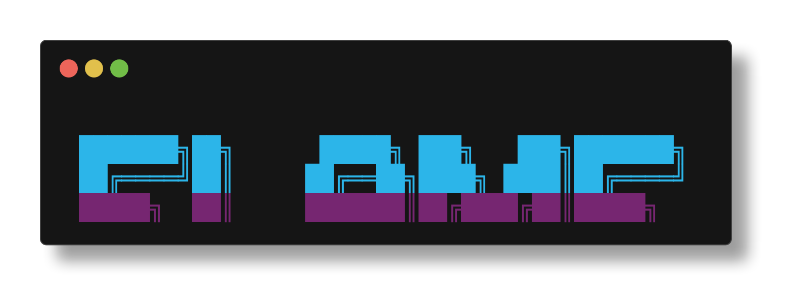
FLAME CHARTS
Bench tells you HOW LONG startup takes. Flame tells you WHERE the time goes.
THE FLAME VERB
zpwr flame
Generates a startup flame chart from zprof data. Shows you exactly which functions and files are consuming your startup time, in descending order.
READING THE OUTPUT
The flame chart shows a ranked list of functions: Each entry shows: - Function/file name - Time consumed (milliseconds) - Percentage of total startup time.
The top of the list is where optimization effort pays off the most. If one function takes 40% of startup, that is your target.
HOW ZPROF WORKS
Zsh has a built-in profiler: zprof. When enabled, it instruments every function call during shell init and records the wall-clock time. The flame verb wraps this into a readable report.
COMMON HOTSPOTS
What you will typically see at the top: compinit ........... completion system init compaudit .......... completion security check compdump ........... writing completion cache _zpwr_* ............ zpwr autoload functions nvm/pyenv/rbenv .... version manager hooks
OPTIMIZATION TIPS
1. If compinit is slow, run zpwr compile to cache it 2. If a version manager dominates, lazy-load it 3. If an autoload is slow, check for disk I/O in it 4. If compaudit is slow, fix the directory permissions 5. After changes, run zpwr bench to verify improvement
THE OPTIMIZATION LOOP
zpwr flame # identify the bottleneck
... fix it ...
zpwr bench # measure the improvement zpwr flame # find the next bottleneck
Repeat until you hit diminishing returns.
Flame charts turn gut feelings into data. Stop guessing. Start profiling.
§25Live Dashboard
LIVE DASHBOARD
Bench is a snapshot. Flame is a profile. Top is a live feed of your shell's vital signs.
THE TOP VERB
zpwr top
Launches a live shell resource dashboard. Think htop, but for your zsh environment.
WHAT EACH SECTION SHOWS
Shell Environment - Number of aliases currently defined - Number of functions loaded - Number of parameters (variables) in scope - Builtin and keyword counts.
Completion System - Completion functions registered - Cache file sizes and freshness.
Resource Usage - Memory footprint of the shell process - History file size and entry count - Autoload function count.
INTERPRETING THE DATA
High alias count? Normal for zpwr. 1000+ is fine. High function count? Also normal. Autoloaded functions are lazy-loaded, they cost nothing until called. Large HISTFILE? Consider zpwr backuphistory and trim. Stale cache? Run zpwr compile to refresh.
COMPANION VERBS
zpwr environmentcounts # one-shot environment stats zpwr autoloadcount # total number of autoloads zpwr autoloadlist # list all autoloads zpwr vimplugincount # count vim plugins zpwr emacsplugincount # count emacs plugins
Use these for quick spot checks without the full dashboard.
THE PERFORMANCE QUARTET
zpwr bench -> how fast is total startup? zpwr flame -> ASCII flame chart of function hotspots zpwr startup -> per-function zprof breakdown zpwr top -> what is loaded right now?
Four verbs. Four perspectives. Complete observability. Your shell is no longer a black box. It is an open book.
CH 07HEALTH & DIAGNOSTICS

§26The Doctor Is In (1/2)
THE DOCTOR IS IN
// every system needs a physician. yours lives at zpwr doctor. //
Your shell is a living organism. It accumulates cruft, grows tumors in PATH, and occasionally develops broken symlinks. The doctor runs a full-body scan and tells you what hurts.
INVOKE THE DOCTOR
zpwr doctor # full diagnostic scan zpwr doctor -h # help with detailed check list
WHAT IT CHECKS
1. STALE .zwc FILES Compiled zsh files older than their source. Fix: zpwr recompile
2. ZCOMPDUMP FRESHNESS Completion dump older than 1 week. Fix: zpwr regenzsh
3. DUPLICATE PATH ENTRIES Every duplicate is a wasted hash lookup. Fix: zpwr deduppaths
4. DUPLICATE/MISSING FPATH ENTRIES Same disease, different organ.
5. BROKEN SYMLINKS Dangling symlinks in $ZPWR.
Continued on next page...
§27The Doctor Is In (2/2)
THE DOCTOR (continued)
6. NAMED DIRECTORIES Invalid named dirs and p10k pollution from auto_name_dirs leaking gitstatus vars.
7. DEPENDENCIES Checks: git, eza, fzf, tmux, perl, python3, zinit.
8. HISTORY & BACKUPS Is HISTFILE present? How many backups exist?
9. CONFIG SYMLINKS Checks .zshrc, .vimrc, .tmux.conf are symlinks.
READING THE RESULTS
Green checkmark = healthy yellow warning = degraded but functional red X = broken, fix now.
THE SIGNAL BAR
########## = HEALTHY ######—- = WARNINGS ##——– = CRITICAL.
COMPANION VERBS
zpwr stale # stale .zwc, orphan caches zpwr pathaudit # deep PATH/FPATH audit zpwr lint # shellcheck + zsh -n zpwr startup # zprof breakdown zpwr ports # listening ports
PRO MOVE
Add zpwr doctor to weekly cron. Catch rot early.
§28Dependency Cartography

DEPENDENCY CARTOGRAPHY
// mapping the call graph. who calls whom. who dies alone. //
zpwr has hundreds of functions. They call each other in a tangled web of dependencies. The deps verb maps that web. Think of it as Google Maps for your function call graph.
BASIC USAGE
zpwr deps # summary overview zpwr deps zpwrClearList # what does zpwrClearList call? zpwr deps -h # full help
THE FLAGS
-r, –reverse Who calls this function? (reverse lookup) -o, –orphans Functions called by nobody internally -s, –summary Overview stats (default when no args) -d, –dot Output dot format for graphviz rendering
FORWARD LOOKUP: WHAT DOES X CALL?
zpwr deps zpwrDoctor
Shows every function zpwrDoctor calls, plus depth-2 callees. Output: zpwrDoctor -> zpwrPrettyPrint -> [zpwrLogDebug, ...]
REVERSE LOOKUP: WHO CALLS X?
zpwr deps -r zpwrPrettyPrint
Answers: "Who depends on zpwrPrettyPrint?" If the answer is 30 functions, that function is load-bearing. Touch it carefully.
ORPHAN DETECTION
zpwr deps --orphans
Lists functions that no other zpwr function calls. These are either entry points (user-invoked) or dead code. Orphans are not necessarily bad – many are top-level verbs or zinit hooks. But if you wrote zpwrFoo and nobody calls it, maybe zpwrFoo was a fever dream.
GRAPHVIZ EXPORT
zpwr deps --dot > graph.dot dot -Tsvg graph.dot -o graph.svg
Produces a visual dependency graph. Nodes are functions, edges are call relationships. The dot output uses cyberpunk colors: dark background, cyan nodes, magenta edges. Open graph.svg in a browser and behold the nervous system.
THE SUMMARY VIEW
With no args, deps shows two ranked lists: TOP 10 MOST DEPENDENCIES (functions that call the most others) TOP 10 MOST DEPENDED ON (functions called by the most others) Plus stats: total functions, orphan count, total call edges. The bar charts use Unicode block characters. Very aesthetic.
HOW IT WORKS
Scans autoload dirs: common, darwin, linux, comp_utils. Reads each function body and string-matches against all other function names. Also scans $ZPWR_SCRIPTS/lib.sh. It is O(n^2) and proud of it. Your function count is not big enough to matter.
§29Command Autopsy
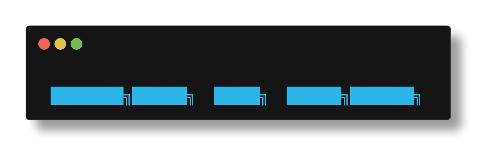
COMMAND AUTOPSY
// when you need to know why a command is slow, fat, or dead //
The trace verb is a command profiler. It wraps any command in instrumentation and reports wall time, CPU time, memory, context switches, page faults, and more.
BASIC USAGE
zpwr trace ls -la # full trace of ls -la zpwr trace -q make # quick: timing + resources only zpwr trace -h # full help
THE FLAGS
-q, –quick Timing + resource stats only (runs once) -s, –strace Syscall counts only (Linux; no ltrace) -l, –ltrace C library calls only (Linux; no strace) -a, –all Both strace + ltrace (default behavior)
WHAT YOU GET: THE RESOURCE CARD
Exit code green = 0, red = nonzero wall time real clock time with rating: INSTANT (<100ms), FAST (<1s), NOMINAL (<5s), SLOW (<30s), HEAVY (30s+) user/sys time CPU time in user/kernel space peak RSS max resident memory (auto-scaled B/KB/MB/GB) ctx switches voluntary + involuntary context switches page reclaims soft faults (memory mapped in from cache) page faults hard faults (actual disk I/O for memory) block I/O filesystem reads and writes signals recv number of signals delivered IPC messages sent/received inter-process messages shell delta memory change of the parent shell child procs before/after child process count.
PLATFORM DIFFERENCES
MacOS: -l for resource stats. SIP blocks dtruss/dtrace on most binaries. You get timing + memory + kernel stats. Linux: strace -c for syscall counts, ltrace -c for C library calls. Command re-runs for each tool.
PRACTICAL EXAMPLES
zpwr trace git status # is git status slow in this repo? zpwr trace -q rm -rf node_modules # quick mode for destructive ops zpwr trace -s npm install # syscalls only (Linux) zpwr trace zsh -c 'source ~/.zshrc' # profile shell startup
THE SIGNAL BAR
Bottom of output: a 10-block performance signal. ########## score 10 = under 100ms. Lightning. ######—- score 6 = under 2s. Acceptable. ##——– score 2 = under 30s. Go get coffee.
WARNING: Default mode re-runs the command for strace/ltrace. Use -q for destructive commands (rm, truncate, etc).
§30Usage Intelligence
USAGE INTELLIGENCE
// your shell keeps a diary. these verbs read it. //
You have $#ZPWR_VERBS verbs and thousands of aliases. Which ones do you actually use? Funcrank and aliasrank mine your shell history to answer that question.
FUNCRANK: FUNCTION & VERB PROFILER
zpwr funcrank # top 20 functions and verbs zpwr funcrank 40 # top 40 zpwr funcrank --reset # nuke cache, rebuild from scratch zpwr funcrank --reset 50 # rebuild then show top 50
Funcrank scans your HISTFILE for occurrences of known function names and zpwr verbs. It produces two ranked lists: 1. Top functions by history occurrence count 2. Top zpwr verbs by how often you type "zpwr <verb>" Each entry gets a Unicode bar chart. The biggest user wins.
ALIASRANK: REVERSE EXPANSION PROFILER
zpwr aliasrank # top 20 by expanded usage zpwr aliasrank 50 # top 50 zpwr aliasrank --reset # force cache rebuild
Here is the trick: zpwr uses zsh-expand to expand aliases before they hit history. So history contains the expanded form, not the alias name. Aliasrank does a reverse lookup: it matches history lines against alias values to figure out which alias you would have typed.
THE CACHE SYSTEM
$ZPWR_LOCAL/zpwr-aliasrank-cache.zsh command counts $ZPWR_LOCAL/zpwr-verbrank-cache.zsh verb counts $ZPWR_LOCAL/zpwr-rank-stamp history line watermark.
The cache auto-rebuilds when history grows by 1000+ lines. The watermark file stores the last-seen history line count. No need to rebuild every time – incremental is the way. Use –reset to force a full rebuild if cache seems stale.
INTERPRETING THE RESULTS
If your top verb is help, you are still learning. Good. If your top verb is cleanall, you break things a lot. If your top function is cd, you need more named dirs. If an alias never appears, maybe it is too long to remember.
PRACTICAL INTELLIGENCE
Run funcrank monthly. Notice patterns: - Verbs you never use might need better names or keybindings - Functions with high counts are candidates for optimization - Low-count zpwr verbs might benefit from shorter aliases.
Your history is a behavioral log. These verbs turn it into actionable intelligence. Know thyself, operative.
CH 08ENVIRONMENT MASTERY
§31Know Your Shell
KNOW YOUR SHELL
// you cannot master what you cannot measure //
Three verbs to audit your environment. Each one reveals a different cross-section of the machine you live inside.
ENVVARS: THE ZPWR VARIABLES
zpwr envvars # list all ZPWR_* env vars zpwr ev # same thing, shorter
Shows every environment variable starting with ZPWR_. These are the knobs and dials of the framework: paths, flags, plugin manager config, colorscheme, etc. If something is misconfigured, this is where you look.
ENVVARSALL: THE FULL PICTURE
zpwr envvarsall # every env var, all of them zpwr eva # same thing, shorter
Dumps every exported variable. This includes ZPWR_*, PATH, HOME, EDITOR, LANG, and everything else. Pipe it to fzf when you are hunting for a specific var:
zpwr eva | fzf
ENVIRONMENTCOUNTS: THE NUMBERS GAME
zpwr environmentcounts # full environment statistics zpwr envcounts # alias zpwr e # shortest form
This is the census. It counts everything loaded in your current shell session:
Aliases regular + global + suffix aliases functions autoloaded + defined functions builtins zsh builtin commands parameters shell variables (scalar, array, assoc) completions registered completion functions modules loaded zsh modules named dirs hash -d entries PATH entries directories in PATH FPATH entries directories in FPATH
The numbers tell you how armed you are. A fresh zpwr install might show thousands of aliases, hundreds of functions, and many registered completions. If the numbers are low, something failed to load.
PRO TIP: PAIR THEM
zpwr doctor # is anything broken? zpwr e # how much loaded? zpwr ev # are my zpwr vars right?
Run all three after installing or updating zpwr. They are your post-deployment smoke test.
§32The Option Matrix
THE OPTION MATRIX
// zsh has 200+ options. most people know 5. time to fix that. //
The zsh option system is a maze of boolean switches that control everything from globbing to history to error handling. These verbs help you navigate the labyrinth.
OPTIONS: THE BOOLEAN SWITCHES
zpwr options # list all set options
Shows every zsh option that is currently ON. The important ones for zpwr: extendedglob (#, , ^ in globs) – zpwr needs this autopushd (cd pushes to dirstack) histignorealldups (no duplicate history) sharehistory (history shared across sessions) completeinword (tab complete mid-word) promptsubst (parameter expansion in prompts)
If extendedglob is off, half of zpwr's glob tricks die. If sharehistory is off, your sessions are islands.
MODULES: THE LOADED EXTENSIONS
zpwr modules # list loaded zsh modules
Zsh modules are C libraries that add features: zsh/datetime EPOCHREALTIME, strftime zsh/stat zstat builtin for file metadata zsh/zutil zparseopts for flag parsing zsh/complist menuselect completion listing zsh/parameter $functions, $aliases, $parameters hashes zsh/terminfo terminal capability strings.
If zsh/parameter is not loaded, zpwr env verbs break. If zsh/datetime is missing, timing-based verbs fail. Load a missing module: zmodload zsh/modulename.
ZSTYLE: THE FINE-TUNING KNOBS
zpwr zstyle # list all zstyle settings
zstyle is zsh's configuration registry. It controls: :completion:* how tab completion behaves :vcs_info:* git/svn info in prompts :zpwr:* zpwr-specific settings.
Example styles zpwr sets: zstyle ':completion:*' menu select zstyle ':completion:*' matcher-list 'm:a-z=A-Z' The first enables arrow-key menu selection in tab complete. The second makes completion case-insensitive.
DETECTIVE WORK
Completions acting weird? Check:
zpwr options # is completeinword on? zpwr modules # is zsh/complist loaded? zpwr zstyle # what completion styles are set?
The answer is usually hiding in one of these three.
§33Cache Search
CACHE SEARCH
// the environment is a haystack. these are your magnets. //
zpwr maintains an environment cache for fast lookup. These verbs let you search, inspect, and edit that cache without grepping through raw variable dumps.
ENVIRONMENTCACHESEARCH: FZF ENV NAVIGATION
zpwr environmentcachesearch # fzf through cached env
Opens an fzf interface over the environment cache. Type a few characters to filter. The cache includes: - All exported environment variables - ZPWR_* configuration variables - PATH and FPATH entries - Named directory mappings.
This is faster than env | grep because it uses the pre-built cache file rather than querying the live env.
ENVACCEPT: ACCEPT A CACHE ENTRY
zpwr envaccept # accept/apply cached env entry
After finding a variable in the cache, this verb applies it to your current session. Useful when the cache has a value you want but the live env does not.
ENVEDIT: EDIT THE ENVIRONMENT
zpwr envedit # open env cache in EDITOR
Opens the environment cache file in your editor. Make changes, save, and the cache is updated. This is the surgical approach: when you know exactly which variable needs tweaking.
THE CACHE LIFECYCLE
1. zpwr regenenvcache builds the cache from live env 2. environmentcachesearch fuzzy-searches the cache 3. envaccept applies an entry 4. envedit manual edits
The cache lives at $ZPWR_LOCAL. It is regenerated during shell startup and when you run zpwr regenenvcache.
WORKFLOW EXAMPLE
"What is ZPWR_EDITOR set to?"
zpwr environmentcachesearch # type 'EDITOR' in fzf
Found it: ZPWR_EDITOR=nvim.
"I want to change a bunch of ZPWR_ vars."
zpwr envedit # opens in EDITOR
Edit the vars, save, done.
"Something is off, rebuild the cache."
zpwr regenenvcache # fresh cache from live env
PRO TIP
If you are debugging a missing env var, check two places: zpwr environmentcachesearch (cached) and zpwr eva (live). If cache has it but live does not, run zpwr regenenvcache.
§34Snapshots & Time Travel

SNAPSHOTS & TIME TRAVEL
// save your universe. restore it when everything goes wrong. //
The snapshot verb captures your entire terminal environment to a portable directory. The restore verb brings it back. This is git for your shell state.
TAKING A SNAPSHOT
zpwr snapshot # timestamp-named snapshot zpwr snapshot myproject # named snapshot zpwr snapshot before-refactor # meaningful name
WHAT GETS CAPTURED
Hash dirs named directory mappings (hash -d) aliases regular + global + suffix aliases env vars all exported variables (secrets excluded) zpwr vars ZPWR_VARS associative array functions user function count tracking history full shell history dump tmux sessions, windows, panes, resurrect state vim sessions saved vim session files dir stack current directory and pushd stack git status branch, commit, dirty state of cwd.
Storage: $ZPWR_LOCAL/snapshots/<name>/ Each snapshot is a directory of plain zsh files. Human-readable. Sourceable. Portable.
RESTORING A SNAPSHOT
zpwr restore # list available snapshots zpwr restore myproject # restore everything zpwr restore myproject aliases env # restore only aliases+env zpwr restore myproject dirs # just cd to saved pwd
SELECTIVE RESTORE COMPONENTS
All everything (default when no component given) hash named directories only aliases regular, global, suffix aliases env environment variables tmux stage tmux-resurrect file (press prefix+Ctrl-r) vim vim session files to history merge snapshot history into current session dirs cd to the saved working directory.
WHEN TO USE SNAPSHOTS
Before a big update: zpwr snapshot before-update Before experiments: zpwr snapshot stable-state Switching projects: zpwr snapshot projectA New machine setup: copy snapshot dir, restore on new host.
NOTE: Sensitive vars (PASSWORD, SECRET, TOKEN, AWS_SECRET*, GITHUB_TOKEN) are automatically excluded from env snapshots. Your secrets stay secret.
History merge is additive – it does not overwrite your current history. It uses fc -R to load entries.
CH 09THE JANITOR'S CLOSET
§35Cleanup Operations
CLEANUP OPERATIONS
// entropy is the enemy. the janitor is your friend. //
Shell environments accumulate garbage like a hoarder's attic. Cache files grow stale. Temp dirs fill up. Logs balloon. These verbs are the Marie Kondo of your $ZPWR.
CLEANALL: THE THERMONUCLEAR BROOM
zpwr cleanall # clean everything at once
Calls all the individual clean verbs in sequence. This is the "I do not know what is wrong but I want a fresh start" button. Safe but thorough.
INDIVIDUAL CLEAN VERBS
CLEANCACHE.
zpwr cleancache # clear general caches
Wipes cached data that zpwr generates during operation. Safe to run any time. Everything rebuilds on demand.
CLEANCOMPCACHE.
zpwr cleancompcache # clear completion cache
Removes the zsh completion cache directory. Run this when tab completions are showing stale results or when a new command does not appear in completions. Follow up with zpwr regenzsh to rebuild zcompdump.
CLEANDIRS.
zpwr cleandirs # clear cached dir listings
Removes directory cache files used by navigation commands. If directory completions point to dirs that no longer exist, this verb fixes that.
CLEANTEMP.
zpwr cleantemp # clear temp files
Removes temporary files zpwr created during operation. These are transient by nature – safe to nuke.
CLEANDIRSANDTEMP.
zpwr cleandirsandtemp # dirs + temp combined
Convenience combo of cleandirs and cleantemp.
CLEANLOG.
zpwr cleanlog # truncate log files
The zpwr logfile grows forever if you never clean it. This verb truncates or removes old log entries. Check log size: ls -lh $ZPWR_LOGFILE
THE CLEAN WORKFLOW
Light cleanup (weekly):
zpwr cleantemp && zpwr cleanlog
Medium cleanup (monthly):
zpwr cleancache && zpwr cleancompcache && zpwr regenzsh
Full cleanup (when things feel sluggish):
zpwr cleanall
None of these delete your configuration or history. They only remove regenerable cache and temp data.
§36Git Cache Hygiene
GIT CACHE HYGIENE
// zpwr tracks your git repos. the cache needs a bath sometimes. //
zpwr maintains caches of git repository locations so that repo-aware verbs (navigation, status, batch operations) do not have to scan the filesystem every time. Three verbs manage these caches.
CLEANGITCACHE: THE GENERAL REPO CACHE
zpwr cleangitcache # clear all git repo caches
Wipes the master list of known git repositories. This cache is built by scanning for .git directories and is used by verbs like zpwr fordir and repo navigation commands.
When to use it: - You moved or deleted git repos - Navigation is suggesting repos that no longer exist - You cloned new repos and they are not showing up.
After clearing, run zpwr regengitrepocache to rebuild.
CLEANGITCLEANCACHE: CLEAN REPOS ONLY
zpwr cleangitcleancache # clear clean repo cache
zpwr separately tracks which repos have a clean working tree (no uncommitted changes). This cache speeds up operations that only care about clean repos.
Clear this when: - The "clean repos" list seems wrong - You committed in a repo but it still shows as dirty.
CLEANGITDIRTYCACHE: DIRTY REPOS ONLY
zpwr cleangitdirtycache # clear dirty repo cache
The mirror of the clean cache. Tracks repos with uncommitted changes. Clear this when: - A repo shows as dirty but you already committed - The dirty count in the banner seems wrong.
Rebuild with: zpwr regengitdirtyrepocache.
THE GIT CACHE ARCHITECTURE
Regengitrepocache scans for all git repos regengitdirtyrepocache classifies clean vs dirty cleangitcache wipes the master list cleangitcleancache wipes the clean-only list cleangitdirtycache wipes the dirty-only list.
The caches live in $ZPWR_LOCAL as plain text files. One repo path per line. Grep-friendly. Human-readable.
THE FULL REFRESH
zpwr cleangitcache zpwr regengitrepocache zpwr regengitdirtyrepocache
Three commands. Fresh git cache. Takes a few seconds depending on how many repos you have scattered around.
§37Path Deduplication
PATH DEDUPLICATION
// every duplicate entry is a tiny crime against performance //
PATH and FPATH grow duplicates like weeds. Every subshell, every sourced script, every tool that helpfully "adds itself to your PATH" can insert duplicates. The deduppaths verb removes them.
THE VERB
zpwr deduppaths # deduplicate PATH and FPATH
Removes duplicate entries from both PATH and FPATH while preserving the order of first occurrence. If appears 3 times, only the first one survives.
WHY DUPLICATES HAPPEN
1. Shell inheritance Parent shell sets PATH. Child shell re-sources .zshrc. PATH grows. Nested tmux sessions make it worse.
2. Multiple init scripts Homebrew, nvm, pyenv, rbenv, cargo – each one adds to PATH in their init hook. Source them twice, PATH grows.
3. on macOS macOS ships with that runs path_helper. path_helper reads and and prepends entries. This runs on every login shell, BEFORE your .zshrc. Duplicates guaranteed.
4. Manual PATH manipulation export PATH="/my/dir:$PATH" in .zshrc. Every time .zshrc is sourced, another copy appears.
HOW TO PREVENT DUPLICATES
Zsh has a built-in mechanism: the typeset -U flag.
typeset -U path fpath
This marks the arrays as "unique" – zsh automatically removes duplicates when entries are added. zpwr sets this early in startup. But if something adds to PATH before zpwr loads, duplicates can sneak in.
DIAGNOSING THE PROBLEM
zpwr pathaudit # full audit: dupes, missing, writable zpwr doctor # checks for duplicate PATH/FPATH print -l path | sort | uniq -d # show only duplicated entries echo #path # count PATH entries
A healthy PATH has 10-30 entries. If you see 50+, something is adding entries in a loop.
THE FIX
zpwr deduppaths # instant dedup
Run it. Then check: echo $#path If the count dropped, you had duplicates. If it drops a lot, investigate the source.
For a permanent fix, find the script that adds duplicates and guard it with a check:
[[ -z path[(r)/my/dir] ]] && path=(/my/dir path)
§38The Nuclear Options
THE NUCLEAR OPTIONS
// when gentle cleanup is not enough. when you need to nuke from orbit. //
Most clean verbs are surgical. These two are orbital strikes. They clean, regenerate, rebuild, and update in one shot. Use them when you want a fresh start without reinstalling.
CLEANREFRESHUPDATE: THE BIG RED BUTTON
zpwr cleanrefreshupdate # clean + regen + update
This is the full-cycle maintenance verb. It: 1. Cleans all caches (equivalent to cleanall) 2. Regenerates compiled files, completions, env cache 3. Runs the update cycle for zpwr and plugins.
Think of it as "factory reset without losing data." Your configuration, history, and local files survive. Everything else gets rebuilt from source.
When to use it: - Shell startup feels slow and you have tried individual fixes - After a major zsh or macOS upgrade - When individual clean verbs did not solve the problem - When you want to feel powerful.
TIME COST: Several minutes. This is not instant. It downloads plugin updates and recompiles everything.
CLEANUPDATEDEPS: THE DEPENDENCY PURGE
zpwr cleanupdatedeps # clean deps + update them
Focused on external dependencies rather than caches. This verb: 1. Cleans stale dependency state 2. Updates all managed dependencies.
When to use it: - Plugin versions are stuck at old commits - A dependency update broke something - You want the latest of everything.
DECISION MATRIX
Symptom Verb.
Stale completions zpwr cleancompcache Slow startup zpwr recompile Missing new repos in nav zpwr cleangitcache General weirdness zpwr cleanall Everything is broken zpwr cleanrefreshupdate Plugins are ancient zpwr cleanupdatedeps.
THE ESCALATION PATH
Always start small and escalate:
zpwr cleantemp # level 1: temp files zpwr cleancache # level 2: all caches zpwr cleanall # level 3: everything zpwr cleanrefreshupdate # level 4: clean + rebuild + update
Do not start with level 4. That is like calling an airstrike because you saw a spider.
CH 10BUILD SYSTEM

§39Compilation 101
COMPILATION 101
// .zwc files: compiled zsh. faster loading. dark magic. //
Zsh can compile scripts to an internal bytecode format stored in .zwc (Zsh Word Code) files. Loading compiled files is faster than parsing source text every time.
WHAT IS A .ZWC FILE?
A .zwc file is the compiled form of a .zsh script or an autoload function directory. When zsh finds foo.zwc next to foo.zsh, it loads the compiled version – skipping the parsing step entirely.
For individual files: zcompile foo.zsh -> foo.zsh.zwc For directories: zcompile dir.zwc dir/* -> dir.zwc.
The speed difference is measurable on large files and during startup when many files are sourced.
RECOMPILE: BUILD ALL .ZWC FILES
zpwr recompile # compile all zpwr files zpwr compile # same thing
Scans all zpwr source files and compiles them to .zwc. This includes: - Autoload function files in $ZPWR_AUTOLOAD - Shell scripts in $ZPWR_ENV - Any .zsh file that has changed since last compile.
RELATED COMPILE VERBS
zpwr recompilefiles # compile specific file set zpwr compilefiles # alias for above zpwr recompilefpath # compile FPATH directories zpwr compilefpath # alias for above
DECOMPILE: REMOVE .ZWC FILES
zpwr decompile # remove all .zwc files zpwr uncompile # alias for above
Deletes all .zwc files in zpwr. After this, zsh falls back to parsing source files directly. Useful when: - Debugging a function that behaves differently than source - You suspect a stale .zwc file is loading old code - zpwr doctor reports stale .zwc files.
REFRESHZWC: SMART REBUILD
zpwr refreshzwc # refresh only stale .zwc files
Only recompiles .zwc files that are older than their source. Faster than a full recompile when only a few files changed.
THE COMPILATION WORKFLOW
After editing zpwr source files:
zpwr recompile # rebuild .zwc files
If something is weird after an update:
zpwr decompile && zpwr recompile # clean rebuild
Quick check for stale files:
zpwr doctor # reports stale .zwc files
The .zwc files are safe to delete. They are purely a performance cache. Source files are always the authority.
§40Compsys Cache
COMPSYS CACHE
// tab completion is a religion. the zcompdump is its scripture. //
The zsh completion system (compsys) is the most complex part of zsh. It maintains a dump file (zcompdump) that caches all registered completions. When it breaks, tab completion goes haywire. Here is how to fix it.
WHAT IS ZCOMPDUMP?
A file (usually or in $ZPWR_LOCAL) that contains all compdef registrations. When zsh starts, it sources this file instead of re-scanning all completion functions. This saves 100-500ms of startup time.
Location: $ZSH_COMPDUMP The file starts with #files:TIMESTAMP and contains compdef calls for every registered completion.
REGENZSH: THE COMPLETION RESET
zpwr regenzsh # regenerate zcompdump
Deletes the old zcompdump and forces compinit to rebuild it. This is the #1 fix for completion problems:
Symptom: New command installed but tab complete ignores it Fix: zpwr regenzsh.
Symptom: Tab shows wrong completions for a command Fix: zpwr cleancompcache && zpwr regenzsh.
Symptom: "command not found: compdef" errors on startup Fix: zpwr regenzsh.
Symptom: Startup is slow (500ms+ for completion init) Fix: zpwr regenzsh (forces fresh, optimized dump)
THE COMPLETION CACHE DIRECTORY
Separate from zcompdump, zsh also caches individual completion results (like package names, hostnames, etc.) in a cache directory.
zpwr cleancompcache # wipe the cache directory
This forces completions to re-query their sources. Useful when package lists or hostnames changed.
WHY COMPLETIONS BREAK
1. Stale zcompdump – new compdef not registered 2. Corrupted zcompdump – syntax error in dump file 3. Missing FPATH entry – completion function not found 4. Wrong function loaded – .zwc has old version 5. Plugin conflict – two plugins register for same cmd
THE NUCLEAR FIX
zpwr cleancompcache zpwr decompile zpwr regenzsh zpwr recompile
Four commands: nuke cache, remove .zwc, regen dump, recompile. This fixes 99% of completion problems. The remaining 1% is probably a bug in the completion function itself.
§41Tag Generation
TAG GENERATION
// ctrl-] in vim. M-. in emacs. the tags file makes it work. //
Tags files are indexes of symbol definitions: functions, variables, classes, methods. Your editor uses them to jump to definitions with a single keystroke. zpwr generates them.
CTAGS: THE CLASSIC
zpwr regenctags # regenerate ctags file
Runs exuberant-ctags or universal-ctags over the zpwr codebase. Produces a tags file that vim and emacs read.
In vim: Ctrl-] jumps to the definition under cursor. In vim: Ctrl-T jumps back to where you were. In vim: :tag zpwrDoctor jumps to zpwrDoctor.
Ctags understands shell functions, C, Python, Ruby, and dozens of other languages out of the box.
GTAGS: THE GNU GLOBAL SYSTEM
zpwr regengtags # regenerate GNU Global tags
GNU Global is a more powerful tagging system. It supports: - Forward references (where is this defined?) - Backward references (where is this called from?) - Symbol completion.
Produces GTAGS, GRTAGS, GPATH files in the project root. Query from command line: global -x zpwrDoctor Query references: global -rx zpwrDoctor.
GTAGS WITH PYGMENTS PARSER
zpwr regengtagspygments # gtags with Pygments backend
Uses the Python Pygments parser instead of the built-in one. Pygments understands more languages and file types. Requires: pip install pygments.
GTAGS BY FILE TYPE
zpwr regengtagstype # gtags filtered by type
Generate tags for a specific file type only. Faster than a full regen when you only care about one language.
HOW TAGS WORK WITH YOUR EDITOR
vim reads 'tags' file. :set tags=./tags;,tags Ctrl-] to jump, Ctrl-T to return :tselect for multiple matches.
emacs reads TAGS file (etags format) or uses gtags M-. To find definition, M-* to return ggtags-mode or helm-gtags for GNU Global.
nvim same as vim, plus LSP which often replaces tags but tags still work as a fast fallback.
WHEN TO REGENERATE
- After adding or renaming functions - After a zpwr update that adds new verbs - When "tag not found" errors appear for known functions - Use zpwr watch '*.zsh' 'zpwr regenctags' for auto-regen
§42Cache Regeneration
CACHE REGENERATION
// the opposite of cleaning. building the caches back up. //
Cleaning removes caches. Regeneration rebuilds them. These verbs construct the indexes and precomputed data that make zpwr fast.
REGEN: THE STANDARD REBUILD
zpwr regen # regenerate common caches
Rebuilds the most frequently used caches: environment cache, config links, keybindings. This is the verb you reach for after editing config files.
REGENALL: THE FULL REBUILD
zpwr regenall # regenerate everything
Every cache. Every index. Every precomputed file. This is the thorough version of regen. Takes longer but leaves nothing stale.
INDIVIDUAL REGEN VERBS
Regenenvcache.
zpwr regenenvcache # rebuild environment cache
Snapshots all env vars to a cache file for fast lookup. Used by environmentcachesearch and other env verbs.
Regenkeybindings.
zpwr regenkeybindings # rebuild keybinding index
Re-registers all zpwr keybindings. Run this after editing keybinding configuration or after a plugin clobbered your bindings.
Regenconfiglinks.
zpwr regenconfiglinks # rebuild config symlinks
Re-creates the symlinks from , , etc. Into the zpwr directory tree. Run this after a fresh clone or when zpwr doctor reports broken config links.
Regenhistory.
zpwr regenhistory # clean up history file
Processes the HISTFILE to remove corrupted entries. Zsh history files can accumulate broken lines from concurrent writes or improper shutdowns.
Regenpowerline.
zpwr regenpowerline # rebuild powerline config
Regenerates powerline/p10k configuration. Run when the prompt looks wrong after a terminal font change.
Regengitrepocache.
zpwr regengitrepocache # scan and cache git repos
Walks the filesystem finding git repos and builds a master list. Used by repo navigation and batch verbs.
THE REGEN CHEAT SHEET
After editing config: zpwr regen After zpwr update: zpwr regenall After env var changes: zpwr regenenvcache After repo changes: zpwr regengitrepocache After completion issues: zpwr regenzsh.
§43Updates & Dependencies
UPDATES & DEPENDENCIES
// staying current without breaking everything. a balancing act. //
zpwr is a living system that depends on external tools, plugins, and its own git repository. These verbs keep everything synchronized.
UPDATE: THE CORE UPDATE
zpwr update # update zpwr itself
Pulls the latest zpwr from the git remote. This is a git pull on $ZPWR. Your local config in $ZPWR_LOCAL is not touched.
UPDATEALL: THE EVERYTHING UPDATE
zpwr updateall # update zpwr + all plugins
Updates zpwr, zinit plugins, and other managed components. This is the weekly maintenance verb. Run it when you want the latest of everything.
UPDATEDEPS: DEPENDENCY UPDATES
zpwr updatedeps # update external dependencies
Updates the external tools zpwr depends on: zinit plugins, zsh-autosuggestions, zsh-syntax-highlighting, etc. Does not touch zpwr's own code.
UPDATEDEPSCLEAN: CLEAN + UPDATE DEPS
zpwr updatedepsclean # fresh dependency install
Cleans stale dependency state first, then updates. Use when updatedeps alone does not fix plugin issues.
UPDATEZINIT: ZINIT ONLY
zpwr updatezinit # update zinit plugin manager
Updates just the zinit plugin manager binary, not the plugins it manages. Use when zinit itself has a bug or you need a newer zinit feature.
UPDATEPULL: GIT PULL ALL REPOS
zpwr updatepull # pull all tracked git repos
Iterates over all cached git repos and runs git pull. Useful when you have many repos that track remotes and you want them all current.
THE UPDATE HIERARCHY
Update just zpwr (git pull) updatedeps just plugins and tools updatezinit just the plugin manager updateall zpwr + plugins + tools updatepull all tracked git repos updatedepsclean clean slate + update deps.
RECOMMENDED UPDATE SCHEDULE
Weekly: zpwr updateall After update: zpwr recompile If broken: zpwr updatedepsclean.
Always recompile after updating. New source files need new .zwc files. The old compiled versions will load stale code until you recompile.
CH 11MONITORING & AUTOMATION
§44File Watching
FILE WATCHING
// your files change. your command runs. automatically. //
The watch verb monitors files for changes and auto-executes a command when something is modified. It is the poor man's CI pipeline, running locally in your terminal.
USAGE
zpwr watch '<GLOB>' '<COMMAND>'
Two arguments: what to watch, and what to run. Quote both arguments to prevent premature expansion.
PRACTICAL EXAMPLES
zpwr watch '*.zsh' 'zpwr recompile'
Recompile zpwr whenever a .zsh file changes. Edit a function, save, and .zwc files auto-rebuild.
zpwr watch 'src/**/*.ts' 'npm run build'
Build your TypeScript project on every source change.
zpwr watch 'Makefile' 'make'
Run make whenever the Makefile changes.
zpwr watch '.' 'echo changed'
Watch the entire current directory.
zpwr watch '*.py' 'python -m pytest'
Run tests on every Python file change. TDD mode.
PLATFORM BACKEND
MacOS: Uses fswatch (brew install fswatch) Linux: Uses inotifywait (apt install inotify-tools)
The verb auto-detects which tool is available. If neither is found, it tells you what to install.
THE OUTPUT FORMAT
Each trigger shows a box with: - Trigger count (how many times it has fired) - Timestamp (when the change was detected) - Filename (which file changed) - Exit status (green ok or red exit code) - Elapsed time (how long the command took)
HOW TO STOP
Press Ctrl-C. The watcher process terminates cleanly.
GLOB HANDLING
The glob is split into directory and file filter: 'src/**/*.ts' -> watch src/ recursively, filter *.ts '.' -> watch current dir, no filter '*.zsh' -> watch ./, filter *.zsh.
The glob-to-regex conversion handles * and ? Patterns. For fswatch, it uses -e '.*' -i to exclude-then-include. For inotifywait, it uses zsh's glob matching on filenames.
§45Command Replay
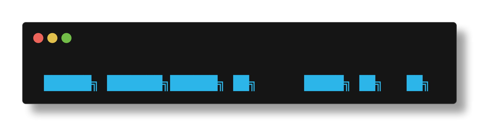
COMMAND REPLAY
// your history is a script. replay it on demand. //
The replay verb plays back the last N commands from your shell history. Three modes: look, execute, or tmux pane. It is a VCR for your terminal.
BASIC USAGE
zpwr replay # preview last 10 commands zpwr replay 20 # preview last 20 zpwr replay 5 exec # execute last 5 with timing zpwr replay 10 tmux # replay in a tmux split pane
THE THREE MODES
PREVIEW MODE (default, safe)
zpwr replay zpwr replay 20 preview
Lists the commands with line numbers. Nothing executes. Use this to review what you did before replaying it. The output shows helpful hints for switching to exec/tmux.
EXEC MODE (runs in current shell)
zpwr replay 5 exec
Executes each command sequentially in your current shell. Each command shows: - Command number [1/5] - The command being run - Exit status (green ok or red exit code) - Elapsed time in milliseconds.
WARNING: This runs real commands. If your last 5 commands included rm -rf something, it will do it again. Always preview first.
TMUX MODE (runs in a new pane)
zpwr replay 10 tmux
Opens a new tmux split pane and replays commands there. Your current pane is untouched. You can watch the replay happen side-by-side with your current work. The pane waits for Enter when done, then cleans up. Requires an active tmux session.
USE CASES
Reproduce a bug: zpwr replay 3 exec Demo your workflow: zpwr replay 20 tmux Audit what you did: zpwr replay 50 Re-run a build chain: zpwr replay 4 exec.
HOW IT WORKS
Uses fc -rl -N to extract the last N history entries. Reverses them to chronological order. In exec mode, each command is eval'd with timing via EPOCHREALTIME. In tmux mode, a temp script is built and executed in a split pane with a 0.5s delay between commands for readability. The script self-destructs after completion.
§46Log Surveillance
LOG SURVEILLANCE
// watching logs in glorious technicolor. the ccze way. //
zpwr logs everything: startup, errors, plugin loads, debug messages. The taillog verb tails these logs with optional ccze colorization for maximum readability.
BASIC USAGE
zpwr taillog # follow log with colors zpwr taillog -n 50 # last 50 lines, then follow zpwr taillog -f # colorize without following zpwr taillog -r # raw output with line numbers
THE FLAGS
-n, –lines N Show last N lines before following -f, –no-follow Just colorize, do not tail -f -r, –raw No ccze, plain output with line numbers
CUSTOM LOGFILE
zpwr taillog /var/log/system.log zpwr taillog /var/log/syslog
The last argument can be any logfile path. Default: $ZPWR_LOGFILE (the zpwr logfile).
CCZE: THE SECRET WEAPON
ccze is a log colorizer that understands dozens of log formats: syslog, Apache, Postfix, PHP, kernel messages, and more. It auto-detects the format and colorizes:
Timestamps in one color warnings in yellow errors in red info in cyan.
hostnames in magenta
Install: brew install ccze or apt install ccze If ccze is not found, taillog falls back to plain output with a helpful install hint.
THE ZPWR LOGGING VERBS
Taillog consumes logs. These verbs produce them:
zpwr logdebug <msg> # debug level zpwr loginfo <msg> # info level zpwr logerror <msg> # error level zpwr logtrace <msg> # trace level (most verbose)
The *console variants also print to stderr:
zpwr logdebugconsole <msg> zpwr loginfoconsole <msg> zpwr logerrorconsole <msg> zpwr logtraceconsole <msg>
LOG MAINTENANCE
Logs grow forever. Clean them periodically:
zpwr cleanlog # truncate the logfile
Or check the size first: ls -lh $ZPWR_LOGFILE
A 100MB logfile means your debug logging is too chatty. A 1KB logfile means nothing is being logged. Both are worth investigating.
§47Backup & Restore
BACKUP & RESTORE
// your history is priceless. these verbs are the insurance policy. //
Your shell history is years of accumulated knowledge: every command you ran, every fix you found at 2am, every pipeline you crafted. Losing it is losing institutional memory. These verbs prevent that.
BACKUP: THE GENERAL BACKUP
zpwr backup # backup zpwr configuration
Creates a timestamped backup of zpwr configuration files. This captures your local settings, tokens, and any customizations in $ZPWR_LOCAL.
Backup destination: $ZPWR_LOCAL/rcBackups/ Each backup is timestamped so you can have many.
BACKUPHISTORY: THE HISTORY VAULT
zpwr backuphistory # backup HISTFILE
Copies your HISTFILE to the backup directory with a timestamp. This is the most important backup in zpwr.
Your HISTFILE can be corrupted by: - Power loss during write - Concurrent sessions fighting over the file - Disk full causing truncated writes - Bad .zsh_history format from import/merge.
A weekly zpwr backuphistory gives you a safety net.
RESTOREHISTORY: THE TIME MACHINE
zpwr restorehistory # restore from backup
Restores HISTFILE from the most recent backup. Use when your history is corrupted or accidentally truncated.
The restore process: 1. Finds the latest backup in $ZPWR_LOCAL/rcBackups 2. Backs up the current (possibly broken) HISTFILE 3. Copies the backup over HISTFILE 4. Reloads history with fc -R.
SNAPSHOTS VS BACKUPS
Snapshot captures full env state (aliases, vars, tmux) backup copies config files to safety backuphistory specifically targets HISTFILE
Use snapshots for environment state. Use backups for file safety. They complement each other.
THE SAFETY PROTOCOL
Before a big change:
zpwr snapshot before-change zpwr backuphistory zpwr backup
Now you have three layers of protection: env snapshot, history backup, and config backup. If the change goes sideways, you can recover everything.
CRON IT
Add to your crontab (crontab -e):
0 3 * * 0 zsh -c 'source ~/.zshrc; zpwr backuphistory'
Every Sunday at 3am. Automatic insurance.
CH 12UTILITY ARSENAL

§48File & Process Operations
FILE & PROCESS OPERATIONS
// the everyday tools. sharpened and color-coded. //
zpwr wraps common file and process operations with enhanced output, color, and fzf integration. These are the verbs you reach for twenty times a day.
FILE LISTING
zpwr clearlist # clear screen + list files zpwr clearls # alias for clearlist zpwr info # alias for clearlist zpwr list # list files (no clear) zpwr ls # alias for list
Clearlist is the most-used verb after help. It clears the terminal and shows a fresh directory listing. Uses eza if available, falls back to ls.
FILE VIEWING
zpwr cat <file> # colorized cat zpwr c <file> # shortest form zpwr catcd <dir> # cat files in a directory
Cat/c uses bat or pygmentize for syntax highlighting when available. Plain cat as fallback. Catcd lists the contents of each file in a directory.
PROCESS MANAGEMENT
zpwr ps # enhanced process listing zpwr kill # fzf-powered process kill zpwr killedit # kill then edit related file
zpwr kill is the crown jewel here. It pipes process listings through fzf, letting you fuzzy-search for the process you want to terminate. Select it, confirm, dead. No more guessing PIDs.
FILE DESCRIPTORS
zpwr lsof # list open files (enhanced) zpwr lsofedit # lsof then edit result
zpwr lsof wraps lsof with fzf filtering. Useful when tracking down which process holds a file or which files a process has open.
FILE OPENING
zpwr open # open file/dir with system
Opens the target with the system handler: Finder on macOS, xdg-open on Linux. Works with files, directories, URLs.
THE COMBO MOVES
Clear terminal, list files, check what is running:
zpwr clearlist && zpwr ps
Find and kill a zombie process:
zpwr kill # fzf search -> select -> terminate
Find what is holding a port:
zpwr lsof # fzf through open files and ports
§49Batch Execution
BATCH EXECUTION
// one command, many targets. the industrial strength loop. //
When you need to run the same operation across multiple files, directories, or git repos, these verbs replace hand-rolled for loops with tested, colorized execution.
FOR: THE BASIC ITERATOR
zpwr for <command> # run command in current dir context
Executes a command with zpwr's enhanced output formatting. Shows timing, exit status, and colorized output.
FOR10: THE STRESS TEST
zpwr for10 <command> # run command 10 times
Executes a command 10 times. Useful for: - Benchmarking (is the timing consistent?) - Flaky test detection (does it fail intermittently?) - Load testing (can it handle rapid repeated execution?)
FORDIR: ITERATE OVER GIT REPOS
zpwr fordir <command> # run command in each git repo
Iterates over all cached git repos, cd's into each one, and runs the command. Extremely powerful for bulk operations:
zpwr fordir 'git status -s' # dirty files in all repos zpwr fordir 'git pull' # pull all repos zpwr fordir 'git stash list' # find forgotten stashes
Each repo's output is labeled with its path so you know which repo produced which output.
FORDIRUPDATE: PULL ALL REPOS
zpwr fordirupdate # git pull in every repo
Specialized version of fordir that runs git pull in every cached repo. Same as zpwr fordir 'git pull' but optimized for the common case.
EXECGLOB: GLOB-BASED EXECUTION
zpwr execglob <glob> <command> # run command on glob matches
Finds files matching a glob and runs a command on each:
zpwr execglob '*.log' 'wc -l' # line count each log file zpwr execglob '*.bak' 'rm' # delete all .bak files
EXECGLOBPARALLEL: PARALLEL GLOB EXECUTION
zpwr execglobparallel <glob> <cmd> # parallel execution
Same as execglob but runs commands in parallel. Useful when processing many files that are I/O-bound:
zpwr execglobparallel '*.png' 'optipng' # compress images
THE POWER COMBOS
Find all repos with uncommitted work:
zpwr fordir 'git diff --stat HEAD'
Count lines in all Python files:
zpwr execglob '**/*.py' 'wc -l'
Stress test a flaky command:
zpwr for10 'curl -s localhost:3000/health'
§50Text Operations
TEXT OPERATIONS
// find and replace. rename. count. transform. //
Text manipulation is the bread and butter of shell work. These verbs handle the common cases: renaming files, replacing strings, counting lines, and transforming text.
RENAME: FILE RENAMING
zpwr rename # rename files with patterns
Renames files using pattern matching. Safer than raw mv because it shows what will happen before doing it.
REPLACER: FIND AND REPLACE IN FILES
zpwr replacer # search and replace in files
Performs find-and-replace across multiple files. The codebase refactoring tool. When you renamed a function and need to update every call site.
CHANGENAME: RENAME WITH HISTORY
zpwr changename # rename with tracking
Renames files or directories with additional tracking. More sophisticated than basic rename for complex renaming operations.
CHANGENAMEZPWR: ZPWR-SPECIFIC RENAME
zpwr changenamezpwr # rename within zpwr codebase
Specialized rename for zpwr function and file names. Handles the autoload naming convention (file name must match function name) and updates references.
LINECOUNT: COUNT LINES
zpwr linecount # count lines in files
Enhanced line counting with formatting and totals. Shows per-file counts and a grand total. More informative than raw wc -l.
PRE & POST: TEXT INJECTION
zpwr pre # prepend text to input zpwr post # append text to input
Pipe filters that add text before or after each line. Useful in pipelines for formatting:
ls | zpwr pre ' - ' # bullet-point file list cat urls.txt | zpwr post '/api/v1' # append to each URL
URLSAFE: URL ENCODING
zpwr urlsafe # URL-encode a string
Converts special characters to percent-encoded form. Spaces become %20, ampersands become %26, etc. Essential when constructing URLs from user input.
THE TEXT PIPELINE
zpwr text verbs compose naturally in pipelines:
cat data.txt | zpwr pre 'ROW: ' | zpwr post ' ;'
Result: ROW: line1 ; ROW: line2 ;
Rename all .txt to .md:
zpwr rename # interactive rename
Replace 'oldFunc' with 'newFunc' across the codebase:
zpwr replacer # interactive replace
§51Display & Banners
DISPLAY & BANNERS
// because aesthetics matter. even in a terminal. //
zpwr ships with a fleet of display verbs that produce ASCII art, colorized output, and terminal animations. Some are informational. Some are just cool to look at.
THE BANNER FAMILY
zpwr about # the welcome banner zpwr banner # same as about zpwr bannercounts # banner + environment stats
The core banner shows the zpwr ASCII logo with version, author, and system info. Bannercounts adds the environment census (alias count, function count, etc.).
zpwr bannerlolcat # banner piped through lolcat
Rainbow gradient banner. Requires: gem install lolcat For when monochrome is not enough and you need to assert terminal dominance with a rainbow.
zpwr bannerpony # banner with ponysay
Displays the banner inside an ASCII pony speech bubble. Requires: pip install ponysay Peak terminal culture.
zpwr bannernopony # banner without the pony
For the pony-averse. All the info, none of the horse.
PRETTY PRINTING
zpwr prettyprint # formatted text output zpwr altprettyprint # alternate format zpwr printmap # print associative array
Prettyprint is used internally by many zpwr verbs to format output with consistent color and spacing. Printmap formats associative arrays as aligned key-value tables. Useful for debugging hash tables.
COLOR TESTING
zpwr colortest # test basic terminal colors zpwr colortest256 # full 256-color palette
Run these after changing terminals, fonts, or color schemes. Colortest shows the 16 ANSI colors. Colortest256 shows the full 256-color grid. If colors look wrong, your TERM or terminal emulator config needs adjustment.
ANIMATION
zpwr animate # terminal animation
Plays an ASCII animation in the terminal. Because sometimes you need to entertain yourself while waiting for a build.
THE DISPLAY ARSENAL AT A GLANCE
Impress a colleague: zpwr bannerlolcat Debug your terminal: zpwr colortest256 Count your weapons: zpwr bannercounts Maximum absurdity: zpwr bannerpony Format a hash table: zpwr printmap Kill time aesthetically: zpwr animate.
CH 13EMACS DIMENSION
§52Emacs Integration Overview
ENTERING THE EMACS DIMENSION
Where M-x is a way of life and pinky fingers go to die.
You thought there were only vim verbs? Think again, operative. ZPWR mirrors every vim operation with an emacs equivalent. Same power, different religion.
THE 28 EMACS VERBS:
FILE OPS emacsall, emacsalledit, emacsautoload RECENT emacsrecent, emacsrecentcd, emacsrecentsudo SEARCH emacsfilesearch, emacsfilesearchedit emacsfindsearch, emacsfindsearchedit emacslocatesearch, emacslocatesearchedit emacswordsearch, emacswordsearchedit TAGS emacsctags, emacsgtags, emacsgtagsedit CONFIG emacsconfig, emacsemacsconfig, emacstokens SERVER emacsallserver SCRIPTS emacsscripts, emacsscriptedit META emacsplugincount, emacspluginlist, emacszpwr.
THE MIRROR PRINCIPLE:
Every vim verb has an emacs twin. The architecture is symmetrical by design. You can swap editors without losing any ZPWR functionality.
vim verb emacs twin zpwr vimall –> zpwr emacsall zpwr vimrecent –> zpwr emacsrecent zpwr vimscripts –> zpwr emacsscripts.
PHILOSOPHY:
ZPWR does not care about your editor war allegiance. It arms both sides equally. The real enemy is notepad.
// the emacs dimension runs parallel to vim-space
// choose your weapon, the framework adapts
// $ZPWR_EDITOR controls which universe you inhabit
§53Emacs File Operations
EMACS FILE OPS: OPENING THINGS SINCE 1976
emacs: an operating system lacking only a decent editor.
zpwr emacsall
Opens all ZPWR framework files in emacs via fzf. Every autoload, script, config – the whole kingdom.
zpwr emacsall # browse all files zpwr emacsalledit # same but editable
zpwr emacsrecent
Opens recently edited files. Emacs remembers where you have been, like a browser history for code.
zpwr emacsrecent # fzf recent files zpwr emacsrecentcd # cd to recent dir zpwr emacsrecentsudo # recent with sudo zpwr emacsrecentsudocd # sudo + cd combo
zpwr emacsscripts
Browse and open ZPWR scripts directory. Where the shell scripts live and breathe.
zpwr emacsscripts # browse scripts zpwr emacsscriptedit # edit a script
zpwr emacsautoload
Open autoloaded zsh functions in emacs. The beating heart of ZPWR's function library.
zpwr emacsautoload # browse autoloads
// protip: emacsrecent is your daily driver
// it learns your habits and surfaces what matters
// sudo variants for when /etc needs surgery
§54Emacs Search & Tags
SEARCH & TAGS: FIND ANYTHING, ANYWHERE
grep is for amateurs, we have fzf-powered search beams.
FILE SEARCH (by filename):
zpwr emacsfilesearch # fzf filename search zpwr emacsfilesearchedit # search + edit
Searches file NAMES across the ZPWR tree. Fast, fuzzy, and feeds results into emacs.
WORD SEARCH (by content):
zpwr emacswordsearch # search file content zpwr emacswordsearchedit # content search + edit
Searches INSIDE files for patterns. Like ag/rg but with fzf preview and direct-to-emacs piping.
FIND & LOCATE SEARCH:
zpwr emacsfindsearch # find-based search zpwr emacsfindsearchedit # find + edit zpwr emacslocatesearch # locate db search zpwr emacslocatesearchedit # locate + edit
TAGS – CODE NAVIGATION:
zpwr emacsctags # ctags generation zpwr emacsgtags # GNU Global tags zpwr emacsgtagsedit # gtags + jump to def
Tags let emacs jump to function definitions instantly. Ctags for basic tagging, gtags for cross-reference.
// the search hierarchy:
// wordsearch = grep inside files (content)
// filesearch = find by filename (path)
// locatesearch = system locate db (everywhere)
// findsearch = find command (directory tree)
// tags = jump to definitions (symbols)
§55Emacs Config & Server
CONFIG & SERVER: THE EMACS MOTHERSHIP
Because starting emacs fresh every time is a war crime.
zpwr emacsconfig
Edit ZPWR's emacs configuration files. The bridge between the shell framework and emacs-land.
zpwr emacsconfig # edit zpwr emacs cfg
zpwr emacsemacsconfig
Edit your personal emacs init files (init.el, etc). Deeper than emacsconfig – this is YOUR emacs setup.
zpwr emacsemacsconfig # edit ~/.emacs.d
zpwr emacsallserver
Opens files using emacsclient, connecting to a running emacs daemon. Instant file opens, no startup penalty.
zpwr emacsallserver # open via daemon
HOW THE SERVER WORKFLOW WORKS: 1. Start emacs daemon: emacs –daemon 2. Use emacsallserver to open files via emacsclient 3. Files open instantly in the running emacs instance 4. No more 3-second startup tax per file.
zpwr emacstokens
Edit your tokens/secrets file in emacs. API keys, env vars, the classified stuff.
zpwr emacstokens # edit ZPWR_LOCAL/.tokens.sh
zpwr emacszpwr
Open the entire ZPWR directory tree in emacs.
zpwr emacszpwr # the whole framework
// emacsclient + daemon = the cheat code
// startup once, open files forever
// this is how emacs users actually survive
CH 14TMUX WARFARE

§56Tmux Session Management
TMUX WARFARE: TERMINAL MULTIPLEXER COMBAT
One terminal to rule them all, split them, and in panes bind them.
zpwr attach
Attach to an existing tmux session. If no session exists, one will be summoned.
zpwr attach # rejoin the matrix
zpwr detach
Detach from current tmux session gracefully. Your processes keep running in the background.
zpwr detach # leave but don't kill
zpwr killmux
Kill the tmux server. Nuclear option. Everything dies. WARNING: all sessions, windows, and panes – gone.
zpwr killmux # scorched earth
zpwr start
Start a new tmux session with ZPWR's custom layout. Preconfigured panes, windows, and keybindings.
zpwr start # bootstrap tmux
zpwr starttabs
Start tmux with multiple pre-configured tabs. Each tab gets its own purpose – dev, logs, git, etc.
zpwr starttabs # multi-tab setup
// the tmux lifecycle:
// start –> attach –> detach –> attach –> killmux
// sessions persist through SSH disconnects
// your terminal state is immortal
§57Key Duplication – Multi-Pane Workflow
KEY DUPLICATION: TYPE ONCE, EXECUTE EVERYWHERE
The closest thing to being in two places at once.
zpwr startsend
Send keystrokes to ALL panes in the current window. Whatever you type goes to every pane simultaneously.
zpwr startsend # enable key broadcast
USE CASE: You have 4 panes SSHed into 4 servers. You need to run the same command on all of them. Startsend + type once = executed on all 4.
zpwr startsendfull
Like startsend, but broadcasts across ALL windows and ALL panes in the entire tmux session.
zpwr startsendfull # global broadcast
DANGER: every pane in every window receives input. Make sure you know what you are doing.
zpwr stopsend
Turn off key broadcasting. Back to single-pane input.
zpwr stopsend # disable broadcast
THE MULTI-PANE WORKFLOW:
1. zpwr start # launch tmux 2. Split into 4 panes (Ctrl-b %) 3. SSH into different servers in each 4. zpwr startsend # enable broadcast 5. Type: sudo apt update && sudo apt upgrade -y 6. All 4 servers update simultaneously 7. zpwr stopsend # back to normal
// sysadmins call this poor mans ansible
// but honestly it is faster for quick ops
§58Clipboard & Buffer Operations
CLIPBOARD OPS: COPY-PASTE ON STEROIDS
Because Ctrl-C Ctrl-V is so last millennium.
zpwr pastebuffer
Paste from the tmux paste buffer into the terminal. Tmux has its own clipboard, separate from the system.
zpwr pastebuffer # paste tmux buffer
zpwr pastestring
Paste a specific string into the active pane. Programmatic pasting – useful in scripts.
zpwr pastestring 'echo hello' # paste literal text
zpwr pastecommand
Paste and execute a command in the active pane. Like pastestring but hits enter for you.
zpwr pastecommand 'ls -la' # paste + execute
zpwr google
Open a Google search in your default browser. Because sometimes you need to leave the terminal.
zpwr google 'zsh completion' # search the web
zpwr openurl
Open any URL in the default browser.
zpwr openurl https://github.com # open URL
// the clipboard pipeline:
// terminal output –> tmux buffer –> pastebuffer
// system clipboard –> pastestring –> pane
// brain –> google –> browser –> back to terminal
§59Autocomplete Integration
AUTOCOMPLETE: THE TAB KEY'S FINAL FORM
Zsh-autocomplete + tmux = sentient tab completion.
zpwr startauto
Enable the ZPWR autocomplete integration. Completions appear as you type, no Tab needed.
zpwr startauto # enable live complete
zpwr stopauto
Disable autocomplete. Sometimes you want silence.
zpwr stopauto # disable live complete
HOW IT WORKS WITH TMUX:
The autocomplete system hooks into zsh's completion engine and renders suggestions in real-time.
FEATURES: * Live suggestions as you type * History-based predictions * Path completion with preview * Command argument completion * Works across all tmux panes independently.
TMUX + AUTOCOMPLETE TIPS:
* Each tmux pane runs its own zsh instance * Autocomplete state is per-pane * startauto/stopauto affects current pane only * If completions feel slow, check $ZPWR_COMPS_CACHE
zpwr stopauto # when it gets noisy zpwr startauto # when you miss it
// autocomplete is like a copilot for your shell
// it watches, it learns, it suggests
// toggle it off when you need to think in silence
§60Process Monitoring
PROCESS MONITORING: WATCHING THE WATCHERS
Every PID tells a story, most of them tragic.
zpwr pstreemonitor
Displays a live process tree. Watch your processes branch, fork, and occasionally die unexpectedly.
zpwr pstreemonitor # live process tree
Uses pstree under the hood with continuous refresh. Like htop's tree view but from the ZPWR command line.
zpwr tty
Show info about the current terminal/tty.
zpwr tty # current tty info
TMUX + MONITORING WORKFLOW:
The power move: dedicate a tmux pane to monitoring.
LAYOUT EXAMPLE: +——————-+——————–+ | | | | your work | pstreemonitor | | | | +——————-+——————–+ | zpwr taillog | +—————————————–+
PROCESS HUNTING:
ZPWR integrates fzf with ps and lsof for killing.
Ctrl-Y Ctrl-K # fzf kill by ps Ctrl-Y Ctrl-L # fzf kill by lsof.
// pstreemonitor in a side pane = instant situational awareness
// you will see zombie processes before they see you
CH 15NETWORK & CONTAINERS
§61Network Recon
NETWORK RECON: SCANNING THE WIRE
Packets don't lie, but DNS sometimes does.
zpwr digs
Enhanced DNS lookup. Wraps dig with cleaner output. When you need to know where a domain really points.
zpwr digs github.com # DNS lookup zpwr digs example.com # check any domain
Shows A records, CNAME chains, TTLs – the works. Faster than remembering dig +short +noall +answer.
zpwr pi / zpwr ping
Ping a host. Simple, reliable, essential. 'pi' is the short alias because typing matters.
zpwr pi google.com # quick ping zpwr ping 8.8.8.8 # verbose ping
zpwr pir
Ping with extended options. More detailed network diagnostics for when simple ping is not enough.
zpwr pir 192.168.1.1 # extended ping
RECON WORKFLOW:
1. zpwr digs suspect-domain.com # where does it resolve? 2. zpwr pi <ip-from-dig> # is it alive? 3. zpwr pir <ip> # deeper probe
// three verbs, complete network recon
// digs for DNS, pi for heartbeat, pir for details
// when in doubt, ping first – dead hosts tell no tales
§62Tor Integration
TOR INTEGRATION: ANONYMOUS MODE ENGAGED
The onion router: because privacy is not a crime.
zpwr torip
Check your current Tor exit node IP address. Confirms you're routing through the onion network.
zpwr torip # show tor exit IP
If Tor is running, this shows the exit node's IP. If not, it'll tell you Tor isn't connected.
zpwr toriprenew
Request a new Tor circuit. Get a fresh exit node and a new apparent IP address.
zpwr toriprenew # new identity
BEFORE YOU START:
Tor must be installed and running as a service.
MacOS: brew install tor && brew services start tor Linux: sudo apt install tor && sudo systemctl start tor.
THE ANONYMOUS WORKFLOW:
1. Start tor service 2. zpwr torip # confirm you're connected 3. Do your thing 4. zpwr toriprenew # rotate identity 5. zpwr torip # verify new IP
DISCLAIMER: Tor provides anonymity, not invincibility. DNS leaks, browser fingerprinting, and OPSEC failures can still expose you. Use responsibly.
// "I am become anonymous, destroyer of logs"
// – J. Robert Oppenheimer, probably not
§63Docker Management
DOCKER MANAGEMENT: CONTAINER WARFARE
It works on my machine –> we ship the machine.
zpwr dockerwipe
The nuclear option for Docker. Removes EVERYTHING: containers, images, volumes, networks – all of it.
zpwr dockerwipe # purge all docker
WARNING: This is not gentle. It will: - Stop all running containers - Remove all containers - Remove all images - Remove all volumes - Prune everything.
WHEN TO USE: * Disk space emergency (docker images love eating disk) * Fresh start after a botched experiment * When 'docker system df' shows 50GB of shame.
zpwr dfimage
Reverse-engineer a Docker image to show its Dockerfile. See how an image was built without the source.
zpwr dfimage nginx:latest # reverse Dockerfile zpwr dfimage myapp:v2 # inspect any image
Useful for auditing third-party images. Trust but verify what's in that container.
DOCKER TRIAGE:
1. $ docker system df # how bad is it? 2. zpwr dfimage suspect:latest # what's inside? 3. zpwr dockerwipe # burn it all down 4. $ docker system df # ahh, fresh disk
// dockerwipe: for when docker system prune isn't angry enough
// dfimage: for when you don't trust the README
§64Clone & GitHub Workflow
CLONE & GITHUB: THE FULL GIT WORKFLOW
git clone is just the beginning of the relationship.
zpwr clone
Clone a git repository with ZPWR's enhanced setup. Handles auth, directory placement, and post-clone hooks.
zpwr clone user/repo # clone from GitHub zpwr clone https://... # clone any URL
zpwr reveal
Open the current git repo's GitHub page in browser. Instant context switch from terminal to web.
zpwr reveal # open repo in browser
zpwr revealrecurse
Open GitHub pages for the repo AND its submodules. When you need the full picture of a multi-repo project.
zpwr revealrecurse # open all repos
THE GITHUB WORKFLOW:
1. zpwr clone user/repo # get the code 2. $ cd repo && hack hack hack 3. zpwr reveal # check CI/issues 4. $ git push # ship it
RELATED TOOLS:
zpwr killremote # kill remote sessions
Killremote terminates remote SSH/tmux sessions that have gone stale. Cleanup for the disciplined operator.
// reveal is the bridge between terminal and browser
// faster than typing github.com/user/repo
// your fingers will thank you
CH 16THE LOGGING SYSTEM
§65Log Levels
LOG LEVELS: SIGNAL VS NOISE
if a tree falls in the forest and nobody tails the log...
ZPWR has a full structured logging system with four levels. Each level has a file variant and a console variant.
LEVEL 1: TRACE
zpwr logtrace 'entering func' # most verbose
The firehose. Every function entry, variable assignment, and internal state change. Use for deep debugging only.
LEVEL 2: DEBUG
zpwr logdebug 'cache miss' # developer detail
Detailed info for development. Cache behavior, branch decisions, intermediate values.
LEVEL 3: INFO
zpwr loginfo 'update done' # normal operations
Standard operational messages. "Started", "Completed", "Loaded 47 plugins". The daily heartbeat.
LEVEL 4: ERROR
zpwr logerror 'file not found' # something broke
Things that should not have happened but did. Missing files, failed commands, broken assumptions.
SEVERITY PYRAMID:
§66Console vs File Logging
CONSOLE VS FILE: TWO DESTINATIONS
To stderr or to disk, that is the question.
Every log verb comes in two flavors:
FILE VARIANTS (write to $ZPWR_LOGFILE):
zpwr logtrace 'msg' # --> logfile zpwr logdebug 'msg' # --> logfile zpwr loginfo 'msg' # --> logfile zpwr logerror 'msg' # --> logfile
These write silently to the log file. No terminal output. Perfect for background operations and scripts.
CONSOLE VARIANTS (write to stderr AND logfile):
zpwr logtraceconsole 'msg' # --> stderr + file zpwr logdebugconsole 'msg' # --> stderr + file zpwr loginfoconsole 'msg' # --> stderr + file zpwr logerrorconsole 'msg' # --> stderr + file
These print to your terminal AND write to the log. For interactive debugging when you need to see it live.
THE LOGFILE:
$ZPWR_LOGFILE = $ZPWR_LOCAL/zpwr.log
cat ZPWR_LOGFILE | tail -20 # recent entries wc -l ZPWR_LOGFILE # how big is it?
CHOOSING YOUR VARIANT:
SCENARIO USE Background script running loginfo Debugging interactively logdebugconsole Tracking a rare bug logtraceconsole Production error handling logerror.
// file = silent, persistent, searchable
// console = loud, immediate, ephemeral
// use both strategically
§67Reading Logs
READING LOGS: THE ART OF LOG DIVING
Somewhere in that wall of text is the answer you seek.
zpwr taillog
Live tail of the ZPWR log file with ccze colorization. Watch events stream by in glorious technicolor.
zpwr taillog # live colorized tail
ccze automatically highlights timestamps, levels, paths, and errors. Makes raw logs actually readable.
WHAT TO LOOK FOR:
ERROR lines = something broke, investigate immediately WARN lines = potential issue, worth noting INFO lines = normal operations, sanity check DEBUG lines = details for troubleshooting.
TRACE lines = deep internals, very verbose
FILTERING TECHNIQUES:
grep ERROR ZPWR_LOGFILE # errors only grep -c ERROR ZPWR_LOGFILE # count errors tail -100 ZPWR_LOGFILE # last 100 lines
TMUX LOG MONITORING SETUP:
Dedicate a tmux pane to zpwr taillog:
1. Split pane: Ctrl-b % 2. In new pane: zpwr taillog 3. Work in other pane, watch logs stream 4. Errors glow red thanks to ccze
LOG MAINTENANCE:
Logs grow forever if you let them. ZPWR handles rotation, but you can manually truncate:
: > ZPWR_LOGFILE # truncate to zero
// taillog + ccze = the cyberpunk log experience
// errors in red, info in green, timestamps in cyan
§68Debug Mode
DEBUG MODE: WHEN THINGS GO SIDEWAYS
Enabling verbose output is how you stop guessing.
ZPWR_DEBUG
Set this env var to enable debug-level logging. More detail in the log, more signal for your hunt.
export ZPWR_DEBUG=true # enable debug zpwr reload # reload with debug zpwr taillog # watch debug output
ZPWR_TRACE
Maximum verbosity. Every function entry and exit, every variable, every decision point.
export ZPWR_TRACE=true # enable trace zpwr reload # reload with trace
WARNING: Trace mode generates MASSIVE log output. Your logfile will grow fast. Use sparingly.
DEBUGGING WORKFLOW:
1. Reproduce the problem once to confirm it 2. $ export ZPWR_DEBUG=true 3. zpwr reload 4. Reproduce the problem again 5. zpwr taillog # find the smoking gun 6. Still lost? Escalate: 7. $ export ZPWR_TRACE=true 8. zpwr reload && reproduce
DISABLING DEBUG:
unset ZPWR_DEBUG ZPWR_TRACE # back to normal zpwr reload # reload clean
// debug mode: "trust but verify" in action
// trace mode: "verify everything, trust nothing"
// always disable after debugging or your log eats disk
CH 17INTROSPECTION

§69Counting Everything
COUNTING EVERYTHING: THE CENSUS BUREAU
If you can't measure it, you can't brag about it.
ZPWR tracks the size of every component. These verbs tell you exactly how big your installation is.
zpwr autoloadcount
Count of autoloaded zsh functions in the framework.
zpwr autoloadcount # how many functions?
zpwr scriptcount
Count of shell scripts in $ZPWR/scripts.
zpwr scriptcount # how many scripts?
zpwr zshplugincount
Count of installed zsh plugins (zinit, oh-my-zsh, etc).
zpwr zshplugincount # zsh plugins loaded
zpwr vimplugincount
Count of installed vim/neovim plugins.
zpwr vimplugincount # vim plugins loaded
zpwr emacsplugincount
Count of installed emacs packages.
zpwr emacsplugincount # emacs pkgs loaded
THE FULL CENSUS:
zpwr autoloadcount && zpwr scriptcount && \
zpwr zshplugincount && zpwr vimplugincount && \ zpwr emacsplugincount.
Run all five to get the full picture. ZPWR typically ships with 300+ autoloads, 50+ scripts, and dozens of plugins across all three editors.
// these counts tell you the scope of ZPWR
// hundreds of functions working in concert
// like a small city running on your laptop
§70Listing Everything
LISTING EVERYTHING: THE INVENTORY MANIFEST
Counting is nice, but names are power.
Counts tell you how many. Lists tell you WHAT. Every count verb has a list counterpart.
zpwr autoloadlist
List every autoloaded function by name.
zpwr autoloadlist # all function names zpwr autoloadlist | grep fzf # find fzf funcs
zpwr scriptlist
List every script in the scripts directory.
zpwr scriptlist # all scripts
zpwr zshpluginlist
List installed zsh plugins with their sources.
zpwr zshpluginlist # all zsh plugins
zpwr vimpluginlist
List installed vim/neovim plugins.
zpwr vimpluginlist # all vim plugins
zpwr emacspluginlist
List installed emacs packages.
zpwr emacspluginlist # all emacs packages
POWER COMBOS:
zpwr autoloadlist | wc -l # quick count zpwr autoloadlist | fzf # fuzzy browse zpwr scriptlist | sort # alphabetical
// lists are grep-able, fzf-able, pipe-able
// the raw material for your own exploration
// pipe into fzf for interactive discovery
§71History Archaeology
HISTORY ARCHAEOLOGY: DIGGING UP THE PAST
Your terminal remembers everything, even the mistakes.
zpwr hist
Browse command history with fzf. Search, preview, and re-execute past commands interactively.
zpwr hist # fzf history browser
zpwr histedit
Edit the history file directly. Surgically remove embarrassing commands or fix typos in saved history.
zpwr histedit # edit history file
Use with care. History surgery is delicate work.
zpwr histfile
Show the path to the current history file. Useful when you're not sure which histfile is active.
zpwr histfile # show histfile path
zpwr catviminfo
Display vim's recent file history from viminfo. What files has vim touched recently?
zpwr catviminfo # vim file history
zpwr catrecentfviminfo / catnviminforecentf
Cross-reference vim/nvim recent files with the recentf list. Where vim and shell history intersect.
zpwr catrecentfviminfo # vim+recentf cross zpwr catnviminforecentf # nvim+recentf cross
// your history is a goldmine of workflow patterns
// hist + fzf = instant command recall
// histedit = revisionist history (use responsibly)
§72Verb Discovery
VERB DISCOVERY: FINDING WHAT'S POSSIBLE
You can't use what you don't know exists.
zpwr subcommands
List all zpwr subcommands (verbs). The master index of everything zpwr can do.
zpwr subcommands # all subcommands
zpwr subcommandscount
How many subcommands exist? The number keeps growing.
zpwr subcommandscount # total count
zpwr verbs (alias: subcommandsfzf)
Browse subcommands interactively with fzf. The best way to explore when you're not sure what to try.
zpwr verbs # fzf subcommands
zpwr verbslist / verbsfzf / verbscount
Alternative verb-centric views of available commands.
zpwr verbslist # list all verbs zpwr verbs # fzf browse verbs zpwr verbscount # count verbs
zpwr wizard / manual / tutorial / docs
You're reading it right now. The interactive encyclopedia with vim-style navigation. Very meta. All four names work.
zpwr wizard # start the wizard zpwr wizard --toc # table of contents zpwr wizard --search docker # search pages zpwr wizard 42 # jump to page 42
// verbsfzf is the fastest way to discover (alias: subcommandsfzf)
// type a few letters, fzf narrows it down
// when in doubt, fzf it out
§73Shell State Inspection
SHELL STATE: KNOW THY ZSH
Introspection: when the shell looks in the mirror.
zpwr exists
Check if a ZPWR component exists (functions, files, etc).
zpwr exists zpwrReload # does this exist?
zpwr existscommand
Check if a command exists in PATH. Cleaner than 'which' or 'command -v' in scripts.
zpwr existscommand git # is git installed? zpwr existscommand rg # is ripgrep here?
zpwr reload
Reload the entire ZPWR framework without restarting. Re-sources configs, rebuilds caches, refreshes state.
zpwr reload # hot reload everything
ZSH INSPECTION TOOLS:
These are built into zsh, but ZPWR makes them accessible:
setopt # list active options zmodload # list loaded modules zstyle -L # list all zstyles
zpwr copycommand
Copy a command's path or definition to clipboard.
zpwr copycommand ls # copy ls path
zpwr opencommand
Open a command's source file in your editor. Works for functions, scripts, and binaries.
zpwr opencommand zpwrReload # view the source
// existscommand before you call, reload after you change
// opencommand when you need to understand the internals
CH 18INSTALLATION & RESET

§74Config Sessions
CONFIG SESSIONS: EDIT EVERYTHING FROM HERE
One verb to open any config, no path memorization.
ZPWR provides shortcut verbs for every config file you'll ever need to edit. No more 'vim '.
zpwr brc – Bash RC
Edit your .bashrc. For when bash compatibility matters.
zpwr brc # edit .bashrc
zpwr zrc – Zsh RC
Edit your .zshrc. The most-touched config in ZPWR.
zpwr zrc # edit .zshrc
zpwr vrc – Vim RC
Edit your .vimrc or init.vim/init.lua.
zpwr vrc # edit vim config
zpwr trc – Tmux RC
Edit your .tmux.conf. Keybindings, statusbar, the works.
zpwr trc # edit tmux config
zpwr tokens – Secrets File
Edit $ZPWR_LOCAL/.tokens.sh. API keys, secrets, env vars.
zpwr tokens # edit tokens/secrets zpwr vimtokens # same, force vim zpwr emacstokens # same, force emacs
zpwr zcompdump – Completion Cache
Inspect or regenerate the zsh completion dump file. When completions act weird, this is where you look.
zpwr zcompdump # inspect comp cache
// brc, zrc, vrc, trc – four letters, four configs
// tokens for secrets, zcompdump for completion fixes
§75Install & Uninstall
INSTALL & UNINSTALL: SETUP AND TEARDOWN
Easy to install, clean to remove – no malware energy.
zpwr install
Run the full ZPWR installation process. Installs dependencies, links configs, sets up plugins.
zpwr install # full installation
WHAT IT DOES: 1. Installs system dependencies (brew/apt) 2. Links config files to their proper locations 3. Installs zsh, vim, and emacs plugins 4. Generates caches and completion dumps 5. Sets up tmux configuration.
zpwr uninstall
Remove ZPWR configuration. Restores your shell to its pre-ZPWR state. Clean breakup, no hard feelings.
zpwr uninstall # remove zpwr config
CONFIG LINK MANAGEMENT:
ZPWR uses symlinks to place configs where tools expect them.
How it works: $ZPWR/configs/.zshrc –> (symlink) $ZPWR/configs/.vimrc –> (symlink) $ZPWR/configs/.tmux –> (symlink)
The source of truth lives in $ZPWR, the symlinks just point there. Version controlled, portable, clean.
PARTIAL OPERATIONS:
Sometimes you don't want the full install/uninstall. You just need to fix the symlinks:
Regenconfiglinks = recreate all config symlinks rmconfiglinks = remove symlinks only.
// install is idempotent – run it again when things drift
// uninstall is clean – your system goes back to stock
§76Reset & Recovery
RESET & RECOVERY: WHEN THINGS GO WRONG
Every system needs a panic button – here are yours.
zpwr reset
Full framework reset. Clears caches, regenerates configs, rebuilds completion dumps, relinks everything.
zpwr reset # the big red button
WHEN TO USE: * Completions are broken or stale * Config changes aren't taking effect * Something feels "off" and you can't pin it down * After a major ZPWR update.
zpwr reload
Hot reload without resetting. Re-sources all configs and refreshes the environment. Faster than reset.
zpwr reload # hot reload
Use reload when you've edited a config and want to apply changes without nuking caches.
ESCALATION LADDER:
Level 1: zpwr reload # re-source configs Level 2: zpwr reset # rebuild everything Level 3: zpwr install # full reinstall Level 4: rm -rf $ZPWR && clone # scorched earth.
Start at Level 1. Only escalate if the problem persists. Most issues are fixed by reload. Reset handles the rest.
COMMON RECOVERY SCENARIOS:
"Completions are wrong" –> zpwr reset "alias isn't working" –> zpwr reload "new plugin not loading" –> zpwr reload "everything is broken" –> zpwr reset "still broken after reset" –> zpwr install.
// reload is ctrl-r for your shell framework
// reset is the factory reset you hope to never need
// but when you do need it, you'll be glad it exists
CH 19BATCH OPERATIONS
§77Loop Warriors
LOOP WARRIORS — THE REPETITION TOOLKIT
Because doing things once is for civilians.
The batch operations verbs are the assault rifles of the ZPWR arsenal. Point them at a problem, pull the trigger, and watch every target fall.
THE FOR LOOP — YOUR BASIC INFANTRY
zpwr for <cmd> <args...>
Executes a command for each argument passed to it. Stdin becomes your ammo belt — pipe lines in, each one fires.
Example: run a command against multiple targets.
echo 'file1.txt\nfile2.txt' | zpwr for wc -l
FOR10 — THE BURST-FIRE VARIANT
zpwr for10 <cmd>
Runs your command 10 times. No arguments, no mercy. Perfect for stress testing, benchmarking, or just asserting dominance over your CPU.
Example: benchmark a command 10 times.
zpwr for10 zpwr bench
WHILETRUE — THE INFINITE LOOP
zpwr whiletrue <cmd>
Runs your command forever. Ctrl-C is your only exit. For monitoring, watching, waiting. The sentinel loop.
Example: watch disk usage forever.
zpwr whiletrue df -h /
WARNING: there is no break condition. You ARE the break.
WHILESLEEP — THE PATIENT SNIPER
zpwr whilesleep <seconds> <cmd>
Like whiletrue, but sleeps between rounds. Polling with grace. Surveillance with manners.
Example: check a URL every 30 seconds.
zpwr whilesleep 30 curl -s -o /dev/null -w '%http_code' https://example.com
TACTICAL SUMMARY: for iterate over stdin lines for10 run 10 times, no questions asked whiletrue infinite loop, Ctrl-C to escape whilesleep infinite loop with naptime between rounds.
// in the loop, there is no time, only iterations
// the loop does not end. the operator ends the loop.
§78Directory Sweeps
DIRECTORY SWEEPS — CARPET BOMBING YOUR FILESYSTEM
One directory at a time, or all of them at once.
Single-file loops are amateur hour. Real operators sweep directories. They glob patterns. They parallelize. These verbs are your air support.
FORDIR — THE DIRECTORY CRAWLER
zpwr fordir <cmd>
Iterates into each subdirectory of the current dir and executes the command inside it. Cd in, run, cd out. Like a SWAT team clearing rooms one by one.
Example: check git status in every project dir.
cd ~/repos && zpwr fordir git status -s
FORDIRUPDATE — THE MASS UPDATER
zpwr fordirupdate
Enters every subdirectory and runs git pull. Your entire project portfolio, synced in one command. Monday morning? Run this first. Coffee second.
Example: update all repos under
cd ~/repos && zpwr fordirupdate
EXECGLOB — GLOB AND EXECUTE
zpwr execglob <glob> <cmd>
Finds files matching a glob pattern and runs your command against each one. Pattern matching meets execution. The regex sniper rifle of file operations.
Example: lint every Python file in the tree.
zpwr execglob '*.py' pylint
EXECGLOBPARALLEL — CONCURRENT DEVASTATION
zpwr execglobparallel <glob> <cmd>
Same as execglob, but fires all jobs in parallel. Every CPU core gets drafted into service. Your fan will spin up. This is normal. This is power.
Example: format every .rs file in parallel.
zpwr execglobparallel '*.rs' rustfmt
CHOOSING YOUR WEAPON: fordir run cmd in each subdirectory fordirupdate git pull in each subdirectory execglob glob match + execute sequentially execglobparallel glob match + execute in parallel.
// sequential is predictable. parallel is fast.
// choose based on whether output order matters.
// when in doubt, go parallel. life is short.
§79Polyglot Execution
POLYGLOT EXECUTION — BEYOND THE SHELL
zsh is the conductor, but the orchestra speaks many tongues.
Sometimes zsh loops aren't enough. Sometimes you need Python. Sometimes you need background jobs. Sometimes you need to poll a service until it wakes up or dies.
EXECPY — THE PYTHON BRIDGE
zpwr execpy <python_expression>
Fires a Python expression from the comfort of your shell. No need to open a REPL. No need for a .py file. Quick math, string ops, one-liners — python as a verb.
Example: quick calculation.
zpwr execpy '2**128'
=> 340282366920938463463374607431768211456.
BACKGROUND — THE SHADOW OPERATIVE
zpwr background <cmd>
Sends a command into the background. Detached. Silent. It runs in the shadows while you keep working. Output goes to the void unless you redirect it.
Example: start a long build in the background.
zpwr background make -j8
TIMER — THE STOPWATCH
zpwr timer <cmd>
Wraps any command in a high-resolution timer. How long did that take? Now you know. No guessing. Benchmarking made trivial.
Example: time your shell startup.
zpwr timer zsh -ic exit
POLL — THE WATCHDOG
zpwr poll <cmd>
Runs a command repeatedly until it succeeds (exit 0). Waiting for a server to come up? A build to finish? Poll is your patient, relentless sentinel.
Example: wait for a port to open.
zpwr poll nc -z localhost 8080
THE BATCH OPS PHILOSOPHY: Loops for, for10, whiletrue, whilesleep Sweeps fordir, fordirupdate, execglob* Polyglot execpy, background, timer, poll.
// the terminal is not a single-threaded mind
// it is a factory floor. these verbs are the machines.
// feed them work. they do not tire. they do not complain.
CH 20FORGIT DEEP DIVE
§80Forgit Add & Diff
FORGIT ADD & DIFF — INTERACTIVE STAGING
git add, but make it beautiful.
Forgit is the fusion of fzf and git. It wraps the most common git operations in fuzzy, interactive, preview-enabled interfaces. You will never go back to raw git add.
FORGITADD — INTERACTIVE STAGING
zpwr forgitadd
Opens an fzf interface showing all unstaged changes. Each file gets a diff preview in the right pane. Tab to select multiple files. Enter to stage them.
The workflow: 1. Run zpwr forgitadd 2. Browse files with arrow keys 3. See the diff preview for each file 4. Tab to multi-select 5. Enter to stage selected files.
No more git add -p scrolling through 500-line diffs. No more accidentally staging that debug print.
FORGITDIFF — VISUAL DIFF BROWSER
zpwr forgitdiff
Opens an fzf browser of all changed files with a live diff preview. Read diffs without committing to anything. Pure reconnaissance.
Example workflow:
zpwr forgitdiff # browse all diffs visually zpwr forgitadd # stage what you want zpwr gitcommit 'msg' # commit with message
WHY FORGIT > RAW GIT: Raw git add: type filenames from memory like a caveman forgitadd: browse, preview, multi-select, confirm Raw git diff: wall of text scrolling past forgitdiff: file-by-file preview with fuzzy search.
// staging should not be a memory test
// it should be a visual, interactive experience
// forgit turns git into a GUI without leaving the terminal
§81Forgit Log & Stash
FORGIT LOG & STASH — VISUAL HISTORY
Time travel with a preview window.
Git log is a river of hashes. Git stash is a pile of forgotten context. Forgit turns both into something you can actually navigate without losing your mind.
FORGITLOG — THE COMMIT BROWSER
zpwr forgitlog
Opens your git history in fzf with commit previews. Each commit shows its full diff in the preview pane. Search commits by message, author, or hash.
What you see: Left pane: commit graph with short messages Right pane: full diff of highlighted commit Search: fuzzy match on any commit field.
"Who wrote this garbage?" — you, using forgitlog, discovering it was also you, three months ago.
FORGITSTASH — THE STASH MANAGER
zpwr forgitstash
Browse your stash entries with preview diffs. See what is in each stash before applying it. No more git stash pop roulette.
The old way: git stash list # cryptic one-liners git stash show -p stash@2 # which one was it again? git stash pop # pray.
The forgit way:
zpwr forgitstash # browse, preview, apply
LOG + STASH TOGETHER: These two verbs give you eyes into the past. Forgitlog shows committed history. Forgitstash shows uncommitted history. Between them, nothing is lost.
// the commit graph is not a wall of text
// it is a timeline. forgit lets you walk it.
// stashes are not forgotten. they are filed.
§82Forgit Ignore & Clean
FORGIT IGNORE & CLEAN — .GITIGNORE MANAGEMENT
Because node_modules should never see the inside of a commit.
The .gitignore is your repo's bouncer list. These verbs manage it with the precision of a nightclub velvet rope.
FORGITIGNORE — THE IGNORE BROWSER
zpwr forgitignore
Interactive gitignore template browser powered by gitignore.io. Search for languages, frameworks, IDEs. Never hand-write a .gitignore again.
THE IGNORE FAMILY:
Forgitignorelist list available gitignore templates forgitignoreget fetch a specific template by name forgitignoreupdate update your local template cache forgitignoreclean clean the template cache.
Example: generate a Python + macOS gitignore.
zpwr forgitignoreget python,macos > .gitignore
Example: browse all available templates.
zpwr forgitignorelist
FORGITCLEAN — THE UNTRACKED FILE PURGE
zpwr forgitclean
Shows untracked files in an fzf interface with previews. Select which ones to delete. Surgical, not scorched earth. Unlike git clean -fd, you see before you destroy.
The old way: git clean -fd # delete everything. Hope for the best.
The forgit way:
zpwr forgitclean # browse, select, confirm, then delete.
IGNORE WORKFLOW: 1. zpwr forgitignorelist browse templates 2. zpwr forgitignoreget fetch what you need 3. zpwr forgitclean purge untracked cruft 4. zpwr forgitadd stage the clean repo.
// a clean repo is a happy repo
// an ignored file is a file that cannot hurt you
// let the templates do the thinking
§83Forgit Reset & Restore
FORGIT RESET & RESTORE — UNDO WITH EYES OPEN
The nuclear options, but with a safety preview.
Git reset and restore are the most terrifying commands in version control. Forgit wraps them in bubble wrap and gives you a preview before you pull the trigger.
FORGITRESET — UNSTAGE WITH PREVIEW
zpwr forgitreset
Shows staged files in fzf with diff previews. Select files to unstage. Like git reset HEAD but you can see exactly what you are unstaging first.
Use case: you ran git add -A like a maniac and now you need to surgically remove files.
zpwr forgitreset # browse and unstage selectively
FORGITRESTORE — DISCARD CHANGES SAFELY
zpwr forgitrestore
Shows modified files with diff previews. Select files to restore to their last committed state. This discards changes permanently. No undo.
The preview saves you. You see the diff before the changes evaporate into the void.
FORGITWARN — THE SAFETY NET
zpwr forgitwarn
Displays warnings about uncommitted changes, diverged branches, and other hazardous states. Your pre-flight checklist before doing anything destructive.
FORGITINFO — THE STATUS DASHBOARD
zpwr forgitinfo
Comprehensive repo information at a glance. Branch, remotes, recent commits, dirty state. Everything you need before making decisions.
THE FORGIT COMPLETE ARSENAL: forgitadd interactive stage forgitdiff browse diffs forgitlog commit history browser forgitstash stash manager forgitreset interactive unstage forgitrestore discard changes with preview forgitclean purge untracked files forgitignore* gitignore template management forgitwarn hazard warnings forgitinfo repo dashboard.
// forgit is not a git replacement
// it is git with eyes. git with a UI. git for humans.
CH 21ZPWR ENVIRONMENT VARIABLES
§84Core Paths
CORE PATHS — THE SKELETON OF THE MACHINE
Every system has bones. These are ZPWR's.
ZPWR does not hardcode paths. Every directory is an environment variable. Move the root, and the entire system follows. This is not a dotfiles repo — it is a relocatable operating system.
$ZPWR — THE ROOT OF ALL THINGS
echo ZPWR # typically ~/.zpwr
The root directory. Every other path derives from this. Change this one variable and the whole tree moves.
$ZPWR_LOCAL — YOUR PRIVATE SANCTUM
echo ZPWR_LOCAL # ZPWR/local
Gitignored. Your tokens, secrets, local overrides. Nothing in here ever touches a remote repository. Your .tokens.sh lives here. Guard it with your life.
$ZPWR_SCRIPTS — THE ARMORY
echo ZPWR_SCRIPTS # ZPWR/scripts
Executable scripts. Bash, Python, Perl — whatever gets the job done. These are on your PATH.
$ZPWR_TMUX — THE MULTIPLEXER CONFIG
echo ZPWR_TMUX # ZPWR/tmux
Tmux configuration, scripts, and status line logic. The control center for your terminal multiplexer.
$ZPWR_INSTALL — THE INSTALLER
echo ZPWR_INSTALL # ZPWR/install
OS-specific installation scripts. MacOS, Ubuntu, Fedora, Arch — each gets its own installer. Run zpwr install and the right one fires.
THE PATH MAP: $ZPWR (the root) $ZPWR_LOCAL $ZPWR/local (gitignored secrets) $ZPWR_SCRIPTS $ZPWR/scripts (executables) $ZPWR_TMUX $ZPWR/tmux (multiplexer) $ZPWR_INSTALL $ZPWR/install (OS installers)
// paths are not strings. they are load-bearing structures.
// hardcode a path and you weld yourself to the floor.
// use the variables. always use the variables.
§85Autoload System
THE AUTOLOAD SYSTEM — LAZY LOADING FOR HACKERS
Why load everything when you can load nothing until needed?
Zsh autoloading is the secret to ZPWR's fast startup. Functions are not loaded into memory until you call them. The shell knows they exist, but their code stays on disk until the moment of invocation. Maximum laziness. Maximum speed.
$ZPWR_AUTOLOAD — THE FUNCTION WAREHOUSE
echo ZPWR_AUTOLOAD # ZPWR/autoload
The root of the autoload tree. Every file in this tree becomes a function name. The filename IS the function.
$ZPWR_AUTOLOAD_COMMON — CROSS-PLATFORM FUNCTIONS
echo ZPWR_AUTOLOAD_COMMON # ZPWR/autoload/common
Functions that work on every OS. The common denominator. MacOS, Linux, BSD — these functions do not care.
HOW AUTOLOADING WORKS:
1. Zsh scans $fpath directories at startup 2. Each filename is registered as a function stub 3. When you call the function, zsh reads the file 4. The file contents replace the stub 5. The function executes with the loaded code
This means hundreds of autoload stubs cost near-zero at startup. Only the ones you actually use consume memory.
THE COMPILE ACCELERATION:
zpwr compile # compile autoloads to .zwc zpwr recompile # recompile all zpwr uncompile # remove compiled files
Compiled .zwc files load faster than raw source. ZPWR compiles its autoload dirs into wordcode files. It is like bytecode for your shell functions.
INSPECTION VERBS:
zpwr autoload show the autoload system zpwr autoloadcount count autoloaded functions zpwr autoloadlist list all autoloaded functions
// the fastest code is code that never runs
// autoloading is the art of deferred execution
// 400 functions, zero startup cost. that is the deal.
§86Behavior Flags
BEHAVIOR FLAGS — THE KNOBS AND DIALS
Tune the machine without cracking open the engine.
ZPWR is not a take-it-or-leave-it monolith. These boolean and string flags let you control startup behavior, logging verbosity, and debug output without editing a single line of source code.
$ZPWR_PROFILING — STARTUP PROFILER
export ZPWR_PROFILING=true
Enables zsh startup profiling. Shows exactly where your milliseconds go during shell init. Pair with.
zpwr bench for the full picture.
Set it, open a new shell, and read the profiling data. Find the bottleneck. Kill the bottleneck. Repeat.
$ZPWR_DEBUG — DEBUG MODE
export ZPWR_DEBUG=true
Turns on debug-level log messages. When something is broken and you need the machine to talk, flip this. Check output with zpwr logdebug.
$ZPWR_TRACE — FULL TRACE MODE
export ZPWR_TRACE=true
The firehose. Every function call, every expansion, traced to the log. Use zpwr trace to run commands with tracing, or zpwr logtrace to read trace logs. WARNING: produces enormous output. Use surgically.
$ZPWR_BANNER_CLEARLIST — STARTUP BANNER CONTROL
export ZPWR_BANNER_CLEARLIST=true
Controls whether the ZPWR banner and clearlist show at shell startup. The banner is glorious, but if you open 50 terminals a day, you might want silence.
Related verbs:
zpwr banner show the banner manually zpwr clearlist show clearlist manually zpwr bannerlolcat banner with rainbow colors
QUICK REFERENCE: ZPWR_PROFILING startup timing data ZPWR_DEBUG debug-level logging ZPWR_TRACE full execution trace ZPWR_BANNER_CLEARLIST startup banner toggle.
// the flags do not change the code. they reveal it.
// debugging is not failure. it is x-ray vision.
§87Plugin System
PLUGIN SYSTEM — THE TURBO LOADER
zinit: loading plugins at the speed of light.
ZPWR uses zinit (formerly zplugin) as its plugin manager. But not the basic way. The turbo way. Plugins load asynchronously after prompt appears. You see your prompt instantly. Plugins catch up.
$ZPWR_PLUGIN_MANAGER — CHOOSE YOUR LOADER
echo ZPWR_PLUGIN_MANAGER # zinit
Controls which plugin manager ZPWR uses. The default and recommended value is zinit. Other managers exist but zinit's turbo mode is what makes ZPWR fast.
TURBO LOADING EXPLAINED:
Normal plugin loading: source plugin1.zsh # blocks source plugin2.zsh # blocks source plugin3.zsh # blocks # prompt finally appears after ALL plugins load.
Zinit turbo loading: prompt appears immediately plugin1 loads in background ... done plugin2 loads in background ... done plugin3 loads in background ... done # user never notices the delay
PLUGIN INSPECTION:
zpwr zshplugincount count loaded zsh plugins zpwr zshpluginlist list all loaded zsh plugins zpwr vimplugincount count vim plugins zpwr vimpluginlist list all vim plugins zpwr emacsplugincount count emacs plugins zpwr emacspluginlist list all emacs plugins
UPDATE AND MAINTAIN:
zpwr updatezinit update zinit itself zpwr updatedeps update all plugin deps zpwr plugins plugin information
// plugins are not bloat. they are force multipliers.
// but only if they load in zero perceived time.
// turbo mode makes 50 plugins feel like zero.
§88Display & Input
DISPLAY & INPUT — THE HUMAN INTERFACE LAYER
How the machine talks to you, and how you talk back.
These variables control what you see and how fast the shell responds to your keystrokes. Milliseconds matter when your fingers are moving at light speed.
$ZPWR_EXA_COMMAND — THE LS REPLACEMENT
echo ZPWR_EXA_COMMAND # exa or eza
Controls which modern ls replacement ZPWR uses. Exa is the original, eza is the maintained fork. Both give you colored, git-aware directory listings.
ZPWR verbs like zpwr ls and zpwr clearls use this. Set it in your tokens file to override the default.
$ZPWR_KEYTIMEOUT — KEYSTROKE LATENCY
echo ZPWR_KEYTIMEOUT # in hundredths of a second
How long zsh waits for the next key in a multi-key sequence. Lower = snappier. Too low = missed sequences. Default is tuned for fast typists.
If vi-mode feels laggy on Esc, lower this. If key combos misfire, raise this. Sweet spot is personal. Experiment.
$ZPWR_EXPAND_PRE_EXEC — ALIAS EXPANSION
echo ZPWR_EXPAND_PRE_EXEC
Controls whether ZPWR expands aliases before execution. When enabled, you type the alias and see the full command in your history. Transparency mode.
With expansion: you type ga -> history shows git add Without expansion: you type ga -> history shows ga.
$ZPWR_SEND_KEYS_FULL — TMUX KEY PASSTHROUGH
echo ZPWR_SEND_KEYS_FULL
Controls full send-keys behavior in tmux integration. When ZPWR manages tmux panes, this determines how keystrokes are forwarded to target panes.
TUNING GUIDE: Feeling laggy? Lower ZPWR_KEYTIMEOUT Missing combos? Raise ZPWR_KEYTIMEOUT Want transparency? Enable ZPWR_EXPAND_PRE_EXEC Using eza? Set ZPWR_EXA_COMMAND=eza.
// the interface is not decoration. it is velocity.
// every millisecond of latency is a papercut.
// tune these until your shell feels like thought.
§89Runtime State
RUNTIME STATE — THE MACHINE'S SELF-AWARENESS
The shell knows what it is. Do you?
These variables hold runtime state — what OS you are on, what TTY you are using, where logs go. They are set at startup and consulted throughout the session.
$ZPWR_TTY — YOUR TERMINAL IDENTITY
echo ZPWR_TTY # e.g., /dev/ttys003
The TTY device for the current shell session. Used by ZPWR to track which terminal is which, especially when managing multiple tmux panes.
The zpwr tty verb shows your current TTY info.
$ZPWR_OS_TYPE — PLATFORM DETECTION
echo ZPWR_OS_TYPE # Darwin, Linux, etc.
Detected at startup. Used throughout ZPWR to branch on platform-specific behavior. MacOS vs Linux vs BSD, the right code path fires automatically.
This is why ZPWR works on macOS and Linux without you changing a single setting. The OS type decides.
$ZPWR_LOGFILE — THE BLACK BOX
echo ZPWR_LOGFILE
Where ZPWR writes its log output. Debug, info, error, trace — all levels go here when enabled.
Read the logs:
zpwr loginfo info-level messages zpwr logdebug debug-level messages zpwr logerror error-level messages zpwr logtrace trace-level messages zpwr taillog live tail with colorized output
$ZPWR_COMPSYS_CACHE — COMPLETION CACHE
echo ZPWR_COMPSYS_CACHE
Controls the completion system cache. Zsh completions are expensive to regenerate. This flag keeps them cached.
$ZPWR_HISTFILE — HISTORY FILE
echo ZPWR_HISTFILE
Your shell history file location. ZPWR manages history with deduplication and backup. Your commands are sacred.
Related: zpwr backuphistory and zpwr restorehistory.
THE FULL ENV VAR MAP: Core paths: ZPWR, ZPWR_LOCAL, ZPWR_SCRIPTS, ZPWR_TMUX Autoload: ZPWR_AUTOLOAD, ZPWR_AUTOLOAD_COMMON Flags: ZPWR_PROFILING, ZPWR_DEBUG, ZPWR_TRACE Display: ZPWR_EXA_COMMAND, ZPWR_KEYTIMEOUT Runtime: ZPWR_TTY, ZPWR_OS_TYPE, ZPWR_LOGFILE
// the machine knows itself. every variable is a mirror.
// read them to understand the current state of reality.
CH 22CREATIVE TOOLS
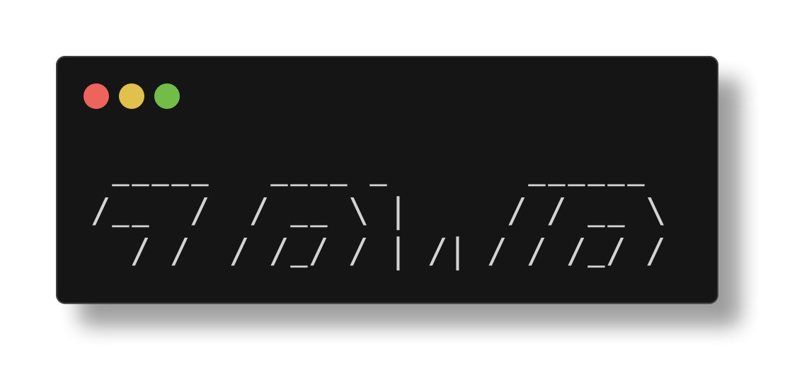
§90Media Creation
MEDIA CREATION — ART FROM THE COMMAND LINE
Who needs photoshop when you have a terminal?
The terminal is not just for text. ZPWR includes verbs for generating GIFs, rendering ASCII art, and creating visual content without ever opening a GUI application.
CREATEGIF — SCREEN TO GIF
zpwr creategif
Creates animated GIFs from your terminal sessions. Record your workflow, your demos, your flex. Perfect for README demos and pull request previews.
Your terminal is the camera. The GIF is the film. No screen recording software needed.
FIGLETFONTS — THE ASCII ART GALLERY
zpwr figletfonts
Previews all available figlet fonts on your system. figlet turns text into massive ASCII art banners. This verb shows you every font so you can pick one.
Ever wondered what your name looks like in 47 different ASCII art styles? Now you know.
Example output (one of many fonts): ________ ____ ____ ____ ____ |___ ___|| _ \ | _ \| _ \| _ \ / / | |_) | | |_) | |_) | |_) | / / | __/ | __/| _ <| _ < / / | | | | | | \ | | \ \ /_/ |_| |_| |_| \|_| \_\
ANIMATE — TERMINAL ANIMATION
zpwr animate
Runs terminal animations. Because sometimes the command line needs to look as cool as it feels. Eye candy for the operator who has everything.
THE CREATIVE TOOLKIT: creategif record terminal to GIF figletfonts preview all ASCII art fonts animate terminal animations banner the ZPWR startup banner bannerlolcat rainbow-colored banner.
// the terminal is a canvas. most people see a spreadsheet.
// hackers see a gallery. these verbs are your brushes.
§91Color Systems
COLOR SYSTEMS — PAINTING THE VOID
256 colors. true color. the terminal is not monochrome.
Color is not cosmetic. It is information density. A colored diff tells you more in one glance than a monochrome one does in ten seconds. ZPWR gives you tools to explore, test, and master terminal color.
COLORTEST — THE 16-COLOR PALETTE
zpwr colortest
Displays the basic 16-color ANSI palette. The foundation. Black, red, green, yellow, blue, magenta, cyan, white — plus their bright variants. 16 soldiers in formation.
Use this to verify your terminal theme is sane. If red looks orange, your theme needs fixing.
COLORTEST256 — THE FULL SPECTRUM
zpwr colortest256
Displays all 256 extended colors. A grid of every color code your terminal supports. From 0 to 255. Useful for picking colors for prompts and scripts.
"What number is that teal?" Run this and find out.
PYGMENTCOLORS — SYNTAX HIGHLIGHTING PALETTE
zpwr pygmentcolors
Shows available Pygments color schemes. Pygments is the syntax highlighting engine used by many ZPWR tools. Pick a scheme that matches your aesthetic.
PRETTYPRINT & ALTPRETTYPRINT — FORMATTED OUTPUT
zpwr prettyprint <file> zpwr altprettyprint <file>
Syntax-highlighted file display. Prettyprint uses one engine, altprettyprint uses another. Both turn raw source code into technicolor glory in your terminal.
Like cat, but for people who respect their eyes.
COLOR EXPLORATION WORKFLOW: 1. zpwr colortest check basic 16 colors 2. zpwr colortest256 explore full 256 palette 3. zpwr pygmentcolors pick a syntax theme 4. zpwr prettyprint view files in color.
// monochrome terminals are a war crime
// color is data. learn to read it.
// 256 colors and you are still using white-on-black?
§92Script Management
SCRIPT MANAGEMENT — THE FORGE
Create scripts. Count scripts. Print scripts to PDF. Ship scripts.
ZPWR manages its own script collection and gives you tools to create new ones, inventory them, and even export them to PDF for documentation or review.
SCRIPTNEW — THE SCRIPT GENERATOR
zpwr scriptnew <name>
Creates a new script with proper boilerplate. Shebang, error handling, argument parsing — all pre-wired. Stop writing boilerplate. Start writing logic.
The script lands in $ZPWR_SCRIPTS, already executable, already on your PATH. Zero friction from idea to tool.
SCRIPTTOPDF — THE DOCUMENTER
zpwr scripttopdf
Converts scripts to syntax-highlighted PDFs. For code reviews, documentation, or printing out and framing on your wall like the art it is.
Send your code to a printer. Assert dominance.
SCRIPTCOUNT — THE CENSUS
zpwr scriptcount
How many scripts live in $ZPWR_SCRIPTS? This tells you. Track the growth of your personal armory over time.
SCRIPTLIST — THE INVENTORY
zpwr scriptlist
Lists every script in the collection. Names, paths, the full manifest of your executable arsenal.
THE SCRIPT LIFECYCLE: 1. zpwr scriptnew myutil create the script 2. zpwr vimscriptedit edit scripts with vim/fzf 3. zpwr scriptcount check your inventory 4. zpwr scriptlist browse the collection 5. zpwr scripttopdf export for documentation.
ALSO RELATED:
zpwr makedir <name> create a directory zpwr makefile <name> create a file
Simple creation verbs. No boilerplate, just mkdir/touch with ZPWR's logging and validation baked in.
// a script unwritten is a problem unsolved
// a script uncounted is a tool forgotten
// the stryke never closes. the armory always grows.
CH 23EXERCISM & EXTERNAL
§93Exercism Integration
EXERCISM INTEGRATION — LEVEL UP YOUR CODE
Practice makes perfect. ZPWR makes practice frictionless.
Exercism.org is a free coding practice platform with mentor-reviewed exercises in 50+ languages. ZPWR wraps the exercism CLI so you never leave your terminal.
EXERCISM — THE LAUNCHER
zpwr exercism
The base exercism command integration. Manages your exercism workspace, configuration, and submission workflow from within ZPWR.
Your exercism workspace lives under $ZPWR and is accessible via zpwr homeexercism for quick navigation.
EXERCISMDOWNLOAD — FETCH EXERCISES
zpwr exercismdownload
Downloads an exercise to your local workspace. The exercise appears, ready to solve. Tests included. No browser clicking. No manual downloads.
The workflow: 1. Browse exercises on exercism.org 2. zpwr exercismdownload to fetch it 3. Solve the exercise in your editor 4. Run the tests locally 5. Submit when you pass.
EXERCISMEDIT — SOLVE IN YOUR EDITOR
zpwr exercismedit
Opens exercism exercises directly in your configured editor. Download, edit, test, submit — all from the terminal. The browser is optional.
WHY EXERCISM + ZPWR:
The exercism CLI is good. ZPWR makes it seamless. No context switching. No browser tabs. No friction.
Languages supported by exercism: Python, Go, Rust, Elixir, JavaScript, TypeScript, C, C++, Java, Ruby, Haskell, Clojure, Kotlin, Swift, Bash, and 35+ more.
// coding practice should be as easy as
// opening a terminal and typing three words
// zpwr exercismdownload. done. now solve.
§94Travis CI & External Services
TRAVIS CI & EXTERNAL SERVICES
CI/CD from your terminal, not your browser.
ZPWR integrates with external services so you can monitor builds, check statuses, and manage CI/CD pipelines without opening a single browser tab.
TRAVIS — THE CI DASHBOARD
zpwr travis
Travis CI integration. View build status, logs, and pipeline information from your terminal.
TRAVISBUILD — BUILD STATUS
zpwr travisbuild
Check the current build status. Green, red, or pending. No need to refresh a web page in a loop.
TRAVISBRANCH — BRANCH BUILDS
zpwr travisbranch
View build status for a specific branch. When you push to a feature branch and want to know if CI passed.
TRAVISPR — PULL REQUEST BUILDS
zpwr travispr
Check build status for pull requests. The merge button is only as good as the CI behind it.
OTHER EXTERNAL INTEGRATIONS:
zpwr goclean clean Go build cache zpwr google <query> search Google from terminal zpwr digs <domain> DNS lookups zpwr torip check your Tor IP address zpwr toriprenew renew your Tor circuit zpwr curl enhanced curl operations
THE EXTERNAL SERVICES PHILOSOPHY: The browser is a context switch. Every tab you open is a distraction vector. ZPWR brings the services to you, in the terminal, where you already are.
// the terminal is the cockpit
// external services are instruments on the dashboard
// you read them. you do not visit them.
CH 24TIPS, TRICKS & EASTER EGGS
§95The One-Letter Verbs
THE ONE-LETTER VERBS — MAXIMUM POWER, MINIMUM KEYSTROKES
Six letters that do the work of six paragraphs.
ZPWR has $#ZPWR_VERBS verbs. Six of them are single characters. These are not abbreviations — they are the distilled essence of the most common operations. One keystroke each. The speed limit of human-shell interaction.
a — AUTOLOAD
zpwr a
Quick access to the autoload system. When you need to check on autoloaded functions fast.
c — CAT
zpwr c
The cat operation. View file contents. The most basic read operation, compressed to one letter.
e — EDIT
zpwr e
Open your editor. The gateway to modification. Uses your configured $EDITOR.
f — FILESEARCH
zpwr f
File search. Find things. The single most common operation after listing and editing.
r — REPLAY
zpwr r
Replay operations. Redo what you did before. History is not just for reading.
z — ZCD
zpwr z
Z-jump. Frecency-based directory navigation. Type a partial path, z figures out the rest. The single most addictive feature in ZPWR.
THE ONE-LETTER ARSENAL: a autoload system c cat / view files e edit files f file search r replay z z-jump directory navigation.
// every extra character is latency between thought and action
// one letter is the event horizon of efficiency
// below this, there is only telepathy
§96Alias Chains
ALIAS CHAINS — COMPOUND OPERATIONS
One verb triggers another. The cascade begins.
ZPWR verbs do not exist in isolation. They chain. They compose. They call each other. This is not an accident — it is the architecture.
THE SHORTHAND ALIASES:
ZPWR is aliased to shorter forms for speed:
zpwr the full command zp shorter zpz alternate short form
All three are equivalent:
zpwr help == zp help == zpz help
COMPOUND VERB PATTERNS:
Many verbs are compounds that do two things:
Filesearch + edit = zpwr filesearchedit findsearch + edit = zpwr findsearchedit locatesearch + edit = zpwr locatesearchedit wordsearch + edit = zpwr wordsearchedit vimrecent + cd = zpwr vimrecentcd vimrecent + sudo = zpwr vimrecentsudo.
The pattern: action + modifier = compound verb Search, then edit. Browse, then cd. Open, then sudo.
THE CLEAN CHAIN:
zpwr cleanall clean everything zpwr cleancache clean caches only zpwr cleancompcache clean completion cache zpwr cleangitcache clean git repo cache zpwr cleangitcleancache clean git clean cache zpwr cleangitdirtycache clean git dirty cache zpwr cleantemp clean temp files zpwr cleanrefreshupdate clean + refresh + update
THE GIT CHAIN:
zpwr gitforalldir run git cmd in all dirs zpwr gitfordirmain run git cmd in dirs on main zpwr gitzfordir z-style git for all dirs
// verbs are words. chains are sentences.
// the grammar of ZPWR is combinatorial.
// learn the words, and the sentences write themselves.
§97The Token System
THE TOKEN SYSTEM — YOUR PRIVATE OVERRIDE LAYER
Secrets, aliases, and local config that never touch git.
ZPWR has sensible defaults. But you are not sensible. You have API keys, custom aliases, machine-specific paths, and opinions. The token system is where all of that lives — safely outside version control.
THE TOKEN FILES:
$ZPWR_LOCAL/.tokens.sh Your main tokens file. Aliases, exports, secrets. This is sourced during shell init. Gitignored.
$ZPWR_LOCAL/.tokens-pre.sh Sourced BEFORE ZPWR's main configuration. Override defaults before they are set. Set ZPWR_* variables here to change behavior.
$ZPWR_LOCAL/.tokens-post.sh Sourced AFTER ZPWR's main configuration. Override anything ZPWR set. Final word. Your aliases here trump everything.
THE OVERRIDE PATTERN:
Want to change a ZPWR default? Do not edit ZPWR source. Put it in tokens-pre.sh (before) or tokens-post.sh (after).
Example: override in tokens-pre.sh.
export ZPWR_EXA_COMMAND=eza export ZPWR_KEYTIMEOUT=1 export ZPWR_BANNER_CLEARLIST=false
Example: add custom aliases in tokens-post.sh.
alias k=kubectl alias tf=terraform export GITHUB_TOKEN=ghp_xxxxx
MANAGING TOKENS:
zpwr tokens view your tokens files zpwr vimtokens edit tokens in vim zpwr emacstokens edit tokens in emacs
THE LOAD ORDER: 1. Tokens-pre.sh (your early overrides) 2. ZPWR core config (the framework defaults) 3. Tokens-post.sh (your final overrides) 4. .tokens.sh (your secrets and aliases)
NEVER commit token files. They are gitignored for a reason. API keys in git history haunt you forever.
// the token system is your private dimension
// ZPWR updates without touching your config
// your overrides survive every git pull
§98FZF Everywhere
FZF EVERYWHERE — THE FUZZY FINDER CONSPIRACY
fzf is not a tool. It is a religion. ZPWR is its cathedral.
fzf (fuzzy finder) is woven into the fabric of ZPWR. Dozens of verbs pipe their output through fzf for interactive selection. If a verb ends in 'fzf', it is the fuzzy-interactive variant. But many others use it too.
DEDICATED FZF VERBS:
zpwr verbs browse subcommands in fzf zpwr verbs browse all verbs in fzf
VERBS THAT USE FZF INTERNALLY:
Forgit* verbs: forgitadd, forgitdiff, forgitlog, forgitstash, forgitreset, forgitrestore, forgitclean All use fzf for interactive selection with previews.
Search + edit verbs: filesearchedit, findsearchedit, locatesearchedit, wordsearchedit — search with fzf, open selection.
Recent file verbs: vimrecent, vimrecentcd, emacsrecent, emacsrecentcd Browse recent files with fzf preview.
Editor verbs: vimalledit, emacsalledit — select files to edit.
Git tag verbs: vimgtagsedit, emacsgtagsedit — browse tags in fzf.
THE FZF PATTERN:
The pattern is always the same: 1. Generate a list of candidates 2. Pipe through fzf with a preview command 3. Take the selection and act on it.
This pattern turns every list into a menu. Every menu into a decision. Every decision into action.
FZF CUSTOMIZATION:
Set FZF_DEFAULT_OPTS in your tokens file:
export FZF_DEFAULT_OPTS='--height 80% --reverse --border'
// if you can list it, you can fzf it
// if you can fzf it, you can act on it
// fzf is the universal adapter between data and decisions
CH 25THE COMPLETE REFERENCE
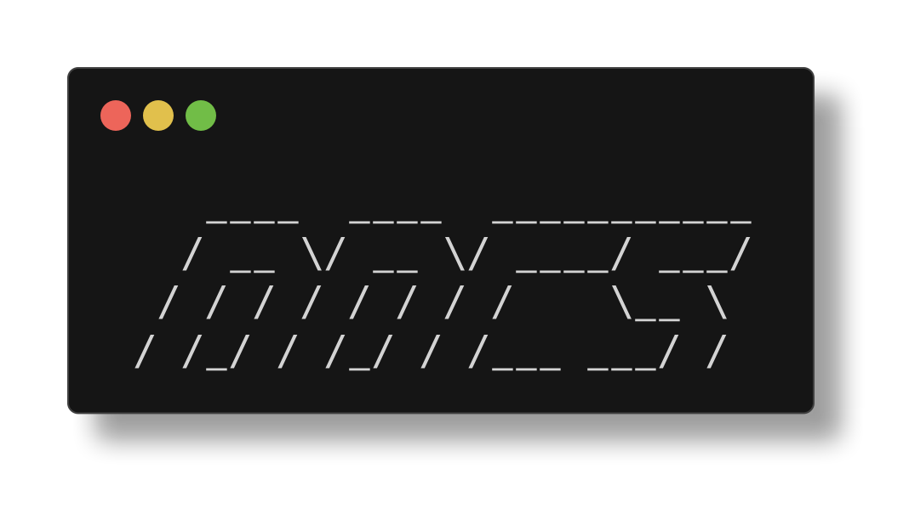
§99All Verbs A-G
ALL $#ZPWR_VERBS VERBS: A through G (1/3)
The complete arsenal. Memorize at your own peril.
A quick autoload access about display ZPWR about info alacritty alacritty terminal config aliasrank rank aliases by usage frequency all show all ZPWR info allsearch search across all sources altprettyprint alternate syntax-highlighted print animate terminal animations attach attach to tmux session autoload show autoload system autoloadcount count autoloaded functions autoloadlist list all autoloaded functions background run command in background backup backup ZPWR configuration backuphistory backup shell history banner display ZPWR banner bannercounts banner with counts bannerlolcat rainbow banner via lolcat bannernopony banner without ponysay bannerpony banner with ponysay bench benchmark shell startup brc source bashrc c cat / view file cat enhanced cat catcd cat file and cd to its dir catnviminforecentf cat nvim info recent files catrecentfviminfo cat recent files from viminfo catviminfo cat viminfo file cd enhanced cd cdup cd up one directory cfasd cd via fasd frecency changename rename files interactively changenamezpwr rename ZPWR components cleanall clean everything cleancache clean caches cleancompcache clean completion cache color2 turn on stderr color filter environmentvariables list zpwr env vars (alias: envvars) environmentvariablesall list all env vars (alias: envvarsall) environmentvars list zpwr env vars (alias: envvars) environmentvarsall list all env vars (alias: envvarsall)
... continued. Run zpwr verbs for the complete list.
§100All Verbs H-S
ALL $#ZPWR_VERBS VERBS: forgitdiff through recompilefpath (2/3)
The middle of the alphabet is where the real work lives.
Forgitdiff interactive diff via fzf forgitignore browse gitignore templates forgitignoreclean clean gitignore cache forgitignoreget fetch gitignore template forgitignorelist list gitignore templates forgitignoreupdate update gitignore cache forgitinfo repo info dashboard forgitlog interactive git log via fzf forgitreset interactive unstage via fzf forgitrestore interactive restore via fzf forgitstash interactive stash via fzf forgitwarn warn about repo hazards forked manage forked repos forward port forwarding fp fpath info funcrank rank functions by usage fwd forward shortcut gh GitHub CLI integration ghcontribcount GitHub contribution count ghz GitHub + z integration gitaemail set git author email gitcemail set git committer email gitclearcache clear git cache gitclearcommit clear a git commit gitclearfile clear file from git gitcommit enhanced git commit gitcommitcount count commits gitcommits browse commits gitconfig show git config gitcontribcount count contributions gitcontribcountdirs count contribs per dir gitcontribcountlines count contributed lines gitdir show git directory gitedittag edit a git tag gitemail show git email gitforalldir git cmd in all dirs hometests cd to test directory (alias: hometest) loadjenv lazy load jenv logincount count logins by user regenpdf regenerate encyclopedia PDF subcommandsedit edit subcommand selection subcommandslist list all subcommands.
... continued. Run zpwr verbs for the complete list.
§101All Verbs T-Z
ALL $#ZPWR_VERBS VERBS: refreshzwc through zstyle (3/3)
The final stretch. The end of the alphabet. The beginning of mastery.
Refreshzwc refresh compiled wordcode regen regenerate single component regenall regenerate everything regenconfiglinks regenerate config symlinks regenctags regenerate ctags regenenvcache regenerate env cache regengitdirtyrepocache regen dirty repo cache regengitrepocache regen git repo cache regengtags regenerate gtags regengtagspygments regen gtags + pygments regengtagstype regen gtags by type regenhistory regenerate history regenkeybindings regen keybindings regenpowerline regenerate powerline regenzsh regenerate zsh config reload reload shell config relpath get relative path rename rename files replacer find and replace replay replay commands repo repository info reset reset shell state restart restart shell restore restore configuration restorehistory restore history backup return2 return to previous dir reveal open repo in browser revealrecurse reveal recursively reverse reverse input rmconfiglinks remove config symlinks rvs reverse shortcut scriptcount count scripts scriptlist list all scripts scriptnew create new script scripts browse scripts scripttopdf convert script to PDF testsall run all env tests (alias: testall) upload upload file with curl verbsedit edit verb selection zpwrCloneToForked clone zpwr to forked dir zpwrgithub open zpwr GitHub page.
Run zpwr verbs for the complete live list.
CH 26POWERLEVEL10K & INSTANT PROMPT
§102Instant Prompt: Zero Latency
INSTANT PROMPT: ZERO LATENCY
// your prompt loads before .zshrc finishes. time is a flat circle. //
The single best UX trick in zpwr: the prompt appears INSTANTLY while .zshrc is still loading behind the curtain. Zero perceived latency. The illusion of speed IS speed.
HOW IT WORKS
On previous shell exit, p10k cached the prompt to a file:
XDG_CACHE_HOME:-HOME/.cache/p10k-instant-prompt-(%):-%n.zsh
This file contains the last rendered prompt as raw ANSI escape sequences. On next shell start, it is sourced BEFORE .zshrc loads. Result: the prompt appears in <10ms. The user can start typing. .zshrc continues loading in the background. Nobody notices.
THE LOADING SEQUENCE IN .zshrc
1. zmodload zsh/datetime (timestamp) 2. Source zpwr-hash-dirs.zsh (cached hash -d entries) 3. Source p10k-instant-prompt-*.zsh (the magic file) 4. promptTimestamp=$EPOCHREALTIME (measure prompt time) 5. ...rest of .zshrc loads (plugins, aliases, etc)... 6. p10k finalize (at very end of .zshrc) Step 3 must come before ANY console output. If something prints to stdout before the instant prompt, p10k aborts it.
THE HASH DIR CACHE
The prompt uses % to show named dirs like ZPWR instead of /Users/you/.zpwr. But hash -d entries are set in zpwrBindDirs, which runs AFTER instant prompt. Chicken-and-egg problem. Solution: zpwrBindDirs writes a cache file:
ZPWR_LOCAL/zpwr-hash-dirs.zsh
This cache is sourced at line 73 of .zshrc, BEFORE instant prompt, so % resolves ZPWR in the cached prompt correctly.
ZPWR_BANNER_CLEARLIST SUPPRESSION
ZpwrClearList prints a banner + file listing on login. But if it runs before instant prompt finalizes, it corrupts the display. Fix: the banner is deferred until AFTER p10k finalize:
if [[ -n "__p9k_instant_prompt_active" && "ZPWR_BANNER_CLEARLIST" == true ]]; then zpwrClearList || true fi
THE promptTimestamp MEASUREMENT
ZPWR_VARS[promptTimeMs] records how fast the prompt appeared. Run zpwr environmentcounts to see it. With instant prompt, this is typically 0.010-0.050 seconds. Without it, 0.5-2.0s.
p10k finalize
The last line of .zshrc:
(( ! +functions[p10k] )) || p10k finalize
This tells p10k that .zshrc is done. The real prompt replaces the cached one. Any deferred output can now safely print.
§103Powerlevel10k Configuration
POWERLEVEL10K CONFIGURATION
// the prompt is your cockpit HUD. configure it or fly blind. //
The p10k config lives at $ZPWR_ENV/.p10k.zsh – a 1700+ line file that controls every pixel of your prompt. The wizard generated it, but you own it now.
LEFT PROMPT SEGMENTS
These appear on the left side, top to bottom across 4 lines:
Line 1: custom_env, custom_env_bat, custom_env_editor Line 2: custom_env_term, ip Line 3: context, dir, history, ssh, root_indicator, status, vcs Line 4: custom_tty, prompt_char
The dir segment shows your current directory using % expansion. The vcs segment shows git branch, dirty status, ahead/behind. The prompt_char shows green on success, red on failure.
RIGHT PROMPT SEGMENTS
The right side is information-dense. Across 3 lines:
Line 1: dir_writable, background_jobs, virtualenv, node_version,
go_version, rust_version, java_version, package, os_icon...
Line 2: load, disk_usage, ram, swap, wifi Line 3: battery, time, command_execution_time, vi_mode, custom_pid
THE DIR SEGMENT AND % EXPANSION
Zsh's % prompt expansion replaces known paths with named dirs. If you hash -d ZPWR=/Users/you/.zpwr, then /Users/you/.zpwr shows as ZPWR in your prompt. Shorter. Cleaner. Professional. POWERLEVEL9K_DIR_MAX_LENGTH=80 caps the dir segment width. POWERLEVEL9K_DIR_MIN_COMMAND_COLUMNS=40 reserves typing space.
HOW zpwrBindDirs POPULATES NAMED DIRECTORIES
The function runs hash -d for 20 directories:
hash -d ZPWR="ZPWR" hash -d ZPWR_TMUX="ZPWR_TMUX" hash -d ZPWR_SCRIPTS="ZPWR_SCRIPTS" hash -d TMUXH="TMUX_HOME"
Then it writes them all to $ZPWR_LOCAL/zpwr-hash-dirs.zsh for instant prompt to use on next startup. The cache iterates $(kv)nameddirs to capture every registered named directory.
THE MULTILINE FRAME
The prompt uses box-drawing characters for the frame:
First line: %244F----- (top connector) Middle: %244F----- (mid connector) Last line: %244F----- (bottom connector)
Gap fill character is '—' in grey (color 244). Mode: nerdfont-complete. Separators use Powerline glyphs.
prompt_char SYMBOLS
Insert mode: — Command mode: — Visual: V Overwrite: —
§104P10k Prompt Customization
P10K PROMPT CUSTOMIZATION
// your prompt is a canvas. paint it with ANSI and Unicode. //
ZPWR ships custom p10k segments beyond the defaults. These are defined with POWERLEVEL9K_CUSTOM_* variables in $ZPWR_ENV/.p10k.zsh.
CUSTOM SEGMENTS
Custom_tty Shows $ZPWR_TTY (e.g. ) Defined as:
POWERLEVEL9K_CUSTOM_TTY='echo "%Kblue%Fwhite ZPWR_TTY %f%k%Fblue%f"'
Custom_env Environment info (custom shell, OS, etc.) custom_env_bat Shows bat (syntax highlighter) version/status custom_env_editor Shows $EDITOR custom_env_term Shows $TERM_PROGRAM custom_pid Shows shell PID (right prompt, bottom line)
ADDING YOUR OWN SEGMENT
1. Define the command that generates output:
typeset -g POWERLEVEL9K_CUSTOM_MYWIDGET='echo "hello"'
2. Set colors:
typeset -g POWERLEVEL9K_CUSTOM_MYWIDGET_FOREGROUND=255 typeset -g POWERLEVEL9K_CUSTOM_MYWIDGET_BACKGROUND=24
3. Add 'custom_mywidget' to LEFT or RIGHT PROMPT_ELEMENTS array. 4. Run p10k reload or source $ZPWR_ENV/.p10k.zsh to apply.
COLORS AND ICONS
P10k uses 256-color indices. Print the color map:
for i in 0..255; do print -Pn "%Ki %k%Fi(l:3::0:)i%f "; done
Foreground/background for each segment and state:
POWERLEVEL9K_DIR_BACKGROUND=4 (blue) POWERLEVEL9K_DIR_FOREGROUND=254 (near-white)
Anchor dirs (like .git roots) get bold + brighter color (255).
TRUNCATION
POWERLEVEL9K_DIR_MAX_LENGTH=80 caps directory width. POWERLEVEL9K_DIR_MIN_COMMAND_COLUMNS_PCT=50 means at least half the terminal width is reserved for your command input. SHORTEN_STRATEGY can be set to truncate_to_unique for smart shortening (commented out by default in zpwr).
THE .p10k.zsh FILE STRUCTURE
The file is a single anonymous function () ... that: - Unsets all POWERLEVEL9K_* vars (clean slate) - Defines LEFT/RIGHT_PROMPT_ELEMENTS arrays - Sets mode, icons, colors, truncation per segment - Configures transient prompt, instant prompt, hot reload
SEEING PROMPT TIMING
zpwr environmentcounts
Shows promptTimeMs, startupTimeMs, and per-phase timestamps. This is how you prove your prompt loaded in 0.015 seconds.
§105Transient Prompt & Visual Tweaks
TRANSIENT PROMPT & VISUAL TWEAKS
// old prompts fade into ghosts. only the present matters. //
Transient prompt collapses previous prompts to a minimal form, keeping your scrollback clean and focused. In zpwr it is currently set to 'off' but easy to enable.
TRANSIENT PROMPT
When enabled, after you press Enter, the full multi-line prompt collapses to just the prompt_char symbol (— or —). All segments, git status, directory – gone from old lines. Only the current prompt shows full detail.
typeset -g POWERLEVEL9K_TRANSIENT_PROMPT=off
Change to always or same-dir to enable. 'same-dir' only collapses when you stay in the same directory.
HOT RELOAD
Edit .p10k.zsh and apply changes without restarting zsh:
p10k reload
This re-sources .p10k.zsh and rebuilds the prompt in-place. No exec zsh needed. No losing your command history buffer.
p10k configure
The interactive configuration wizard. Walks you through: - Font detection (powerline glyphs, nerdfont icons) - Style selection (rainbow, lean, classic, pure) - Separator shapes, line count, frame options - Instant prompt mode (verbose, quiet, off) It generates a fresh .p10k.zsh. ZPWR ships a pre-configured one in $ZPWR_ENV/.p10k.zsh (rainbow style, nerdfont-complete). Running the wizard overwrites it, so back up yours first.
INSTANT PROMPT vs zpwrClearList
The banner (zpwrClearList) prints colorized file listings on login. Instant prompt redirects all stdout/stderr during init to a buffer. If zpwrClearList runs during this window, the output gets swallowed or garbled. ZPWR's fix: 1. Check if __p9k_instant_prompt_active is set 2. If so, defer zpwrClearList to AFTER p10k finalize 3. The banner appears cleanly after the prompt settles.
THE eza –classify=always FIX
Under instant prompt, fd/stdout gets redirected. eza's –classify flag (append */ to dirs) auto-detects terminal capabilities. When stdout is redirected, it thinks there's no terminal and drops the indicators. Fix: use –classify=always to force classification regardless of fd state. ZPWR_EXA_COMMAND uses this:
command eza --git -il --classify=always -H --color-scale -g -a
$TTY IMMUNE TO FD REDIRECTS
Zsh sets $TTY before rc files load. Instant prompt redirects fds 0/1/2, but $TTY still points to the real terminal. ZPWR captures it: export ZPWR_TTY=$TTY This is used by the custom_tty prompt segment.
CH 27ZINIT & PLUGIN SYSTEM
§106Zinit: The Plugin Engine
ZINIT: THE PLUGIN ENGINE
// the package manager for your shell. apt-get for zsh plugins. //
Zinit (formerly zplugin) is a flexible zsh plugin manager with turbo mode, ice modifiers, and completion management. ZPWR uses it as the default: ZPWR_PLUGIN_MANAGER=zinit.
WHAT ZINIT DOES
- Downloads GitHub plugins to $ZPWR_PLUGIN_MANAGER_HOME - Sources them into your shell (or loads as completions) - Manages load order with turbo mode (deferred loading) - Handles OMZ snippets (individual files from oh-my-zsh) - Compiles plugins to .zwc bytecode for speed
ZINIT LOAD vs ZINIT SNIPPET
zinit load user/repo Clone full GitHub repo, source .plugin.zsh zinit snippet OMZP::git Download single file from OMZ plugin zinit snippet OMZL::git.zsh Download single OMZ lib file load = full repo clone. Snippet = single file download. ZPWR uses both: load for GitHub plugins, snippet for OMZ.
THE PLUGIN ARRAYS
ZPWR organizes plugins into arrays in .zshrc: ZPWR_GH_PLUGINS 28+ GitHub repos (fzf-tab, zsh-z, forgit...) ZPWR_OMZ_PLUGINS 25+ OMZ snippets (git, python, golang...) ZPWR_OMZ_LIBS 4 OMZ lib files (git.zsh, directories.zsh...) ZPWR_OMZ_COMPS 12 OMZ completion files (ng, coffee, scala...) Conditional plugins are appended if the command exists:
zpwrCommandExists docker && ZPWR_GH_PLUGINS+=( zsh-docker-aliases )
PLUGIN STORAGE
Everything lives under $ZPWR_PLUGIN_MANAGER_HOME:
ZPWR_PLUGIN_MANAGER_HOME/bin/ zinit itself ZPWR_PLUGIN_MANAGER_HOME/plugins/ cloned repos ZPWR_PLUGIN_MANAGER_HOME/snippets/ OMZ snippets ZPWR_PLUGIN_MANAGER_HOME/completions/ symlinked completions
THE 48+ PLUGIN ROSTER
Total plugins managed by zpwr (from .zshplugins): MenkeTechnologies forks: fzf-tab, forgit, zsh-expand, zsh-autocomplete, zsh-z, fasd-simple, revolver, zunit... zdharma-continuum: fast-syntax-highlighting, zbrowse, zui... zsh-users: completions, autosuggestions, history-substring Plus: hlissner/zsh-autopair, bigH/git-fuzzy, and more.
FIRST RUN BOOTSTRAP
If $ZPWR_PLUGIN_MANAGER_HOME/bin doesn't exist, .zshrc auto-clones zinit from GitHub. After that, OPTIMIZE_OUT_DISK_ACCESSES=1 skips unnecessary stat() calls on subsequent starts.
§107Turbo Mode: Deferred Loading
TURBO MODE: DEFERRED LOADING
// why load 48 plugins at startup when you can load 1? //
Turbo mode is zinit's killer feature: plugins load AFTER the prompt appears, using zsh's sched mechanism. Your shell is interactive instantly; plugins trickle in behind the scenes.
THE wait ICE MODIFIER
The 'wait' ice defers loading until after the first prompt:
zinit ice wait Load after prompt (default priority) zinit ice wait'0' Same as wait (priority 0) zinit ice wait'0a' Priority 0, sub-order a (loads first) zinit ice wait'0b' Priority 0, sub-order b (loads second) zinit ice wait'0e' Priority 0, sub-order e (loads later)
The letter suffix controls load order WITHIN the same priority. A loads before b loads before c, etc. This is how ZPWR orchestrates 48 plugins into a precise loading sequence.
THE GRADUATED LOADING SEQUENCE
Synchronous: powerlevel10k (must load before prompt) wait: OMZ completions, libs, plugins, GH plugins wait'0': zsh-autopair (needs ZLE ready) wait'0a': zsh-expand + late aliases + alias cache wait'0b': zsh-autocomplete (if ZPWR_AUTO_COMPLETE=true) wait'0c': zsh-history-substring-search wait'0d': zsh-autosuggestions + FZF late bindings + verbs wait'0e': zsh-zinit-final (penultimate, final keybindings) wait'0f': zsh-more-completions (low priority, last resort) wait'$ZPWR_ZINIT_COMPINIT_DELAYg': compinit + cdreplay wait'$ZPWR_ZINIT_COMPINIT_DELAYh': fast-syntax-highlighting.
WHY STARTUP IS FAST
Only ONE plugin loads synchronously: powerlevel10k. Everything else is turbo-deferred. Combined with instant prompt, you see the prompt in 15ms. The other 47 plugins load in the next 200ms while you're still thinking.
atinit AND atload HOOKS
These run code at precise moments during plugin loading: atinit Runs BEFORE the plugin is sourced atload Runs AFTER the plugin is sourced ZPWR uses these extensively to bind keymaps and aliases:
zinit ice wait'0a' atload'zpwrBindAliasesLate; zpwrCreateAliasCache'
The atload fires after zsh-expand is sourced, then late aliases override any OMZ defaults. Precise surgical timing.
ZPWR_ZINIT_COMPINIT_DELAY
Default: 0. Controls how long to wait before running compinit. Higher values defer completion system init even further. Set in $ZPWR_ENV/.zpwr_env.sh. The 'g' and 'h' suffixes on the wait ice ensure compinit and syntax highlighting load last.
§108Ice Modifiers Deep Dive
ICE MODIFIERS DEEP DIVE
// ice modifiers are the spice of zinit. season generously. //
Every zinit load/snippet can be preceded by 'zinit ice' with modifiers that control HOW the plugin loads. Ice melts after one use – it applies only to the next command.
CORE ICE MODIFIERS USED BY ZPWR
Lucid Suppress the 'Loaded plugin' message ZPWR uses this on every plugin. No spam. Nocompile Skip .zwc compilation of the plugin Useful when zpwrRecompileFiles handles it globally. Nocd Don't cd to plugin dir before sourcing Prevents p10k internals from polluting named dirs. Nocompletions Don't install completions from this plugin Used for zsh-more-completions (fpath-only approach). As'completion' Load the file as a completion, not a plugin Used for OMZ completion snippets like _ng, _coffee. As'program' Add the pick'd file to $PATH as executable Used for fzf binary and git-fuzzy. As'null' Don't source anything – just run hooks Used for the compinit phase (atinit only). Pick'null' Don't source any file from the plugin dir Used with as'completion' for OMZ comp snippets. Pick'bin/fzf' Source or add this specific file With as'program', adds bin/fzf to PATH.
HOOK ICE MODIFIERS
Atinit Code to run BEFORE the plugin sources atload Code to run AFTER the plugin sources Example from ZPWR:
zinit ice lucid nocompile wait atinit='zpwrBindOverrideOMZ;zpwrBindForGit' zinit load MenkeTechnologies/forgit
Before forgit loads, zpwrBindOverrideOMZ runs to clear OMZ aliases that would conflict with forgit's git shortcuts.
HOW ZPWR USES ICE BY CATEGORY
OMZ completions: lucid nocompile as'completion' pick'null' wait OMZ libs: lucid nocompile wait atload='zpwrOmzOverrides' OMZ plugins: lucid nocompile wait GH plugins: lucid nocompile wait Programs: as'program' lucid nocompile pick'bin/fzf' wait Syntax highlight:lucid nocompile wait"$ZPWR_ZINIT_COMPINIT_DELAYh"
ICE STACKING
Multiple ices combine. Order doesn't matter (mostly). The = syntax for atload/atinit works with single quotes:
atload='zpwrBindAliasesLate; zpwrCreateAliasCache'
Or with quoted strings:
atinit'zpwrBindZdharma' atload'zpwrBindZdharmaPost'
§109Zinit Completions & Compinit
ZINIT COMPLETIONS & COMPINIT
// compinit is the most expensive call in zsh startup. defer it. //
The completion system (compsys) needs compinit to initialize. But compinit scans all fpath entries and parses completion files. On a system with many registered completions, this is slow. ZPWR defers it behind turbo mode.
ZINIT COMPINIT OPTIONS
ZINIT[COMPINIT_OPTS]='-C -u'
-C skips security checks (don't re-verify file ownership). -u suppresses warnings about insecure directories. These flags make compinit fast but trust your fpath.
ZINIT[ZCOMPDUMP_PATH]="ZSH_COMPDUMP"
Points compinit to zpwr's zcompdump location.
THE DEFERRED COMPINIT
Compinit runs in the LAST turbo phase:
zinit ice lucid nocompile nocd as'null' wait"ZPWR_ZINIT_COMPINIT_DELAYg" atinit'zicompinit; zicdreplay; zpwrBindOverrideOMZCompdefs'
Zicompinit: runs compinit with the configured opts. Zicdreplay: replays all compdef calls that were recorded while compinit wasn't loaded yet. Plugins that called compdef during turbo load had their calls queued – now they fire.
THE OMZ COMPLETION SYMLINK HACK
OMZ completion snippets land in:
ZSH/snippets/OMZP::coffee/_coffee
But compinit needs them in the completions dir. ZPWR symlinks them using zsh/files builtin:
zmodload -F zsh/files b:zf_ln zf_ln -sfn ZSH/snippets/OMZP::p%/*/... ZSH/completions/...
Zf_ln is a builtin ln(1), no fork needed. Fast.
zpwrStaleZcompdump
The zcompdump cache gets stale when plugins update. zpwrStaleZcompdump checks the cache age. If it is older than 1 week, it triggers a full compinit rebuild. This runs automatically every shell startup (cheap check).
FORCE REBUILD
zpwr regenzsh
Nukes the zcompdump, re-runs compinit from scratch, and recompiles everything. Use when completions go missing or after adding new completion files to fpath.
ZPWR_ZINIT_COMPINIT_DELAY
Default: 0. Set in $ZPWR_ENV/.zpwr_env.sh. Controls the numeric prefix of the wait ice for compinit. 0 = load immediately after prompt. Higher = more delay. On fast machines, 0 is fine. On slow machines, 1 or 2 lets other plugins finish first.
§110Plugin Troubleshooting
PLUGIN TROUBLESHOOTING
// when plugins misbehave, you need diagnostic tools. //
Zinit ships with built-in debugging commands. When something breaks, these are your first responders.
DIAGNOSTIC COMMANDS
zinit report <plugin> Show load status, errors, files.
zinit report zsh-users/zsh-autosuggestions
Shows: source file, ice modifiers used, compdef calls, functions defined, aliases created, PATH changes. zinit times Show plugin load times Sorted by load time. Find the slowest plugin. If something takes >50ms, investigate. zinit loaded List all loaded plugins zinit unload <plugin> Unload a plugin from current session Useful for debugging conflicts. Does not persist. zinit list List all registered plugins zinit cd <plugin> cd into plugin directory.
COMMON ISSUES
Plugin not loading? - Check if 'wait' ice is set (turbo mode defers loading) - Run zinit report to see if it errored silently - The 'lucid' ice suppresses messages – remove it to debug Completion missing after plugin install? - Run zpwr regenzsh to rebuild zcompdump - Check fpath: print -l $fpath | grep <plugin> - Ensure the plugin uses as'completion' or adds to fpath Keybinding conflicts? - Load order matters. Plugins loaded later override earlier ones. - ZPWR uses wait'0a' through wait'0e' to control this. - zpwrBindOverrideZLE fires in the 0a phase to win conflicts.
ADDING CUSTOM PLUGINS
Add to ZPWR_GH_PLUGINS in $ZPWR_LOCAL/.tokens.sh:
ZPWR_GH_PLUGINS+=( your-user/your-plugin )
The .tokens.sh file is sourced before plugin loading starts (via zpwrTokenPre), so your additions join the array in time. For conditional loading:
zpwrCommandExists myapp && ZPWR_GH_PLUGINS+=( user/zsh-myapp )
UPDATING PLUGINS
zpwr updatezinit
Runs zinit update –all to pull latest from all repos. After updating, run zpwr regenzsh to rebuild completions.
NUCLEAR OPTION
If zinit is truly broken, nuke and rebuild:
rm -rf ZPWR_PLUGIN_MANAGER_HOME
Next shell start auto-clones zinit and re-downloads everything. Slow but thorough. The cockroach approach to debugging.
CH 28ZSH INTERNALS
§111Autoloading: Lazy Function Loading
AUTOLOADING: LAZY FUNCTION LOADING
// 443 functions. zero parsing until you call one. //
Autoloading is zsh's lazy-loading mechanism. Register a name, and zsh only reads the function body from disk on first call. This is why ZPWR can have hundreds of autoloaded functions with negligible startup cost.
HOW autoload -z WORKS
1. autoload -z funcname registers 'funcname' as autoloadable. 2. Zsh records the name but does NOT read the file yet. 3. On first call to funcname, zsh searches $fpath for a file named 'funcname' (exact match, no extension). 4. The file is sourced. The function is now defined in memory. 5. The function executes with the original arguments. 6. Subsequent calls use the in-memory version. No more disk.
THE GLOB IN .zshrc
builtin autoload -z ZPWR_AUTOLOAD_COMMON/*(.:t)
The glob *(.:t) means: * All files in the directory (.) Qualifier: regular files only (not dirs or symlinks) :t Modifier: tail only (strip directory, keep filename) So it registers every regular file's name as a function. Same pattern runs for ZPWR_AUTOLOAD_DARWIN or ZPWR_AUTOLOAD_LINUX.
THE fpath
Fpath is the function search path (like PATH but for functions):
fpath=( ZPWR_AUTOLOAD_COMMON ZPWR_AUTOLOAD_COMP_UTILS ZPWR_COMPS fpath )
Order matters: first match wins. ZPWR dirs come first so they can override system completions if needed. Fpath is NOT exported (typeset +x FPATH) – child shells don't inherit it.
THE FUNCTION FILE FORMAT
Each file in the autoload dir contains one function. The file is named exactly like the function. Inside:
function zpwrSomething() # function body zpwrSomething "@"
The last line calls the function with args passed through. This is the ZPWR convention. The function wraps itself.
WHY AUTOLOADING IS FAST
443 function registrations = 443 hash table entries. Cost: microseconds. No file I/O, no parsing, no execution. Compare to sourcing 443 files: hundreds of milliseconds. Autoloading turns O(n) startup into O(1) with lazy O(1) per call.
autoload -Uz
-U suppresses alias expansion during loading (safety). -z forces zsh-style function loading (vs ksh-style). ZPWR uses -z for its functions, -Uz for system utilities like zrecompile, zmv, zargs, and compinit.
§112ZLE: The Zsh Line Editor
ZLE: THE ZSH LINE EDITOR
// the engine behind every keystroke. readline on steroids. //
ZLE (Zsh Line Editor) is the subsystem that handles your command line input. Every key press triggers a ZLE widget. ZPWR rewires dozens of these widgets for custom behavior.
WIDGETS: NAMED EDITOR ACTIONS
A widget is a named action that ZLE can execute:
.accept-line Built-in: execute the current line .backward-delete-char Built-in: backspace .self-insert Built-in: insert the typed character
The dot prefix means 'built-in widget'. User-defined widgets can override them. ZPWR defines custom widgets like:
zpwrMagicEnter Custom Enter key behavior zpwrExpandTerminateSpace Custom Space key behavior zpwrAcceptLine Custom line acceptance
bindkey: MAPPING KEYS TO WIDGETS
bindkey connects key sequences to widgets:
bindkey 'M' zpwrMagicEnter Enter key bindkey ' ' zpwrExpandTerminateSpace Space key bindkey -v Switch to vi mode bindkey -e Switch to emacs mode
ZPWR_BINDKEY_VI controls which mode: true=vi, false=emacs.
HOW zpwrMagicEnter WORKS
On empty line (just pressing Enter): - If in a git dir: runs git status -u . - If not: runs ls -lh . - Resets the prompt via _p9k_precmd_impl + zle reset-prompt On non-empty line: delegates to zle accept-line (zpwrAcceptLine).
HOW zpwrAcceptLine WORKS
The accept-line replacement does serious work: 1. Updates zconvey name with current command + TTY + PID 2. Detects commands that modify files (rm, mv, cp, mkdir...) and sets ZPWR_WILL_CLEAR=true for post-exec ls refresh 3. Handles sudo + grc colorization for aliased commands 4. Prevents global alias expansion in first position 5. Optionally expands aliases before execution 6. Calls .accept-line (the real built-in)
THE Ctrl-F CHORD PREFIX SYSTEM
ZPWR binds Ctrl-F as a prefix key for multi-key chords:
Ctrl-F Ctrl-D FZF file search Ctrl-F Ctrl-I FZF word search (ag/grep) Ctrl-F Ctrl-G FZF git operations
This gives you an entire second keymap layer without conflicting with normal editing keys. Like tmux prefix but for your command line.
§113Hook Functions: precmd, preexec, chpwd
HOOK FUNCTIONS: precmd, preexec, chpwd
// zsh calls your code at key moments. event-driven shell. //
Zsh provides hook points where you can inject code that runs automatically before prompts, before commands, and when directories change. ZPWR uses all three.
precmd: BEFORE EACH PROMPT
Runs after a command finishes, right before the prompt draws. P10k's _p9k_precmd is the main user – it updates git status, execution time, and every prompt segment. ZPWR adds zpwrPrecmd to the hook:
function zpwrPrecmd() export ZPWR_OPTS="-"
This captures the current shell options before each prompt.
preexec: BEFORE EACH COMMAND
Runs after Enter but BEFORE the command executes. Receives the command string as $1. ZPWR's zpwrPreexec is minimal (a placeholder hook). P10k uses preexec to record the start timestamp for command_execution_time segment.
chpwd: WHEN DIRECTORY CHANGES
Runs whenever $PWD changes (cd, pushd, popd, auto_cd). ZPWR's zpwrChpwd hook handles directory-change actions.
THE _functions ARRAYS
Zsh supports multiple hooks via arrays:
precmd_functions+=( myHook ) Add a precmd hook preexec_functions+=( myHook ) Add a preexec hook chpwd_functions+=( myHook ) Add a chpwd hook
Every function in the array runs at the hook point. Order matters: first in array = first to execute.
HOW ZPWR REGISTERS HOOKS
ZpwrBindPrecmd (runs during p10k atload):
precmd_functions=( zpwrPrecmd (@)precmd_functions:#zpwrPrecmd )
This puts zpwrPrecmd FIRST, removing any duplicate. The $(@)array:#pattern syntax removes matching elements. zpwrBindPreexecChpwd (runs during syntax-highlighting atload):
preexec_functions=( (@)preexec_functions:#zpwrPreexec zpwrPreexec ) chpwd_functions=( (@)chpwd_functions:#zpwrChpwd zpwrChpwd )
These put zpwr hooks LAST (after p10k and other plugins).
THE HOOK COUNT IN zpwr top
The zpwr top dashboard shows the total hook count:
nhooks=((#precmd_functions+#preexec_functions+#chpwd_functions))
Typical value: 5-8 hooks total across all three arrays. If this number grows unexpectedly, a plugin is adding hooks you may not want. Check with: print -l $precmd_functions.
§114Emulate & Options
EMULATE & OPTIONS
// zsh has 200+ options. emulate -L zsh resets them all locally. //
Zsh options control fundamental behavior: globbing, word splitting, quoting, history. ZPWR functions use emulate -L zsh to guarantee a known environment regardless of user settings.
emulate -L zsh
builtin emulate -L zsh
Resets ALL options to zsh defaults for the current function scope. -L means local: options revert when the function returns. Without this, a function might inherit noglob from the caller and break globbing, or inherit shwordsplit and break arrays. ZPWR functions start with this to be immune to the caller's state.
KEY OPTIONS IN ZPWR
extendedglob ## = one-or-more, (#i) = case-insensitive glob ^pattern = negation. Essential for ZPWR globs. glob_dots Dot files matched by * (no need for .*) globstarshort **.c = **/*.c (recursive glob shorthand) braceccl abcd0-9 expands as character class rc_quotes '' inside single quotes = literal single quote rc_expand_param Array expansion includes prefix: xx$arr = xxA xxB nocaseglob Globs are case-insensitive globally numeric_glob_sort file1 file2 file10 sort numerically prompt_subst Allow $(...) and $... in prompt strings transient_rprompt Right prompt only on current line
THE noshwordsplit DEFAULT
Bash splits unquoted variables on whitespace by default. Zsh does NOT (noshwordsplit). This means:
x="hello world"; print x -> one argument in zsh, two in bash
If a function inherits shwordsplit (e.g., from emulate sh), arrays and parameter expansions break silently. Another reason for emulate -L zsh.
THE local-IN-LOOP BUG
In zsh, 'local' inside a loop prints the variable value as a side effect when the variable already exists:
for i in 1 2 3; do local x=i; done # prints x=1 x=2 x=3
This is because 'local' on an existing local acts like typeset, which prints. Declare locals BEFORE loops, not inside them.
auto_name_dirs: REMOVED
This option auto-registers any parameter set to a directory path as a named directory. Sounds nice, but p10k/gitstatus set internal variables to paths, polluting the named dir table. ZPWR removed it. Explicit hash -d in zpwrBindDirs handles it. The comment in .zshrc: # auto_name_dirs removed: pollutes named # dirs with p10k/gitstatus internals.
§115Parameter Expansion Magic
PARAMETER EXPANSION MAGIC
// zsh parameter expansion is a programming language in itself. //
Zsh's $... syntax can do transformations that would require sed, awk, basename, dirname, tr, and cut in bash. No forks. No subshells. Pure in-process string manipulation.
PARAMETER EXPANSION FLAGS (the parenthesized letters)
$(K)assoc Keys of associative array $(v)assoc Values of associative array $(kv)assoc Key-value pairs interleaved $(s:/:)var Split string on / into array $(j:,:)array Join array elements with , $(L)var Lowercase the entire string $(U)var Uppercase the entire string $(f)var Split on newlines (lines to array) $(F)array Join with newlines (array to lines) $(t)var Type of variable (scalar, array, etc.) $(q)var Quote the value for re-use in eval $(Q)var Remove one level of quoting $(z)var Split into words like the shell parser $(o)array Sort ascending $(O)array Sort descending.
MODIFIERS (the colon letters)
$Var:t Tail: basename (/a/b/c.txt -> c.txt) $var:h Head: dirname (/a/b/c.txt -> /a/b) $var:r Root: remove extension (file.txt -> file) $var:e Extension: (file.txt -> txt) $var:A Absolute path (resolve symlinks) $var:l Lowercase (zsh 5.0+) $var:u Uppercase (zsh 5.0+)
SUBSTITUTION AND PATTERN MATCHING
$var//pat/rep Global substitution
$Var/pat/rep First match substitution $var#pat Remove shortest prefix match $var##pat Remove longest prefix match $var%pat Remove shortest suffix match $var%%pat Remove longest suffix match.
ZPWR EXAMPLES
From zpwrBindDirs (writing hash dir cache):
print -r "hash -d k=(q)v" -- (q) quotes the value safely
From zpwrAcceptLine (parsing command buffer):
mywords=( (z)cmdstr ) -- (z) shell-word splits cmd=mywords[1]#= -- strip leading = from =cmd
From zpwrBindPrecmd (removing duplicates from array):
(@)precmd_functions:#zpwrPrecmd -- remove matching element
These are not academic exercises. They replace forks.
§116The .zwc Compilation System
THE .zwc COMPILATION SYSTEM
// bytecode for your shell. because even scripts deserve a compiler. //
Zsh can compile scripts to .zwc (Zsh Word Code) bytecode. These files skip the parsing phase on load, going straight to execution. ZPWR compiles 50+ files for speed.
WHAT .zwc FILES ARE
A .zwc file is a binary representation of parsed zsh code. When zsh sources a .zsh file, it checks for a .zwc sibling. If the .zwc exists and is newer than the source, zsh loads the bytecode directly. No lexing, no parsing. Speedup: 2-5x for large files. Marginal for tiny ones.
zrecompile
The zrecompile utility compiles only if the source is newer:
autoload -Uz zrecompile zrecompile -p -U ZPWR_ENV_FILE
-p means 'check pairs' (source vs .zwc timestamps). -U suppresses alias expansion during compilation. If the .zwc is current, zrecompile is a no-op.
zpwrRecompileFiles: WHAT GETS COMPILED
The function compiles two categories of files: Local files ( 47): , , , p10k-instant-prompt-*.zsh, p10k-dump-*.zsh $ZSH_COMPDUMP, $ZPWR_ALIAS_FILE, $ZPWR_PROMPT_FILE $ZPWR_LOCAL/.tokens.sh, $ZPWR_ENV_FILE, $ZPWR_RE_ENV_FILE All .zsh/.sh in $ZPWR_ENV/, all .zsh in $ZPWR_SCRIPTS/ All plugin .zsh files under $ZPWR_PLUGIN_MANAGER_HOME/bin/ OMZ lib, plugin, theme, and custom files Global files ( 8): , , , , etc. These need sudo (compiled with sudo zsh -c zrecompile).
ZPWR VERBS FOR COMPILATION
zpwr recompile Compile all known files (zpwrRecompileFiles) zpwr decompile Remove .zwc files (zpwrUncompile) zpwr refreshzwc Remove + recompile (clean rebuild)
THE zsh/files MODULE
Zsh can load builtin file operations via zmodload:
zmodload -F zsh/files b:zf_ln b:zf_rm b:zf_mkdir
These are shell builtins that replace ln, rm, mkdir. No fork, no exec – pure kernel syscalls from the shell process. ZPWR uses zf_ln for the OMZ completion symlink hack. In a loop creating 12 symlinks, this saves 12 fork+exec pairs.
OTHER USEFUL MODULES
zsh/datetime EPOCHREALTIME, EPOCHSECONDS zsh/complist Menu-select completion mode zsh/zprof Profiler (ZPWR_PROFILING=true enables it)
Modules are loaded with: zmodload zsh/datetime.
CH 29FZF ARCHITECTURE
§117FZF: The Neural Interface
FZF: THE NEURAL INTERFACE
// the universal adapter between data and decisions. //
fzf (fuzzy finder) is a general-purpose command-line filter. Pipe anything into it, fuzzy-search interactively, get results. ZPWR wraps fzf into dozens of workflows: files, words, git, verbs.
THE PATTERN: PIPE | FZF | ACTION
Every fzf integration follows the same architecture:
<data source> | fzf [options] | <action on selection>
The data source generates lines. fzf presents them. The action consumes the selected line(s). Simple. Composable. Powerful.
FZF_DEFAULT_OPTS
ZPWR sets global fzf defaults in zpwrBindFZFLate:
FZF_DEFAULT_OPTS="ZPWR_COMMON_FZF_ELEM --reverse --border --height 100%"
Plus a Solarized Dark color scheme layered on top:
--color fg:-1,bg:-1,hl:blue,fg+:base2,bg+:base02,hl+:blue
ZPWR_COMMON_FZF_ELEM adds the logo prompt and navigation binds:
--prompt='ZPWR_FZF_LOGO ' --bind=ctrl-n:page-down,...
THE PREVIEW WINDOW
fzf's –preview flag runs a command for each highlighted item:
fzf --preview 'bat --color=always '
ZPWR configures rich previews per context: Files: bat with syntax highlighting, line numbers, grid Dirs: stat output Packages: dpkg -I or rpm -qi Git: diff preview, commit log If bat is installed, it's the default colorizer. Falls back to pygmentize with terminal256 output.
fzf-completion (Tab)
fzf replaces the default Tab completion with a fuzzy finder. Type a command, press Tab, and fzf opens with completions:
cd **<Tab> fzf through subdirectories kill <Tab> fzf through running processes ssh **<Tab> fzf through known hosts
FZF_COMPLETION_OPTS controls the preview for these.
fzf-tab PLUGIN
MenkeTechnologies/fzf-tab replaces zsh's menu completion with fzf. Any time the completion system would show a menu, fzf-tab intercepts it and shows fzf instead. This means: - Fuzzy matching for every completion, not just ** triggers - Previews for file completions, git branches, everything - FZF_TAB_OPTS configures the behavior (ansi, nth, delimiter) - FZF_TAB_COMMAND sets which fzf binary to use.
GLOBAL ALIASES FOR FZF
ZPWR_GLOBAL_ALIAS_PREFIXz Pipe into fzf: ls | ,,z ZPWR_GLOBAL_ALIAS_PREFIXzb Inline fzf selection: vim ,,zb
§118FZF in Practice
FZF IN PRACTICE
// the theory is simple. the practice is where it gets good. //
ZPWR ships dozens of fzf-powered workflows. Each follows the generate | fzf | action pattern. Here are the heaviest hitters.
FILE SEARCH (zpwr filesearch / Ctrl-F Ctrl-D)
Pattern: find files | fzf –preview 'bat' | open in editor 1. Find/fd generates a file list (respecting .gitignore) 2. fzf shows files with bat-powered syntax-highlighted preview 3. Selected file opens in $EDITOR at the matched location FZF_CTRL_T_OPTS configures the preview command.
WORD SEARCH (zpwr wordsearch / Ctrl-F Ctrl-I)
Pattern: ag/rg search | fzf –preview 'context' | open at line 1. Ag (silver searcher) or rg searches file contents 2. fzf shows matches with file:line:content format 3. Selection opens the file at the exact line number FZF_AG_OPTS: delimiter ':', match on 3rd+ field (skip file:line).
GIT ADD (forgitadd)
Pattern: git diff –stat | fzf –preview 'git diff' | git add 1. Lists modified files with diff stats 2. Preview pane shows the actual diff for each file 3. Toggle files with Tab, confirm to stage them Part of forgit: the git + fzf integration plugin.
VERB SEARCH (zpwr verbsfzf)
Pattern: ZPWR_VERBS keys | fzf –preview 'help' | eval 1. All $#ZPWR_VERBS+ zpwr verbs piped into fzf 2. Preview shows the verb description and command 3. Select a verb to execute it immediately FZF_ENV_OPTS_VERBS configures the preview for verbs.
CUSTOM FZF KEY BINDINGS
The Ctrl-F prefix opens ZPWR's fzf keymap layer:
Ctrl-F Ctrl-D File search (find + fzf + editor) Ctrl-F Ctrl-I Word search (ag + fzf + editor) Ctrl-F Ctrl-G Git search (git log + fzf) Ctrl-F Ctrl-R History search with fzf
These are ZLE widgets bound via zpwrBindOverrideZLE.
zpwrIntoFzf AND zpwrIntoFzfAg
Two core ZLE widgets that bridge the command line with fzf: zpwrIntoFzf File-oriented fzf (Ctrl-T style) zpwrIntoFzfAg Content-oriented fzf (ag/grep style) Both capture fzf output and insert it into the command line buffer ($BUFFER). You select files/matches, they appear at your cursor. Seamless integration between search and input.
THE COLORIZER CHAIN
ZPWR_COLORIZER preference: bat > pygmentize. bat uses themes (BAT_THEME=$ZPWR_BAT_THEME). Pygmentize uses PYGMENTIZE_COLOR style. Language-specific colorizers: FZF_COLORIZER_C, _SH, _YAML, _JAVA.
§119Building Your Own FZF Verbs
BUILDING YOUR OWN FZF VERBS
// once you grok the pattern, everything becomes fzf-able. //
The generate | fzf | action pattern is infinitely extensible. Here's how to build your own fzf-powered verbs.
THE PATTERN
<generator> | fzf [--preview '<preview-cmd>'] | <consumer>
Generator: anything that outputs lines (find, git, docker, etc.) Preview: command that shows detail for highlighted line (\\) Consumer: action on selected lines (xargs, while read, eval)
EXAMPLE: FZF THROUGH DOCKER CONTAINERS
function fzf-docker() docker ps -a --format '.ID .Names .Status' | fzf --preview 'docker inspect 1 | head -50' | awk 'print 1' | xargs -r docker logs --tail 100
Generator: docker ps. Preview: docker inspect. Consumer: docker logs.
EXAMPLE: FZF THROUGH TMUX SESSIONS
function fzf-tmux-session() tmux list-sessions -F '#session_name: #session_windows windows' | fzf --preview 'tmux list-windows -t 1' | cut -d: -f1 | xargs tmux switch-client -t
Generator: tmux list-sessions. Consumer: tmux switch-client.
THE ACCEPT vs EDIT PATTERN
ZPWR verbs come in two flavors: Accept verbs Execute the selection immediately Example: verbsfzf selects a verb and runs it. Edit verbs Insert the selection into $BUFFER for editing Example: filesearch inserts the path into your command line. The difference is in the consumer. Accept uses eval/exec. Edit uses BUFFER=$selection + zle redisplay.
MAKING IT A ZLE WIDGET
To bind your fzf verb to a key:
function my-fzf-widget() BUFFER=(my-generator | fzf) CURSOR=#BUFFER zle redisplay zle -N my-fzf-widget bindkey 'FX' my-fzf-widget
Now Ctrl-F Ctrl-X triggers your custom fzf workflow.
TIPS FOR GOOD FZF EXPERIENCES
- Use –ansi if your generator outputs color codes - Use –delimiter and –nth to control what fzf matches on - Use -m for multi-select (toggle with Tab) - Use –header for context hints at the top - Preview window size: –preview-window=right:50%:wrap - Test with: echo 'a' | fzf –preview 'echo '
CH 30TMUX DEEP DIVE
§120Tmux Architecture in ZPWR
TMUX ARCHITECTURE IN ZPWR
// the terminal multiplexer. one screen, infinite shells. //
Tmux is the backbone of the ZPWR workflow. Multiple shells, persistent sessions, split panes, and code execution across panes – all orchestrated from $ZPWR_TMUX.
SESSION / WINDOW / PANE MODEL
Session Named group of windows (e.g., 'dev', 'zpwr-study') Window A tab inside a session (like browser tabs) Pane A split inside a window (like vim splits) Typical ZPWR layout: 1 session, 2-4 windows, 2-4 panes each. Prefix key: Ctrl-B (default). Followed by a command key.
SESSION PERSISTENCE
Tmux-resurrect Manual save/restore of sessions Save: prefix + Ctrl-s Restore: prefix + Ctrl-r Saves: pane layouts, working directories, running programs. @resurrect-processes ':all:' – saves ALL running programs. Tmux-continuum Auto-save every 15 minutes Works silently in the background. No manual intervention. Combined with resurrect: your tmux state survives reboots.
THE POWERLINE STATUS BAR
Tmux sources powerline bindings for the status bar:
source-file ~/.tmux/powerline/bindings/tmux/powerline.conf
The symlink points to pip's powerline-status. Powerline-daemon runs in the background for performance. Status bar shows: session name, window list, hostname, time, battery level (via tmux-battery plugin).
$ZPWR_TMUX: THE CONFIG DIRECTORY
All tmux config lives under $ZPWR_TMUX:
init.conf Main config (bindings, options) tmux-mac.conf macOS-specific overrides tmux-linux.conf Linux-specific overrides tmux_ge_21.conf Tmux >= 2.1 features tmux_ge_29.conf Tmux >= 2.9 features tmux_ge_31.conf Tmux >= 3.1 features four-panes.conf Layout: 4 panes sixteen-panes.conf Layout: 16 panes config-files.conf Opens brc, vrc, trc, zrc in 4 panes learn.conf Study layout
init.conf HIGHLIGHTS
- 30,000 line scrollback (ZPWR_TMUX_HISTORY_LIMIT) - Vi keybindings in copy mode - Prefix S: synchronize-panes (type in all panes at once) - Prefix q: display pane numbers for 5 seconds - 3-second repeat-time for directional keys
§121Vim-Tmux Code Execution
VIM-TMUX CODE EXECUTION
// select code in vim. execute in the pane next door. magic. //
The killer feature of the ZPWR vim+tmux integration: write code in vim, send it to an adjacent tmux pane for execution. No copy-paste. No switching windows.
THE TmuxRepeat FUNCTION
Defined in .vimrc, TmuxRepeat has three modes: 'file' Save the file, execute it in the right pane 'visual' Save visual selection to temp file, execute it 'repl' Paste visual selection directly into right pane.
SUPPORTED LANGUAGES
TmuxRepeat detects file type by extension:
sh, zsh, py, rb, pl, clj, tcl, vim, lisp, hs, ml, coffee, swift, lua, java, f90, cr
For known types, it sends the file to zpwrRunner.sh which dispatches to the correct interpreter. For unknown types, it falls back to TmuxRepeatGeneric (re-run previous command).
HOW IT WORKS
1. Ctrl-V in normal/insert mode (or leader-vj): Saves the file, then sends:
tmux send-keys -t right 'bash "ZPWR_SCRIPTS/zpwrRunner.sh" "file"' C-m
2. leader-vk in visual mode: Yanks selection to temp file $ZPWR_HIDDEN_DIR_TEMP/.vimTempFile.<ext>, then sends that temp file to the right pane for execution. 3. leader-vl in visual mode (REPL mode): Yanks selection, loads it into tmux buffer 'buffer0099', then pastes directly into the right pane. For REPLs like python, irb, node – code runs line-by-line in the REPL.
THE PANE TARGETING
Standard tmux: sends to pane named 'right' (the next pane). MacVim/GUI: sends to session 'vimmers:0.' (external tmux). The pane_count check ensures a target pane exists.
allPanes.zsh: BROADCAST TO ALL PANES
$ZPWR_SCRIPTS/allPanes.zsh sends commands to all tmux panes:
prefix + Space Run command in all panes (single mode) prefix + v Run command in all panes (multi mode) prefix + b Open URL in all panes
SYNCHRONIZE-PANES
Prefix + S Toggle synchronize-panes When enabled, every keystroke goes to ALL panes in the window. Useful for running identical commands on multiple servers, or setting up parallel environments simultaneously.
GOOGLE FROM TMUX
Prefix + g Google search from tmux Runs $ZPWR_TMUX/google.sh with the current pane content. Select text, press prefix+g, and your browser opens with a Google search for the selection.
§122Tmux Plugins & Extensions
TMUX PLUGINS & EXTENSIONS
// tpm: the plugin manager for your multiplexer's plugins. yo dawg. //
ZPWR manages 9 tmux plugins via tpm (Tmux Plugin Manager). They live in and add features that tmux does not provide out of the box.
TPM: TMUX PLUGIN MANAGER
Installed to Managed via prefix keys:
prefix + I Install plugins listed in .tmux.conf prefix + U Update all installed plugins prefix + Alt-u Clean plugins not in config
Plugins are declared in $ZPWR_INSTALL/.tmux.conf:
set-option -g @plugin 'tmux-plugins/tpm' set-option -g @plugin 'tmux-plugins/tmux-resurrect'
THE PLUGIN ROSTER (.tmuxplugins)
Tmux-plugins/tpm Plugin manager itself tmux-plugins/tmux-sensible Sane defaults for tmux tmux-plugins/tmux-resurrect Session save/restore tmux-plugins/tmux-continuum Auto-save sessions tmux-plugins/tmux-battery Battery indicator tmux-plugins/tmux-prefix-highlight Highlight when prefix active tmux-plugins/tmux-yank System clipboard integration MenkeTechnologies/tmux-thumbs Quick copy with hints MenkeTechnologies/tmux-fzf-url FZF through URLs in pane.
tmux-resurrect: WHAT IT SAVES
- Pane layouts (splits, sizes, positions) - Working directories for each pane - Running programs (@resurrect-processes ':all:') - Command history is NOT saved (that's zsh's job) Save: prefix+Ctrl-s. Restore: prefix+Ctrl-r.
tmux-continuum: AUTO-SAVE
Piggybacks on resurrect. Auto-saves every 15 minutes. @continuum-restore is commented out in ZPWR by default. Enable it to auto-restore on tmux server start.
tmux-fzf-url: URL PICKER
Scans the visible pane for URLs, opens them in fzf:
prefix + e FZF through URLs, open selected in browser prefix + u FZF through URLs, search mode
Uses ZPWR_TMUX_HISTORY_LIMIT for scrollback depth.
CUSTOM SCRIPTS IN $ZPWR_TMUX
Layout scripts create multi-pane environments:
prefix + D control-window.conf (IDE layout) prefix + F four-panes.conf prefix + G eight-panes.conf prefix + O sixteen-panes.conf prefix + T config-files.conf (brc, vrc, trc, zrc) prefix + M learn.conf (study layout)
zpwr study: THE SPLIT-PANE LEARNING ENVIRONMENT
Creates a dedicated tmux session 'zpwr-study' with the encyclopedia on the left and a live shell on the right. Read the docs, try commands. Knowledge through practice.
CH 31VIM DEEP DIVE
§123Vim Plugin Architecture
VIM PLUGIN ARCHITECTURE
// 15 plugins in .vimrc. each one a force multiplier. //
ZPWR's vim config uses Vundle as the plugin manager and ships 15 curated plugins that transform vim into a full IDE with completion, snippets, and tmux integration.
VUNDLE: THE PLUGIN MANAGER
Plugins live in Managed by Vundle:
set runtimepath+=~/.vim/bundle/Vundle.vim call vundle#begin() Plugin 'VundleVim/Vundle.vim' ... more plugins ... call vundle#end()
Install: :PluginInstall Update: :PluginUpdate Clean: :PluginClean.
YouCompleteMe: SEMANTIC COMPLETION
Plugin 'ycm-core/YouCompleteMe'
The heavyweight champion. Provides semantic completion for: C/C++ (via clangd), Python (via jedi), and more. Config: completion after 1 char, enabled in all file types, completes in comments. Uses C-n/C-p for selection.
UltiSnips + vim-snippets: SNIPPET ENGINE
Plugin 'SirVer/ultisnips' Plugin 'honza/vim-snippets'
Tab expands snippets, Tab/Shift-Tab navigate tab stops. Hundreds of snippets for every language: type 'for<Tab>' in Python and get a complete for loop with cursor placement.
SuperTab: TAB COMPLETION GLUE
Plugin 'ervandew/supertab'
Unifies Tab behavior: C-n cycles forward through completions. Coordinates with YCM and UltiSnips so Tab does the right thing in every context (snippet vs completion vs indent).
vim-auto-save: NEVER :w AGAIN
Plugin '907th/vim-auto-save'
Saves on InsertLeave, TextChanged, and TextChangedI. Every edit auto-saves silently. No more 'Unsaved changes' panics. G:auto_save_silent=1 suppresses the notification.
rainbow: MATCHING BRACKET COLORS
Plugin 'luochen1990/rainbow'
Nested brackets get different colors: parentheses in blue, inner brackets in orange, deeper in cyan, deepest in magenta. G:rainbow_active=1 enables it globally on startup.
vim-multiple-cursors: MULTI-CURSOR EDITING
Plugin 'TerryMa/vim-multiple-cursors'
Sublime Text-style multi-cursor. Ctrl-N selects next match, then edit all occurrences simultaneously.
tmux-complete.vim: CROSS-PANE COMPLETION
Plugin 'wellle/tmux-complete.vim'
Completes words from ALL tmux panes. Writing a command in vim that references output in another pane? Tab-complete it. Uses async.vim and asyncomplete.vim for non-blocking operation.
§124Vim Sessions & Workflow
VIM SESSIONS & WORKFLOW
// your vim state, frozen in amber. thaw it when you need it. //
Vim sessions save your entire editing state: open buffers, window layouts, cursor positions. ZPWR integrates sessions with tmux for a seamless development environment.
VIM SESSION MANAGEMENT
ZPWR configures vim sessions as manual-save only:
let g:session_autosave = 'no' let g:session_autoload = 'no'
No surprises. Sessions save when you tell them to. Save: Ctrl-D q (mapped to :SaveSession! In normal/insert mode).
CONFIG SESSIONS: vrc, brc, zrc, trc
ZPWR defines verbs for editing its own config files: vrc Open .vimrc in vim brc Open shell aliases file (.zpwr_alias.sh) zrc Open .zshrc in vim trc Open tmux.conf in vim The tmux layout script config-files.conf opens all four in a 4-pane arrangement. Prefix+T triggers it. Each pane runs one of these verbs automatically.
THE AUXILIARY VIM PLUGINS
Vim-autotag Auto-regenerate ctags on save.
Plugin 'craigemery/vim-autotag'
G:autotagStartMethod='fork' – non-blocking tag generation. Vim-online-thesaurus Look up synonyms (visual mode )
Plugin 'beloglazov/vim-online-thesaurus'
Vim-zsh-completion Zsh syntax completion in vim.
Plugin 'Valodim/vim-zsh-completion'
Vim-minimap Sublime-style code minimap.
Plugin 'severin-lemaignan/vim-minimap'
THE zpwr snapshot/restore INTEGRATION
ZPWR has verbs for full environment snapshots:
zpwr snapshot Capture terminal environment state zpwr restore Restore from snapshot
ZpwrRestore rebuilds shell state: directory stack, aliases, parameters, and more. This complements tmux-resurrect: resurrect restores the tmux layout, snapshot/restore restores the shell state within each pane.
THE FULL ZPWR VIM WORKFLOW
1. Open a tmux session with your project layout 2. Vim in left pane, shell in right pane 3. Edit code in vim, Ctrl-V to execute in right pane 4. Visual select + leader-vl to paste into a REPL 5. tmux-complete.vim grabs words from the REPL output 6. Auto-save means you never lose work 7. Prefix+Ctrl-s saves the entire tmux state This is not an IDE. This is a weapon system.
CH 32TEMPRS — TEMPORARY FILE STACK MANAGER

§125temprs: The Stack Machine
TEMPRS: THE STACK MACHINE
// your filesystem is a stack. you just didn't know it yet. //
temprs is a Rust-based temporary file stack manager by MenkeTechnologies. Think of it as a LIFO/FIFO clipboard that persists across shell sessions using actual tempfiles on disk. Version 2.9.3. Every operation is instant. No databases, no daemons — just a master record file and a directory of tempfiles.
THE STACK PARADIGM
temprs models your scratch data as a stack with both ends open: push (default), pop, shift, unshift — like a Perl array on disk.
CORE OPERATIONS
temprs # no args: create new tempfile, push to top temprs -o INDEX # read contents of tempfile at INDEX to stdout temprs -i INDEX # write stdin into tempfile at INDEX temprs -p # pop from top of stack (print + remove) temprs -s # shift from bottom of stack (print + remove) temprs -u # unshift: push stdin to bottom (silent) temprs -a INDEX # insert new tempfile at INDEX temprs -r INDEX # remove tempfile at INDEX.
THE MASTER RECORD
temprs keeps a master record file that maps stack positions to actual tempfile paths on disk. The temprs directory holds the files themselves. Both are in your system's temp directory. temprs -d # list the temprs directory contents temprs -m # list the master record file path.
PIPELINE INTEGRATION
temprs reads stdin when available — perfect for pipelines:
echo 'stash this' | temprs -u # silent push to bottom curl -s api.io/data | temprs # push response to top temprs -o 0 | jq . # read top, pipe to jq
The -u unshift flag reads stdin and produces no stdout — ideal for mid-pipeline stashing without breaking the flow.
POSITIONAL ARGUMENT
temprs myfile.txt # read file into new tempfile on stack If both stdin and a file arg are present, stdin takes priority. Your data flows in, gets a stack address, and waits for recall.
§126temprs: Advanced Operations
TEMPRS: ADVANCED OPERATIONS
// the stack goes deeper. every tempfile has a story. //
LISTING & INSPECTION
temprs -l # list all tempfile paths on the stack temprs -n # list numbered (index + path) temprs -L # list all tempfile contents temprs -N # list numbered with full contents temprs -k # count tempfiles on the stack temprs -I INDEX # show metadata for tempfile at INDEX.
EDITING & TAGGING
temprs -e INDEX # open tempfile at INDEX in $EDITOR temprs -w NAME # tag a tempfile with an alias name temprs -R OLD NEW # rename tag from OLD to NEW Tags let you retrieve tempfiles by name instead of index. Your stack positions shift; your tags don't.
SEARCH & CONCATENATE
temprs -g PATTERN # grep through all tempfile contents temprs -C 0 2 5 # concatenate tempfiles at indices to stdout The grep flag searches across every tempfile on the stack — like a personal knowledge base with instant full-text search.
STACK MANIPULATION
temprs -D 0 1 # diff two tempfiles by index or name temprs -M 0 3 # move tempfile from position 0 to 3 temprs -x INDEX # duplicate tempfile onto top of stack temprs -S 0 2 # swap two tempfiles by index or name temprs –rev # reverse the entire stack order temprs -A INDEX # append stdin to existing tempfile.
HOUSEKEEPING
temprs -c # clear/purge ALL tempfiles from stack temprs –expire 24 # purge tempfiles older than 24 hours temprs –wc INDEX # print line count of tempfile temprs –size INDEX # print byte size of tempfile temprs –path INDEX # print the actual filesystem path temprs –sort mtime # sort stack by name, size, or mtime.
MODE FLAGS
temprs -q # quiet mode: suppress output on create temprs -v # verbose mode: extra diagnostic output.
THE CYBERPUNK -h
Run temprs -h for the full ASCII art banner with the TEMPRS logo, status bar, and signal meter. Because even help text should look like a console from a Gibson novel. Also: –head INDEX N and –tail INDEX N for partial reads, and –replace INDEX PAT REPL for in-place sed-style edits.
CH 33LSOFRS — ENHANCED LSOF

§127lsofrs: Network Intelligence
LSOFRS: NETWORK INTELLIGENCE
// every open file descriptor is a signal. lsofrs reads them all. //
lsofrs is a Rust-based enhanced lsof wrapper v4.7.0 by MenkeTechnologies. It wraps the venerable lsof with colorized output, structured formatting, and cyberpunk-grade aesthetics.
WHY NOT RAW LSOF?
Raw lsof dumps walls of monochrome text. lsofrs adds color coding by type, structured columns, and filtering that doesn't require piping through 5 layers of awk and grep.
SELECTION FLAGS
lsofrs -i [ADDR] # select internet connections ADDR format: [4|6][proto][@host|addr][:svc|port] lsofrs -c COMMAND # select by command name (prefix match) lsofrs -p PID # select by PID (comma-separated, ^excludes) lsofrs -u USER # select by login name or UID lsofrs -d FD # select by file descriptor set lsofrs -g [PGID] # select by process group ID lsofrs -a # AND selections (default is OR)
NETWORK FLAGS
lsofrs -n # inhibit hostname resolution (fast mode) lsofrs -P # inhibit port-to-name conversion lsofrs -N # select NFS files lsofrs -U # select UNIX domain socket files.
ZPWR INTEGRATION
The zpwr lsof verb pipes lsof output through fzf for interactive process selection and killing:
zpwr lsof # fzf over lsof, select PIDs to kill zpwr lsofedit # same but edit the kill command first
The zpwrLsoffzf widget (bound to ^F^H in viins and vicmd) runs sudo lsof -i | fzf -m, extracts PIDs with awk, and inserts them into your command line. Scan the local network like a deck jockey, pick your targets with fzf.
FILES & DIRECTORIES
lsofrs FILE... # list processes using these files lsofrs –dir DIR # open files in DIR (one level, like +d) lsofrs –dir-recurse DIR # recursive (like +D)
§128lsofrs: Practical Usage
LSOFRS: PRACTICAL USAGE
// who's listening on port 8080? lsofrs knows. lsofrs always knows. //
FINDING WHAT'S ON A PORT
lsofrs -i :8080 # anything on port 8080 lsofrs -i TCP:443 # TCP connections on 443 lsofrs -i 4 # all IPv4 connections lsofrs -i 6TCP # IPv6 TCP only
DISPLAY & OUTPUT
lsofrs -F [FIELDS] # machine-readable output fields lsofrs -J / –json # JSON output for piping to jq lsofrs -R # list parent PIDs lsofrs -t # terse: PID only (for scripting) lsofrs -0 # NUL field terminator (xargs -0 friendly) lsofrs –color MODE # auto, always, or never.
LIVE MONITORING
lsofrs +r 2 # repeat every 2 seconds lsofrs -W / –monitor # live full-screen like top lsofrs –delta # highlight new/gone FDs in repeat mode lsofrs –follow PID # watch one process, highlight opens/closes lsofrs –top 20 # live top-N processes by FD count lsofrs –watch FILE # watch who opens/closes a file over time.
DIAGNOSTICS
lsofrs –leak-detect # detect FD leaks (poll every 5s, 3 rounds) lsofrs –stale # find FDs pointing to deleted files lsofrs –ports # listening ports summary (like ss -tlnp) lsofrs –tree # process tree with FD counts (pstree + lsof) lsofrs –summary # aggregate FD summary by type and user.
COMPARISON
lsof — the OG. Every Unix has it. Output is a wall of text. ss — socket statistics. Fast but sockets only, no files. netstat — deprecated on Linux. Still works on macOS/BSD. lsofrs — wraps lsof with color, JSON, live monitoring, leak detection, tree views, and the cyberpunk banner you get with lsofrs -h. Built for operators who stare at FD tables and like what they see.
QUICK RECIPES
lsofrs -t -i :3000 | xargs kill # kill whatever's on 3000 lsofrs -c node -a -i TCP # node's TCP connections lsofrs -u (whoami) -a -i # your network connections
CH 34EZA — THE MODERN LS
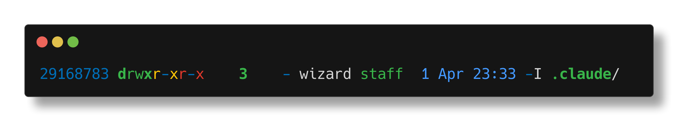
§129eza: ls Evolved
EZA: LS EVOLVED
// ls is dead. long live ls. //
eza is the modern Rust replacement for ls, formerly known as exa. Maintained by eza-community after exa's author went AWOL. In zpwr, it's the default file lister for everything.
$ZPWR_EXA_COMMAND — THE CONFIGURED INVOCATION
command eza --git -il --classify=always -H --color-scale -g -a --colour=always
Every flag earns its place: –git # git status per file (M modified, N new, I ignored) -i # show inode numbers -l # long listing format –classify=always # / after dirs, * after executables, always -H # show hard link count –color-scale # gradient colors for file sizes and ages -g # show group ownership -a # show hidden files (dotfiles) –colour=always # force color even when piped.
WHY –classify=always?
Not just -F. Under p10k instant prompt, stdout gets redirected during init. eza's –classify auto-detects terminal capabilities and when stdout is redirected, it drops the indicators. The =always suffix forces classification regardless of fd state. Without it, your login banner loses all the / and * markers.
WHERE IT'S USED
ZpwrClearList and zpwrListNoClear both eval $ZPWR_EXA_COMMAND. The fallback chain: eza -> grc + gls -> raw ls. zpwrListNoClear checks for eza first, falls back to gls on macOS (with grc for colorization) or plain ls on Linux.
alias eza="ZPWR_EXA_COMMAND" # bound in zpwrBindAliasesLate alias lr="ZPWR_EXA_COMMAND -R --tree | less -rMN"
The lr alias gives you a recursive tree piped through less with line numbers — a full filesystem X-ray.
EXTENDED ATTRIBUTES
Set ZPWR_EXA_EXTENDED=true in .zpwr_env.sh to add –extended, which shows xattr metadata on macOS (com.apple.quarantine etc).
§130eza: Colors & Integration
EZA: COLORS & INTEGRATION
// a file listing without color is just noise. //
EZA_COLORS ENVIRONMENT VARIABLE
eza uses EZA_COLORS (or EXA_COLORS for compat) to customize colors beyond the defaults. Format is colon-separated key=value:
export EZA_COLORS="di=34:ln=35:so=32:pi=33:ex=31"
Keys match LS_COLORS extensions. eza also adds its own: da=date, sn=file size number, sb=file size unit, uu=current user, un=other user, gu=current group.
LS_COLORS COMPATIBILITY
eza reads LS_COLORS as a fallback. If you have a vivid or dircolors setup, eza inherits it. EZA_COLORS overrides.
TREE VIEW
eza --tree # recursive tree (like tree command) eza --tree -L 3 # limit depth to 3 levels eza --tree --git-ignore # respect .gitignore in tree
The tree integrates with –git, so you see git status markers inline with the tree structure. New files glow green.
THE FALLBACK CHAIN IN zpwrListNoClear
1. If eza exists: eval $ZPWR_EXA_COMMAND 2. macOS + grc: grc -c gls -iFlhA –color=always 3. macOS bare: ls -iFlhAO (O = macOS file flags) 4. Linux + grc: grc -c ls -iFlhA –color=always 5. Linux bare: ls -ifhlA grc (Generic Colouriser) wraps ls output with conf.gls rules. It's the middle ground between raw ls and eza.
ZPWR VERBS USING EZA
ZpwrClearList clears the terminal then runs the listing. It's called on every cd via the chpwd hook — so you always see what's in the directory you just landed in. zpwrListNoClear does the same listing without clearing.
SORTING & FILTERING
eza --sort=modified # sort by modification time eza --sort=size # sort by file size eza -r # reverse sort order eza --group-directories-first # dirs at top eza -I '*.pyc|__pycache__' # ignore patterns
Combine with –git-ignore to hide everything in .gitignore. Your file listings become as curated as your code.
CH 35BAT — CAT WITH WINGS
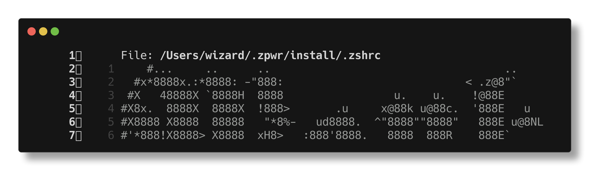
§131bat: Syntax Highlighting for Everything

BAT: SYNTAX HIGHLIGHTING FOR EVERYTHING
// cat is for reading files. bat is for understanding them. //
bat is a cat clone with syntax highlighting, git integration, and automatic paging. Written in Rust. In zpwr it's the default colorizer: ZPWR_COLORIZER=bat in .zpwr_env.sh.
CORE FEATURES
Line numbers in the gutter. Git diff markers (+/-/ ) in the margin. Syntax highlighting for 200+ languages. Automatic paging via less when output exceeds terminal height.
DISCOVERY
bat –list-themes # see all available color themes bat –list-languages # every syntax bat can highlight.
HOW ZPWR USES BAT
bat is the preview engine for fzf throughout zpwr:
fzf --preview 'bat --color=always '
The full zpwr colorizer invocation:
bat --paging never --wrap character --color always --style="numbers,grid,changes,header"
This is stored in $ZPWR_COLORIZER and expanded into: FZF_COLORIZER — preview for generic fzf FZF_COLORIZER_FILE — preview for file-specific fzf FZF_COLORIZER_FILE_TEXT — text file preview (uses -l ASP) When bat is unavailable, zpwr falls back to pygmentize.
ZPWR VERBS
zpwr filesearch and zpwr wordsearch both use bat in their fzf preview windows. Vimfilesearch, vimwordsearch, and the emacs variants (emacsfilesearch, emacswordsearch) all inherit the same bat-powered preview pipeline.
STANDALONE USAGE
bat src/main.rs # highlighted source view bat -l json data.txt # force language detection bat --diff # show only git-changed lines bat -A # show non-printable chars bat --plain # no line numbers, no border bat -r 10:20 file.zsh # show only lines 10-20
The -r (–line-range) flag is perfect for surgical code review.
§132bat: Configuration & Tricks
BAT: CONFIGURATION & TRICKS
// configure your cat. teach it new tricks. make it purr. //
BAT_THEME
export BAT_THEME="Dracula"
Set this in your env to change the default theme globally. Popular themes: Dracula, Monokai Extended, Nord, OneHalfDark, Solarized (Dark), TwoDark, ansi. Preview them all:
bat --list-themes | fzf --preview='bat --theme= src/main.rs'
STYLE COMPONENTS
bat --style=numbers,changes,header
Components: full, auto, plain, numbers, changes, header, header-filename, header-filesize, grid, rule, snip. Combine with commas. 'full' enables everything. 'plain' disables everything — just colored text, no chrome.
BAT AS MANPAGE COLORIZER
export MANPAGER="sh -c 'col -bx | bat -l man -p'"
This makes every man page syntax-highlighted. The -l man forces manpage language detection, -p is –plain (no line numbers cluttering man output). Col -bx strips backspace formatting.
SYNTAX CACHE
bat cache --build # rebuild syntax/theme cache bat cache --clear # clear and rebuild from scratch
After adding custom .sublime-syntax files to , rebuild the cache to pick them up.
DEBIAN/UBUNTU GOTCHA
On Debian-based systems, the binary is batcat not bat due to a name conflict with an unrelated package. Fix:
alias bat=batcat # or symlink: ln -s batcat ~/.local/bin/bat
BAT + DELTA FOR GIT DIFFS
delta is a syntax-highlighting pager for git diffs. It uses bat's syntax themes internally. Configure in .gitconfig:
[core] pager = delta [delta] syntax-theme = Dracula
delta adds line numbers, side-by-side view, and word-level diff highlighting. bat does files, delta does diffs.
BAT_PAGER
export BAT_PAGER="less -RFX"
Customize the pager bat uses. -R for color, -F to quit if one screen, -X to not clear screen on exit. Or set to '' to disable paging entirely — zpwr does this with –paging never.
CH 36FD-FIND — FIND REPLACEMENT

§133fd: find for Humans

FD: FIND FOR HUMANS
// find is powerful. fd is powerful AND usable. //
fd is a fast, user-friendly alternative to find, written in Rust by David Peter (sharkdp — also the author of bat). It respects .gitignore by default and uses regex, not globs.
BASIC USAGE
fd PATTERN # search current dir recursively fd PATTERN path/ # search specific directory fd 'test.*\.zsh' # full regex support
No -name, no -type f, no quoting gymnastics. Just the pattern.
KEY DIFFERENCES FROM FIND
1. Regex by default (find uses glob with -name) 2. Ignores .git, node_modules, .gitignore entries automatically 3. 5-10x faster than find due to parallel directory traversal 4. Smart case: case-insensitive unless pattern has uppercase 5. Colorized output by default
COMMON FLAGS
fd -e zsh # filter by extension fd -t f # files only fd -t d # directories only fd -t l # symlinks only fd -t x # executables only fd -H # include hidden files fd -I # don't respect .gitignore fd -u # unrestricted (-H -I combined) fd -g GLOB # use glob pattern instead of regex.
EXECUTION
fd -x cmd # execute command per result (parallel) fd -X cmd # execute once with all results as args.
Placeholders: = path, / = basename, // = parent dir,
. = Path without extension, /. = basename without extension.
fd -e jpg -x convert ..png # convert all jpgs to png
The -x flag runs in parallel by default — your cores earn their keep. -X collects all results and passes them as one batch. This is the find | xargs pattern without the pipe.
§134fd: Integration with zpwr & fzf
FD: INTEGRATION WITH ZPWR & FZF
// fd feeds fzf. fzf feeds your brain. the pipeline of knowing. //
FZF_DEFAULT_COMMAND
zpwr sets FZF_DEFAULT_COMMAND to use find + ag by default:
export FZF_DEFAULT_COMMAND='find * | ag -v ".git/"'
You can override this with fd for faster results:
export FZF_DEFAULT_COMMAND='fd --type f --hidden --follow'
fd is faster because it parallelizes traversal and skips .gitignore entries without needing ag to filter them out.
FD + FZF PATTERNS
fd -e zsh | fzf # fuzzy find zsh files fd -t f | fzf --preview 'bat ' # find + preview vim (fd -t f | fzf) # find, select, edit
This three-tool combo (fd + fzf + bat) is the holy trinity of file navigation. fd finds, fzf filters, bat previews.
TEMPORAL & SIZE FILTERS
fd –changed-within 1d # modified in last 24 hours fd –changed-before 1w # modified more than a week ago fd –size +1m # files larger than 1 megabyte fd –size -10k # files smaller than 10 kilobytes Units: b (bytes), k (kilobytes), m (megabytes), g (gigabytes). Time: s (seconds), m (minutes), h (hours), d (days), w (weeks).
FD + BAT
fd -e rs --exec bat # colorized find results fd -e md -X bat # cat all markdown files at once
FD vs FIND vs LOCATE
Find — universal. Every Unix has it. Slow on large trees. Supports -exec, -newer, -perm, -prune. The Swiss Army. fd — fast parallel traversal, sane defaults, .gitignore aware. Best for daily use in code repositories. Locate — instant results from a pre-built database (updatedb). Stale until the next cron run. No real-time accuracy.
DEPTH & EXCLUSION
fd -d 3 # max depth of 3 levels fd -E node_modules # exclude a directory by name fd -E '*.min.js' # exclude by glob pattern Stack -E flags to build precise exclusion lists on the fly.
CH 37RIPGREP — GREP AT LIGHT SPEED
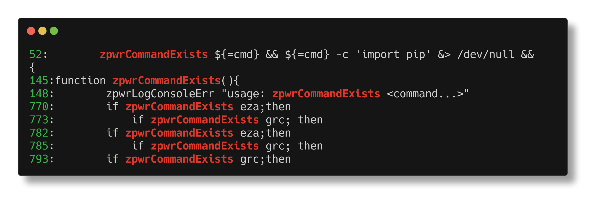
§135ripgrep: grep Reimagined
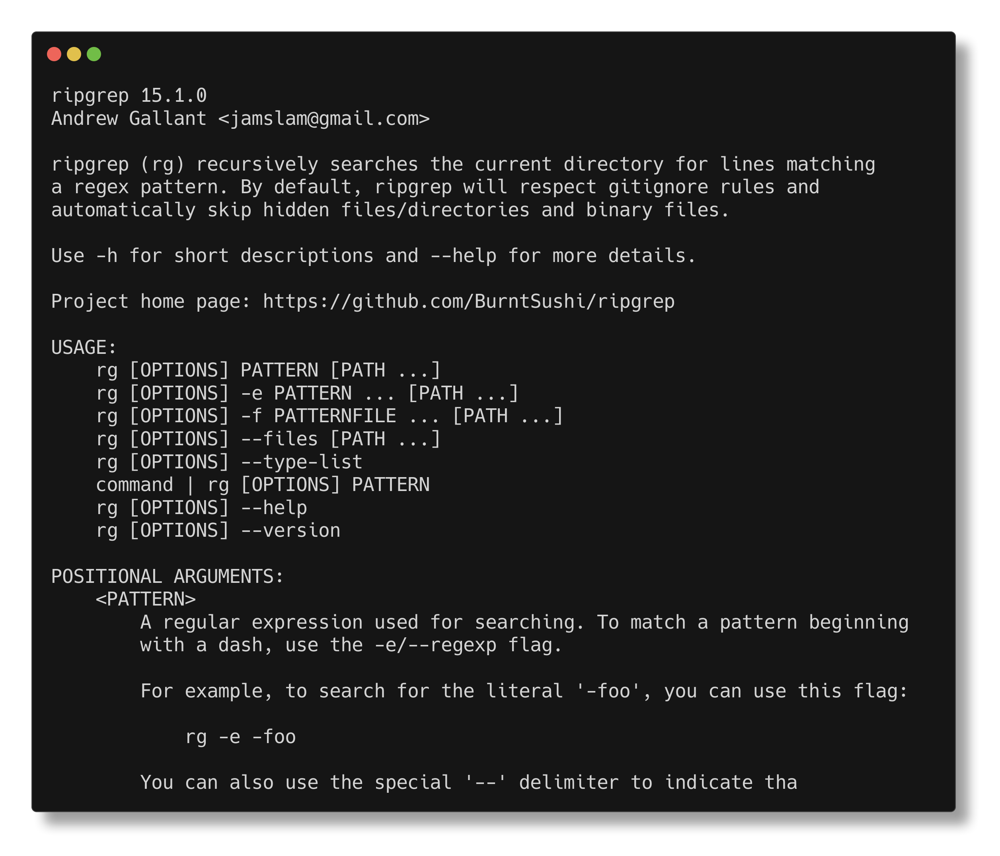
RIPGREP: GREP REIMAGINED
// grep -r is a campfire. ripgrep is a directed energy weapon. //
Ripgrep (rg) is a blazing-fast recursive grep written in Rust by Andrew Gallant (BurntSushi). It respects .gitignore, skips binary files, and uses Rust's regex engine for raw speed. 5-100x faster than grep -r on large codebases. Not a typo.
BASIC USAGE
rg PATTERN # search current dir recursively rg PATTERN path/ # search specific directory rg 'fn main' # literal or regex — rg auto-detects
Output is colorized by default: filenames in magenta, line numbers in green, matches highlighted. Grouped by file.
KEY FLAGS
rg -i PATTERN # case insensitive search rg -l PATTERN # files with matches only (paths) rg -c PATTERN # count matches per file rg -w PATTERN # whole word matches only rg -F PATTERN # fixed string (no regex interpretation) rg -v PATTERN # invert match (lines NOT matching)
FILE TYPE FILTERING
rg -t zsh PATTERN # search only zsh files rg -T js PATTERN # exclude javascript files rg -g '*.zsh' PAT # glob filter (include) rg -g '!*.min.js' PAT # glob filter (exclude) rg –type-list shows all built-in type definitions.
CONTEXT LINES
rg -A 3 PATTERN # 3 lines after each match rg -B 3 PATTERN # 3 lines before each match rg -C 3 PATTERN # 3 lines before AND after.
MULTILINE MATCHING
rg -U PATTERN # –multiline: match across lines.
rg -U 'struct \[\s\S]*?\' # match entire struct blocks
Without -U, patterns match within single lines only.
THE COMPETITION
grep -r — universal, slow, no .gitignore, no parallelism ag — the silver searcher. Fast, .gitignore aware. rg is 2-5x faster on most benchmarks. Ack — Perl-based, pioneered the "better grep" category. Slower than both ag and rg. Still has loyal users.
§136ripgrep: Advanced & zpwr Integration
RIPGREP: ADVANCED & ZPWR INTEGRATION
// rg –json | jq — structured grep for the data-obsessed. //
STRUCTURED OUTPUT
rg –json PATTERN # JSON output: one object per line Each line is a JSON object with type (begin, match, end, summary), path, line number, match offsets. Pipe to jq:
rg --json TODO | jq 'select(.type=="match") | .data.path'
SEARCH & REPLACE PREVIEW
rg –replace 'NEW' PATTERN # preview replacements This prints what the output WOULD look like with replacements but does NOT modify files. It's a dry-run. Capture groups work:
rg 'foo(\w+)' --replace 'bar1' # foo_x -> bar_x
STATISTICS
rg –stats PATTERN # show match stats after results Prints: N matches, N matched lines, N files searched, N files matched, bytes searched, duration. Quick audit.
CUSTOM FILE TYPES
rg --type-add 'zpwr:*.zsh' -t zpwr PATTERN
Define a custom type inline and use it immediately. Persist custom types in (set RIPGREP_CONFIG_PATH).
ZPWR INTEGRATION
zpwr grep uses ag (silver searcher) piped into fzf:
zpwr grep # ag into fzf for interactive search
zpwr wordsearch searches file contents with fzf preview:
zpwr wordsearch # search by word in subdirectory files
Both use bat-powered previews in the fzf window.
FZF + RG LIVE RELOAD
The ultimate interactive grep: rg feeds fzf, bat previews:
rg --line-number PATTERN | fzf --delimiter : --preview 'bat --highlight-line 2 1'
rg outputs file:line:match, fzf splits on :, bat highlights the matching line. Three tools, one seamless experience.
CONFIGURATION
export RIPGREP_CONFIG_PATH=~/.ripgreprc
Put default flags in this file, one per line: –smart-case, –hidden, –glob=!.git, –max-columns=200 Also: .rgignore in any directory works like .gitignore — project-specific patterns that rg will skip. .ignore files (used by ag too) are also respected by rg.
CH 38NEOVIM
§137Neovim: The Next Generation
NEOVIM: THE NEXT GENERATION
// vim, but the timeline where Bram had unlimited funding. //
Neovim is the modernized fork of vim. Refactored internals, async everything, built-in LSP, Lua plugin API. In zpwr, the default editor: ZPWR_VIM='nvim' in .zpwr_env.sh.
THE INIT.VIM BRIDGE
$ZPWR_INSTALL/init.vim is just three lines:
set runtimepath=~/.vim runtimepath+=~/.vim/after let &packpath = &runtimepath source ~/.vimrc
This means neovim sources the same .vimrc as vim. One config to rule them both. All 80+ vim plugins work in either editor. The symlink is created by plugins_install.sh:
ln -sf ZPWR_INSTALL/init.vim ~/.config/nvim/init.vim
NEOVIM-SPECIFIC FEATURES
Async job control — run external commands without blocking the editor. vim 8 added this too, but nvim's API is cleaner (jobstart/jobstop). Built-in LSP — nvim 0.5+ has a native LSP client. Configure with lua: vim.lsp.start(). No plugin needed for basic LSP. Lua plugin API — write plugins in Lua, not just VimScript. Lua runs 10-100x faster than VimScript. :terminal — built-in terminal emulator. Better than vim's :terminal — proper job control, scrollback, and buffer integration. True color — 24-bit color out of the box. No termguicolors hacks needed (though the option exists).
PROVIDER SUPPORT
nvim uses providers for python3 and node integration:
pip3 install pynvim # python3 provider npm install -g neovim # node.js provider
Run :checkhealth to verify all providers are working.
ZPWR VIM INFO
zpwr catviminfo and zpwr catrecentfviminfo read the nvim shada (shared data) file — the nvim equivalent of .viminfo.
§138Neovim: Configuration & Tips
NEOVIM: CONFIGURATION & TIPS
// one vimrc. two editors. zero compromises. //
THE SHARED CONFIG PHILOSOPHY
zpwr's init.vim just sources This means: 1. Every plugin in .vimbundle works in both vim and nvim 2. All keybindings, settings, and autocmds are shared 3. One file to edit: zpwr vrc opens .vimrc 4. No divergent configs to maintain across editors The .vimrc is the single source of truth. Init.vim is a shim.
NEOVIM-SPECIFIC SETTINGS
Guard nvim-only settings with has('nvim'):
if has('nvim')
set inccommand=nosplit " live substitution preview
set pumblend=15 " popup menu transparency
set winblend=15 " floating window transparency
endif
Inccommand is a killer feature: :s/old/new shows replacements live as you type. No more guessing what your regex will do.
:checkhealth
Run this in nvim to diagnose your setup. It checks: - python3/node providers (pynvim, neovim npm package) - clipboard support (pbcopy on macOS, xclip on Linux) - terminal capabilities, true color support - plugin health (many plugins register health checks) First thing to run when something feels wrong.
SESSION TRACKING
Tpope/vim-obsession (in .vimbundle) tracks sessions:
:Obsession # start tracking session to Session.vim :Obsession! # stop tracking and delete Session.vim nvim -S Session.vim # restore session
Works in both vim and nvim since it's a VimScript plugin.
WHY ZPWR SUPPORTS BOTH
nvim is better locally — async, LSP, Lua, true color. But: - Remote servers often only have vim (or vi) - Docker containers ship vim, not nvim - macOS ships vim in The shared .vimrc means your muscle memory works everywhere. nvim when you can, vim when you must, same config either way.
ZPWR EDITOR VERBS
zpwr vrc # edit .vimrc (shared by both)
Both editors, one config, zero excuses. The way it should be.
CH 39PERL IN ZPWR
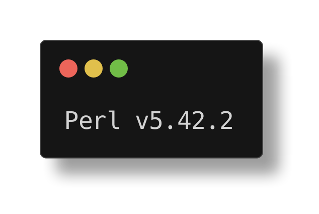
§139Perl Oneliners: The Secret Weapon
PERL ONELINERS: THE SECRET WEAPON
sed wishes it could do this. awk cries in a corner.
Perl is zpwr's scalpel for text surgery. Where sed and awk stumble on complex patterns, perl oneliners slice clean. zpwr uses perl throughout for text transformation, parsing, delimiter handling, and file manipulation.
THE KEY FLAGS
-e 'code' execute code -n loop over input lines (like sed) -p loop and print each line (like sed -p) -l chomp newlines, add them back on print -a autosplit into @F array (like awk) -F'sep' set field separator for -a -i in-place edit (like sed -i) -E enable say, state, switch (modern perl)
WHITESPACE CLEANUP (scripts/lib.sh)
perl -pi -e 's@\s+@\n@g; s@\x09@ @g'
Strips trailing whitespace, converts trailing tabs to spaces. The -pi combo: -p loops, -i edits in place. zpwr's file cleaner.
PRINT SEPARATOR LINES
perl -le "print '#'x80"
Prints 80 # characters. The x operator repeats a string. Used in zpwrPrettyPrint for visual separators.
DELIMITER TRANSFORMATION
perl -F"ZPWR_DELIMITER_CHAR" -anE 'say ...'
Splits lines on ZPWR_DELIMITER_CHAR into @F fields. Used heavily in zpwrContribCount, zpwrTotalLines for reformatting git contribution data into tabular output.
FILTER BLANK LINES
perl -ne 'print if /\S/'
Only prints lines containing non-whitespace. Used in zpwrRegenAllKeybindingsCache to clean keybinding dumps.
THE PERL REPL ALIAS
plr (alias for rlwrap perl -wnE'say eval()//@')
Interactive perl REPL with readline. Type expressions, get results.
§140Perl Oneliners: Advanced Patterns
PERL ONELINERS: ADVANCED PATTERNS
When you need a chainsaw, not a butter knife.
PATH QUOTING (zpwrGetFound)
perl -pe 's@([~]*)([~].*)@1"2"@;s@\s+@ @g'
Wraps non-tilde paths in double quotes and collapses spaces. Handles filenames with spaces for safe shell consumption.
FZF RESULT FORMATTING (zpwrAgIntoFzf)
perl -pe 's@(.*?):(\d+):(.*)@+2 "PWD/1"@'
Converts grep output (file:line:match) into vim args (+line "file"). The brain behind zpwr grep -> fzf -> vim pipeline.
VERB LIST FORMATTING (zpwrVerbsFZF)
perl -e '@a=<>;for(@a)print "zpwr 1" if m(\S+)\s+'
Reads verb list, extracts first word, prepends 'zpwr '. Builds the command string that fzf executes on selection.
IN-PLACE RENAME (zpwrChangeNameZpwr)
perl -i -pe 's@\bOLDNAME\b@NEWNAME@g' **/*(.)'
Renames all occurrences across all files. The word boundary prevents partial matches. The **(.) glob hits all regular files.
LOGIN COUNTING (zpwrLoginCount)
perl -e '"'"'print qx(last -f "_") for </var/log/wtmp*>'"'"'
Reads all wtmp files and runs last on each. The diamond operator <> globs and iterates. Then pipes to:
perl -lane '"'"'print [0] if /\S+/ && !/wtmp/'"'"'
Extracts username (first field) from non-empty, non-header lines.
FILE COUNT DEDUP (zpwrEnvCounts)
perl -lne '@l=<>;@u=domy %seen;grep!seen_++@l;'
Reads all lines, deduplicates with a hash, then checks if each unique path is a real file. The densest oneliner in zpwr. Counts unique zpwr files across all tracked locations.
IP ADDRESS EXTRACTION (ipa alias)
ifconfig | perl -lane 'do print \[1]=~s/addr//r;exit0 if /inet\s/ and !/127/'
Finds the first non-loopback inet address. The s///r flag
Returns the modified string without changing the original.
WHY PERL OVER SED/AWK?
1. Perl regex is more powerful (lookahead, backrefs, /x) 2. -i flag for in-place edit is reliable across OS 3. Complex logic in one line (if/unless/for/do blocks) 4. @F autosplit is awk-like but with perl's full stdlib 5. Perl is installed everywhere (even minimal containers)
CH 40HIDDEN SUBSYSTEMS
§141Zconvey: Terminal Communication
ZCONVEY: TERMINAL COMMUNICATION
Every terminal screams its identity into the void.
WHAT IS ZCONVEY?
MenkeTechnologies/zconvey - a zinit plugin Allows sending commands between terminal sessions. Your terminals can talk to each other. Yes, really. Loaded via zinit in $ZPWR_INSTALL/.zshplugins
HOW ZPWR USES IT
Every time you press Enter, zpwrAcceptLine fires. It calls zc-rename to label the current terminal with: TTY:$TTY PID:$$ CMD:$BUFFER PWD:$PWD DATE:$(date) This broadcasts your terminal's state to the zconvey bus. Every pane, every tab, every session - all labeled.
THE CONVEY VARIABLES
ZPWR_CONVEY_NAME the full label string sent to zconvey ZPWR_CONVEY_LAST_CMD the last command (for zconvey commands) When you run a zc-* command, it preserves the previous label so your terminal doesn't get renamed to "zc-send ls".
THE RENAME LOGIC
if ! [[ (zpwrExpandAliases BUFFER) = zc* ]]; then ZPWR_CONVEY_NAME="TTY:TTY PID: CMD:..." zc-rename ZPWR_CONVEY_NAME
If BUFFER starts with zc*, keep the old label. Otherwise, stamp the terminal with the new command.
WHY THIS MATTERS
tmux status bar can show what each pane is running. You can identify panes by their last command and PWD. Remote debugging: see exactly what terminal ran what. It's like process accounting, but for your shell sessions.
SENDING COMMANDS BETWEEN TERMINALS
Zc-send 2 'cd /tmp && ls' send command to terminal 2 zc-all 'echo hello' broadcast to all terminals Your terminals are a mesh network. Act accordingly. SIGNAL: zpwrAcceptLine is the heartbeat of zpwr. Every Enter keypress: rename terminal, check for clear, detect file-modifying commands, send tmux keys. Zconvey makes that heartbeat visible across sessions.
§142The 24-Hour Updater Loop
THE 24-HOUR UPDATER LOOP
Your system updates itself while you sleep.
THE INFINITE LOOP
$ZPWR_SCRIPTS/autoUpdater.sh runs forever. Every 24 hours it wakes up and updates everything.
while true; do bash -l updater.sh -e # sleep in 10-minute chunks until 24h elapsed done
Uses Perl Time::Piece to calculate the next update time. Logs the time diff on each wake to $ZPWR_LOGFILE.
WHAT GETS UPDATED
Updater.sh orchestrates the full update: zpwrUpdater runs the main zpwr update sequence zpwrUpdateDeps updates all package manager dependencies Homebrew, npm, pip, gem, go - everything gets refreshed. History files backed up. Logs rotated. Deps pinned.
SYSTEMD SERVICE (LINUX)
On Linux, autoUpdater.sh runs as a systemd service. zpwr restart restart the zpwr systemd service zpwr serviceup start and enable the systemd service zpwr servicedown stop and disable the systemd service On macOS, $ZPWR_SCRIPTS/updaterForLaunchCtl.sh is used.
EMAIL NOTIFICATIONS
$ZPWR_SCRIPTS/updaterEmail.sh Pipes the update log to email via mutt. Wake up to a full report of what changed overnight. Your system admin is a bash script. It never sleeps.
THE SLEEP STRATEGY
Doesn't sleep for 24h straight (that would drift). Sleeps in 10-minute intervals, checks elapsed time:
((timediff > ((3600 * 24)))) && break
This handles laptop suspends and clock adjustments. WARNING: The updater keeps zpwr and all deps current. If something breaks after an update, check the log: zpwr taillog to see what the updater did last. The machine maintains itself. You just write code.
§143The 32-Pane REPL Layout
THE 32-PANE REPL LAYOUT
Every language, one screen, zero excuses.
THE TMUX KEYBINDINGS
Prefix R source $ZPWR_TMUX/thirtytwo-panes-repl.conf prefix O source $ZPWR_TMUX/sixteen-panes.conf prefix G source $ZPWR_TMUX/eight-panes.conf prefix F source $ZPWR_TMUX/four-panes.conf One keystroke splits your terminal into a REPL army.
THE 32 REPLs (prefix R)
Pane 0: lua pane 1: swift pane 2: ghci pane 3: clisp pane 4: ocaml pane 5: clojure pane 6: pry (ruby) pane 7: bpython pane 8: php -a pane 9: groovysh pane 10: csharp pane 11: kotlinc pane 12: node pane 13: coffee pane 14: tclsh pane 15: ksh pane 16: bash pane 17: csh pane 18: perl -dE1 pane 19: gore (go) pane 20: jshell pane 21: mycli pane 22: pgcli pane 23: python2 pane 24: nslookup pane 25: mongo pane 26: irb pane 27: scala pane 28: utop pane 29: iex pane 30: bc pane 31: gforth 32 languages. 32 panes. One tmux window. Absolute madness.
THE VIM-TMUX EXECUTION PIPELINE
Write code in vim, send it to a REPL pane: Supported languages for vim-to-tmux execution: zsh, bash, python, ruby, perl, node, go java, scala, R, octave Select code in vim, fire it into the matching pane. Edit-run-edit-run without ever leaving vim.
PROGRESSIVE LAYOUTS
Don't need 32 languages? Scale down: prefix G 8 panes - quick polyglot session prefix O 16 panes - serious multi-language work prefix R 32 panes - full REPL matrix (needs big screen) Each layout is a tmux conf file in $ZPWR_TMUX/ NOTE: prefix R on a 13" laptop is an act of hubris. You'll need at least a 27" monitor to read anything. But hey, it works. And it's glorious.
§144Cross-Platform Installer
CROSS-PLATFORM INSTALLER
One repo to rule them all, one script to install them.
INSTALLER SCRIPTS IN $ZPWR_INSTALL
Formulae.sh Homebrew formulae (macOS/Linux) casks.sh Homebrew casks (macOS GUI apps) mincasks.sh minimal cask set for lean installs taps.sh Homebrew tap repositories npm_install.sh Node.js packages via npm npm.sh npm package list gems.sh Ruby gems pip_install.sh Python packages via pip pip.sh / pip3.sh pip package lists go_install.sh Go packages rustupinstall.sh Rust toolchain via rustup.
EDITOR & PLUGIN INSTALLERS
Neovim_install.sh Neovim setup vim_install.sh Vim from source vim_plugins_install.sh Vim plugin manager + plugins zsh_plugins_install.sh Zsh plugins via zinit tmux_plugins_install.sh Tmux plugin manager + plugins spacemacs_install.sh Spacemacs (Emacs) setup.
SHARED INFRASTRUCTURE
Common.sh shared installer functions used by all scripts zpwrInstall.sh the master installer orchestrator Supports 20+ Linux distros, macOS, and FreeBSD. Detects your OS and calls the right package manager.
ZPWR VERBS FOR INSTALLATION
zpwr install run configure, make, make install zpwr uninstall uninstall all zpwr configs zpwr regenconfiglinks regen symlinks from $ZPWR_INSTALL to $HOME regenconfiglinks recreates dotfile symlinks after a reinstall.
THE SYMLINK STRATEGY
zpwr doesn't copy config files to $HOME. It symlinks them. .vimrc, .tmux.conf, .gitconfig - all point back to $ZPWR_INSTALL. Edit once in the repo, git commit, and every machine gets it. zpwr regenconfiglinks rebuilds them if they break. PHILOSOPHY: Package lists are just text files. Add a line to formulae.sh, and your next machine gets it. Your entire dev environment is version-controlled.
CH 41QUALITY ASSURANCE
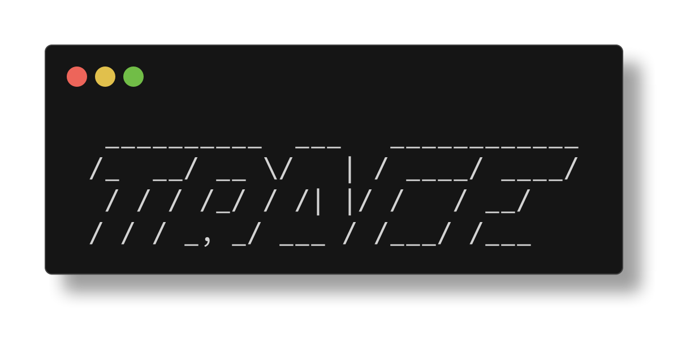
§145The Test Suite
THE TEST SUITE
60 test files standing between you and chaos
TESTING FRAMEWORK
zpwr uses zunit - a testing framework written in zsh. Config lives in $ZPWR/.zunit.yml Tests dir: $ZPWR_TEST Output: $ZPWR_TEST/_output Support helpers: $ZPWR_TEST/_support
TEST CATEGORIES
T-autoload-* verify all autoloaded functions load, defined, existence, fpath, whence, type, body Every autoload function must: exist, load, have a body. T-autoload-subdir-* same checks for subdirectory autoloads t-env-* verify environment variables defined, exported, comprehensive, type checks Every ZPWR_* var must be defined and exported. T-scripts-* verify script files executable, readable, non-empty, have shebangs, valid syntax t-verbs-* verify zpwr verb definitions key format, non-empty values, callable, type checks.
MORE TEST FILES
T-functions.zsh test core shell functions t-callable-fns.zsh verify functions are callable t-navigation.zsh test directory navigation t-install-files.zsh verify installer file integrity t-repo-files.zsh verify repo structure t-plugin-counts.zsh verify plugin load counts.
RUNNING TESTS
zpwr test run all zpwr tests zpwr testall run ALL env tests (comprehensive sweep) fail_fast: true means first failure stops the run. Verbose: true means you see every assertion. GUARANTEE: Every autoload loads. Every env var defined. Every script executable. Every verb callable. 60 test files verify zpwr won't break your shell. If tests pass, your environment is sound. Ship it.
CH 42COLORIZATION STACK
§146GRC: Generic Colorizer
GRC: GENERIC COLORIZER
Because monochrome ls is a crime against humanity.
WHAT IS GRC?
grc wraps commands and adds color output via regex rules. It reads a config file that maps patterns to colors. Any command's output can be colorized. Zero modifications.
GRC IN zpwrListNoClear
The fallback chain when listing files: 1. eza preferred (color-scale, git status) 2. grc + ls fallback (colorized via conf.gls) 3. Plain ls last resort (no color config)
PLATFORM-SPECIFIC COMMANDS
MacOS:
grc -c HOME/conf.gls gls -iFlhA --color=always
Linux:
grc -c HOME/conf.gls ls -iFlhA --color=always
MacOS uses gls (GNU ls from coreutils) because BSD ls doesn't support all the flags. Linux uses native ls.
THE conf.gls CONFIG
Custom color configuration for ls output, lives at:
HOME/conf.gls
Maps file types, permissions, sizes to ANSI colors. Directories, executables, symlinks - all distinct colors.
OTHER GRC TARGETS
grc can colorize almost any command: ping latency numbers in color traceroute hop-by-hop color coding make errors red, warnings yellow gcc compiler output colorized netstat connection states highlighted diff additions green, deletions red.
GRC IN LOG COLORIZATION
$ZPWR_SCRIPTS/colorLogger.sh uses grc for system logs. tmux control windows show colorized live log output. TIP: If eza is missing and ls looks dull, install grc. It's the middle tier of zpwr's color fallback chain. One package, instant color for dozens of commands.
§147Ponysay, Lolcat & ASCII Art
PONYSAY, LOLCAT & ASCII ART
Enterprise-grade cartoon horse infrastructure.
THE ASCII ART TOOLCHAIN
ponysay My Little Pony ASCII art (cowsay but fabulous) lolcat rainbow gradient text output figlet large ASCII text banners from font files cowsay classic ASCII art speech bubbles toilet another ASCII art text renderer zpwr combines all of these for its startup banner.
ZPWR BANNER VERBS
zpwr bannerpony hostname banner with ponysay zpwr bannerlolcat ponysay + lolcat rainbow gradient zpwr bannernopony banner without ponysay zpwr figletfonts preview all installed figlet fonts Each verb calls a different autoloaded function:
zpwrPonyBanner, zpwrBannerLolcat, zpwrNoPonyBanner
THE STARTUP BANNER
On shell startup, zpwrDarwinBanner / zpwrLinuxBanner fires. It picks a random figlet font each time via:
ZPWR_SCRIPTS/macOnly/figletRandomFontOnce.sh
ZPWR_BANNER_TYPE controls pony vs no-pony: ponies -> zpwrBannerLolcat (rainbow horse) other -> zpwrNoPonyBanner (figlet only)
BANNER CONTROL
ZPWR_BANNER_CLEARLIST controls startup banner + ls display When true: clear screen, show banner, then zpwrListNoClear. When false: skip the banner entirely (fast startup).
FONT LOGGING
The random figlet font name is logged to:
ZPWR_LOGFILE
Want to know which font made that gorgeous banner? zpwr taillog and look for the font name. Found one you love? Set it permanently in your config. REALITY CHECK: A rainbow pony greeting you on every terminal open is either peak engineering or peak insanity. zpwr does not distinguish between the two. Your hostname, rendered in ASCII art, by a cartoon horse. This is what unlimited power looks like.
§148GRC, ccze & the Color Pipeline
GRC, CCZE & THE COLOR PIPELINE
Every byte of output deserves to be beautiful.
THE FULL COLORIZATION STACK
zpwr has a color tool for every type of output: FILE LISTING eza (color-scale, git status) -> grc+ls -> plain ls FILE VIEWING bat (syntax highlighting) -> cat ZPWR_COLORIZER=bat in $ZPWR_ENV/.zpwr_env.sh LOG VIEWING ccze (log colorizer) -> plain tail zpwrTailLog pipes $ZPWR_LOGFILE through ccze. GIT DIFFS delta (syntax-aware diff) -> plain diff delta adds line numbers, word-level highlighting, and side-by-side view with Dracula theme.
CCZE: LOG FILE COLORIZER
ccze parses log formats and applies semantic colors: timestamps, severity levels, PIDs, IP addresses. zpwr taillog uses ccze for colorized log tailing. System logs become readable at a glance.
COLOR TESTING VERBS
zpwr colortest test terminal basic 16 colors zpwr colortest256 test full 256-color palette zpwr pygmentcolors show all pygment color schemes zpwr colorsdiff colorized side-by-side diff Use these to verify your terminal supports the full palette.
THE FALLBACK PHILOSOPHY
Every color tool has a plain fallback: No eza? grc+ls. No grc? Plain ls. No bat? Cat. zpwr degrades gracefully. Color is never a hard dependency. SSH into a minimal server? Everything still works. Just less pretty. Function over form, always. THE RESULT: In a fully-equipped zpwr terminal: File listings glow. Logs are semantic. Diffs are surgical. Your eyes never have to parse raw monochrome again. The color pipeline is zpwr's cosmetic surgery department.
CH 43HEALTH & DIAGNOSTICS
§149Startup Profile
STARTUP PROFILE
// bench tells you HOW FAST. startup tells you WHERE the time goes. //
zpwr bench measures total wall time over multiple iterations. zpwr startup gives a single-shot, per-function breakdown using zsh's built-in zprof profiler.
THE VERB
zpwr startup # top 30 functions (default) zpwr startup 50 # top 50 functions zpwr startup 100 # full breakdown
HOW IT WORKS
1. Launches a fresh zsh with ZPWR_PROFILING=true 2. zprof runs at the end of the init sequence 3. Output is captured and colorized by self-time: >= 10% RED — hot path, optimize here >= 3% YELLOW — warm, worth investigating >= 1% CYAN — normal < 1% DIM — negligible
THE PERFORMANCE QUARTET
zpwr bench -> how fast is total startup? zpwr flame -> ASCII flame chart of function hotspots zpwr startup -> per-function zprof breakdown zpwr top -> what is loaded right now?
Four verbs. Four perspectives. Your shell is transparent.
§150Shell Lint
SHELL LINT
// if it parses, it ships. but does it REALLY parse? //
zpwr lint runs two levels of analysis on every zpwr file: syntax checking with zsh -n, and static analysis with shellcheck.
THE VERB
zpwr lint # run all checks zpwr lint -z # zsh -n syntax check only zpwr lint -s # shellcheck only
WHAT IT CHECKS
zsh -n (syntax check) Every file in autoload/common, autoload/darwin, autoload/linux, env/*.sh, env/*.zsh, install/.zshrc. This catches unmatched brackets, bad redirections, and broken quoting. Fast — no execution, just parsing.
shellcheck (static analysis) Every .sh and .zsh file in scripts/ and install/. Catches quoting bugs, unused variables, subshell pitfalls. Zsh-incompatible warnings are suppressed (SC1071 etc).
WHEN TO RUN IT
After editing any zpwr file. Before committing. Before pushing. Catch it at the gate, not in production.
COMPANION VERBS
zpwr doctor # broader health check zpwr stale # find stale compiled files zpwr recompile # rebuild .zwc files after fixes
§151Listening Ports
LISTENING PORTS
// who is listening? and on which door? //
zpwr ports wraps lsof to show every TCP port in LISTEN state with the process name, PID, user, and bind address.
THE VERB
zpwr ports # show all listening ports zpwr ports 8080 # filter to port 8080 zpwr ports -k 3000 # kill whatever is on port 3000
COLOR CODING
Privileged ports (< 1024) — RED These require root. Sshd on 22, httpd on 80. Common ports (< 10000) — YELLOW Dev servers, databases. 3000, 5432, 8080. High ports (>= 10000) — GREEN Ephemeral and user-space. Generally safe.
THE KILL FLAG
zpwr ports -k 3000 finds the PID on port 3000 and sends SIGTERM. Shows process name before killing. Use when a dev server refuses to die.
COMPANION VERBS
zpwr lsof # interactive fzf over all lsof output zpwr ps # grep through ps output zpwr kill # fzf kill from ps
§152Stale File Finder
STALE FILE FINDER
// compiled cruft is invisible cruft. make it visible. //
zpwr stale scans the entire zpwr tree for artifacts that have gone stale, orphaned, or broken.
THE VERB
zpwr stale # scan and report zpwr stale -f # delete all stale files
WHAT IT FINDS
STALE .zwc Source file is newer than its compiled .zwc. Your shell is running yesterday's bytecode.
ORPHAN .zwc The source file was deleted but the .zwc remains. Dead weight taking up space and confusing zsh.
BROKEN SYMLINKS Symlinks pointing to files that no longer exist. Source of cryptic 'file not found' errors.
EMPTY CACHE FILES Zero-byte files in cache directories. Usually left behind by interrupted operations.
THE FIX FLAG
zpwr stale -f deletes everything it finds in one pass. Follow up with zpwr recompile to rebuild .zwc files.
WORKFLOW
zpwr stale # see what is stale zpwr stale -f # nuke the cruft zpwr recompile # rebuild fresh .zwc files zpwr doctor # verify everything is clean
§153Path Audit
PATH AUDIT
// your PATH is your attack surface. audit it. //
zpwr pathaudit inspects PATH, FPATH, and MANPATH for duplicates, missing directories, and world-writable entries.
THE VERB
zpwr pathaudit # audit all three arrays zpwr pathaudit -v # verbose: show every entry
WHAT IT CHECKS
DUPLICATES Same directory appearing more than once. Wastes hash lookups and obscures precedence. Fix: zpwr deduppaths.
MISSING DIRECTORIES PATH entry pointing to a dir that does not exist. Slows command lookup — zsh checks every entry.
WORLD-WRITABLE DIRECTORIES Any user can write to this directory. If it is in your PATH, an attacker can plant a malicious binary that shadows a real command. Security risk.
ALL THREE ARRAYS
PATH — command lookup for executables FPATH — function autoload lookup for zsh MANPATH — man page lookup for documentation.
COMPANION VERBS
zpwr doctor # broader health check (also checks paths) zpwr deduppaths # remove duplicate entries zpwr environmentcounts # count all env arrays
Doctor checks paths as part of a broader scan. Pathaudit goes deeper with world-writable detection.
CH 44CREATIVE TOOLS
§154The Matrix
THE MATRIX
// not cmatrix. this is YOUR shell, raining. //
zpwr matrix is an animated cyberpunk hacker story followed by an infinite ecosystem rain screensaver. Unlike cmatrix, it rains YOUR data — verb names, function names, aliases, env vars, and git repo names. Color-coded by type.
THE STORY
ACT I The Signal — the terminal underground survives ACT II The Discovery — curl | zsh changes everything ACT III The Power — bench, flame, doctor, gitwho ACT IV The Choice — VS Code or zpwr matrix? Between acts: fake SSH sessions, encrypted transmissions, payload downloads with glitchy progress bars.
THE FX
CRT scanlines green sweep top-to-bottom VHS tracking horizontal distortion bands Pixel corruption spreading block static Screen tears offset colored bands Figlet chaos random fonts, random words, dissolve Progress bars with random glitch spikes Pulse events ecosystem facts flash across screen Scrolling ticker horizontal stat crawl HUD overlay live verb/alias/func/repo counters.
THE RAIN COLORS
Green verbs cyan functions yellow aliases magenta env vars red git repos.
USAGE
zpwr matrix # full story + rain zpwr matrix -r # skip story, rain only zpwr matrix -s 7 # faster (1-9) zpwr rain # alias zpwr screensaver # alias
CH 45INTROSPECTION
§155Command Resolver
COMMAND RESOLVER
// what IS that command, really? //
zpwr resolve traces a command through its full resolution chain. Unlike 'which' or 'type', it follows the entire path from alias to function to builtin to binary.
THE VERB
zpwr resolve ll # where does ll go? zpwr resolve ls cd git # trace multiple commands zpwr resolve -a grep # show all type -a matches zpwr which vim # alias for resolve
WHAT IT SHOWS
Aliases expansion, then resolves first word.
Functions source file path, line count, verb mapping
Builtins identified as builtin or reserved word Binaries full path, symlink chain, file type Global aliases detected and shown Suffix aliases detected and shown.
WHY NOT JUST 'which'?
'Which' shows one answer. 'type -a' shows all candidates. Neither follows the chain. If 'll' is an alias for 'eza' and 'eza' is a symlink to '../Cellar/eza/0.18', resolve shows the entire path from ll to the Mach-O binary.
COMPANION VERBS
zpwr exists # check if identifier is valid zpwr deps # function dependency graph zpwr funcrank # rank functions by usage
CH 46CREATIVE TOOLS
§156Fortune Cookies
FORTUNE COOKIES
// wisdom from the digital underground //
zpwr fortune displays a random hacker quote rendered in a random figlet font with neon colors. 40 curated quotes from legends and original ZPWR wisdom.
THE VERB
zpwr fortune # random quote, random font zpwr fortune -p # plain text with box frame zpwr fortune -f doom # force doom font zpwr wisdom # alias zpwr quote # alias
THE QUOTES
Linus Torvalds "Talk is cheap. Show me the code." Brian Kernighan "Controlling complexity is the essence..." Grace Hopper "The most dangerous phrase is..." ZPWR "Home is where the .zshrc is." MenkeTechnologies "Aliases are love letters to your future self." ...and 35 more.
THE FONTS
Randomly selected from: cyberlarge, cybermedium, doom, slant, speed, banner, standard. Each quote picks a keyword for large figlet rendering, full quote below.
USE CASES
- Add to .zshrc for a fortune on every new shell - Pipe to lolcat: zpwr fortune -p | lolcat - Use as a tmux status-right: too slow, but fun to try
CH 47THE SEARCH ENGINE
§157The Learning System
THE LEARNING SYSTEM
// your shell remembers what you learn //
The zsh-learn plugin turns your shell into a persistent knowledge base backed by MySQL. Save commands, search them, quiz yourself, and build a personal learning collection.
CORE VERBS
zpwr learn # save a learning entry zpwr searchl # search the collection zpwr quiz # quiz yourself zpwr quizall # quiz all entries zpwr redo # redo last search as SQL update
SEARCH VARIANTS
zpwr se # basic search zpwr see # category search zpwr seee # timestamp search zpwr ser # random search zpwr sef # search into fzf zpwr searchall # entire collection into fzf zpwr searchfull # entire collection into fzf zpwr searchle # category search (alias for see) zpwr searchlee # timestamp search (alias for seee) zpwr learnsearch # search the collection zpwr rsql # redo into vim zpwr redosql # redo into vim
MANAGEMENT
zpwr learndel # delete entry zpwr learndelete # delete entry (alias) zpwr delid # delete by ID zpwr editl # edit entry by ID zpwr getlearn # get all entries zpwr learnget # get all entries zpwr createlearningcollection # create MySQL table zpwr droplearningcollection # drop MySQL table
HOW IT WORKS
Entries are stored in a MySQL database (configurable via $ZPWR_SCHEMA_NAME and $ZPWR_TABLE_NAME). Each entry has a category, timestamp, and content. The quiz system pulls random entries and tests your recall.
Plugin: MenkeTechnologies/zsh-learn.
CH 48BATCH OPERATIONS
§158Git Repo Cache System
GIT REPO CACHE SYSTEM
// index every repo on your machine. operate on all of them. //
The zsh-git-repo-cache plugin scans your entire filesystem for git repos, caches the list, and lets you search, filter, and broadcast commands across all of them.
CACHE GENERATION
zpwr regengitrepocache # scan filesystem with fd/find zpwr regengitdirtyrepocache # scan only dirty repos
SEARCH & BROWSE
zpwr gitrepos # all repos into fzf zpwr gitreposclean # clean repos into fzf zpwr gitreposdirty # dirty repos into fzf zpwr gitreposlist # list all repos (no fzf) zpwr gitreposcleanlist # list clean repos zpwr gitreposdirtylist # list dirty repos
CACHED VARIANTS
zpwr gitreposcleancache # clean repos from cache zpwr gitreposdirtycache # dirty repos from cache zpwr gitreposcleancachelist # list clean from cache zpwr gitreposdirtycachelist # list dirty from cache
BATCH OPERATIONS
zpwr gitreposexec <cmd> # run cmd in all cached repos zpwr gitreposdirtyexec <cmd> # run cmd in dirty repos zpwr gitreposcleanexec <cmd> # run cmd in clean repos zpwr gitwho # contributor stats across all repos
CACHE FILES
$ZPWR_ALL_GIT_DIRS — all repos $ZPWR_ALL_GIT_DIRS_CLEAN — clean repos only $ZPWR_ALL_GIT_DIRS_DIRTY — dirty repos only.
Plugin: MenkeTechnologies/zsh-git-repo-cache.
CH 49FZF ARCHITECTURE
§159FZF Brew & Chrome
FZF BREW & CHROME
// fuzzy finding extends to your package manager and browser //
The fzf-zsh-plugin adds fzf interfaces to Homebrew package management and Chrome browser data.
HOMEBREW VERBS
zpwr brewinstall # fzf install formula zpwr brewuninstall # fzf uninstall formula zpwr brewcaskinstall # fzf install cask zpwr brewcaskuninstall # fzf uninstall cask zpwr brewupdate # fzf update formula
Each command pipes the available packages into fzf with multi-select. Pick one or many, then install/remove in one shot. No more googling package names.
CHROME VERBS
zpwr chromehistory # search Chrome history in fzf zpwr chromebookmarks # search Chrome bookmarks in fzf
Reads Chrome's SQLite databases directly. Select a URL from fzf and open it in the browser.
Plugin: MenkeTechnologies/fzf-zsh-plugin.
CH 50THE GIT DIMENSION
§160Git Add-Commit-Push
GIT ADD-COMMIT-PUSH
// 318 aliases for the git power user //
The zsh-git-acp plugin provides 318 aliases that collapse multi-step git workflows into single commands.
THE GACP PATTERN
gacp "message" # git add -A, commit, push gac "message" # git add -A, commit (no push) gcp # git commit, push
BRANCH SHORTCUTS
gcm # git checkout main gcb <branch> # git checkout -b <branch> gbd <branch> # git branch -d <branch>
ZPWR INTEGRATION
zpwr gitcommit "msg" # commit and push with message zpwr gitcommitcount # count commits in current repo
The full alias list is enormous — 318 combinations of git operations compressed into 2-4 character shortcuts. Most follow the pattern: g + operation letter(s).
Plugin: MenkeTechnologies/zsh-git-acp.
CH 51NETWORK & CONTAINERS
§161Docker & Container Aliases
DOCKER & CONTAINER ALIASES
// 148 aliases for the containerized world //
The zsh-docker-aliases plugin provides 148 aliases for Docker and Docker Compose operations.
DOCKER SHORTCUTS
dps # docker ps dpsa # docker ps -a di # docker images drm # docker rm drmi # docker rmi dex # docker exec -it dl # docker logs -f
DOCKER COMPOSE
dcu # docker compose up -d dcd # docker compose down dcl # docker compose logs -f dcr # docker compose restart
ZPWR INTEGRATION
zpwr dockerwipe # nuke all images/containers zpwr dfimage <ID> # extract Dockerfile from image
Plugin: MenkeTechnologies/zsh-docker-aliases.
CH 52ZINIT & PLUGIN SYSTEM
§162The Plugin Ecosystem
THE PLUGIN ECOSYSTEM
// 30+ custom plugins from MenkeTechnologies //
ZPWR loads approximately 95 plugins via zinit. Over 30 are custom MenkeTechnologies creations that extend zpwr with additional verbs, aliases, completions, and integrations.
KEY PLUGINS
Zsh-learn 60 verbs, MySQL learning DB zsh-git-repo-cache 20 verbs, filesystem repo index fzf-zsh-plugin 14 verbs, brew/chrome fzf zsh-git-acp 318 aliases, git workflows zsh-docker-aliases 148 aliases, Docker shortcuts zsh-openshift-aliases 106 aliases, OpenShift zsh-expand spell correct, abbreviation expand zsh-more-completions many thousands of tab completions zsh-cargo-completion 32 Rust/Cargo aliases zsh-travis 8 functions, CI integration zsh-nginx nginx management forgit fzf-powered git (add, diff, log) zsh-z frecency directory jumping fzf-tab fzf-powered tab completion zconvey cross-session communication.
CONDITIONAL LOADING
Plugins for docker, dotnet, kubectl, ngrok, rails, and systemctl only load if those commands exist. No bloat on machines without those tools.
DEFERRED LOADING
All plugins load with zinit wait'' ice — deferred after the prompt appears. Only powerlevel10k loads synchronously for instant prompt.
CH 53TIPS, TRICKS & EASTER EGGS
§163Alias Cheat Sheet
ALIAS CHEAT SHEET
// the short names you will actually use //
Many zpwr verbs have short aliases. These are the ones worth memorizing — one or two keystrokes that replace entire workflows.
DIAGNOSTICS
zpwr doc = doctor zpwr zprof = startup zpwr check = lint zpwr audit = pathaudit zpwr cruft = stale zpwr rank = funcrank zpwr benchmark = bench zpwr dashboard = top zpwr heatmap = flame zpwr instrument = trace zpwr flamechart = flame zpwr checkup = doctor zpwr callers = deps zpwr aliasusage = aliasrank
MONITORING
zpwr snap = snapshot zpwr load = restore zpwr rerun = replay zpwr onchange = watch zpwr book = study
CREATIVE
zpwr rain = matrix zpwr wisdom = fortune zpwr quote = fortune zpwr screensaver= matrix
GIT
zpwr who = gitwho zpwr gitcontribs= gitwho
INTROSPECTION
zpwr which = resolve zpwr whatis = resolve zpwr today = timeline zpwr activity = timeline
LOGGING
zpwr logs = taillog
CH 54EMACS DIMENSION
§164Emacs Integration
EMACS INTEGRATION
// 29 verbs for the church of emacs //
Every file operation in ZPWR has an emacs variant. Open, edit, search, and navigate — all wired to emacsclient.
OPEN & EDIT
zpwr emacsall # emacs all zpwr files for :argdo zpwr emacsallserver # emacs all zpwr files via server zpwr emacsalledit # emacs edit 1 or more configs zpwr emacsautoload # emacs all autoloads :argdo zpwr emacsscripts # emacs all zpwr scripts for :argdo zpwr emacsscriptedit # emacs edit 1 or more scripts zpwr emacszpwr # emacs zpwr dir
CONFIG & TOKENS
zpwr emacsconfig # emacs all zpwr configs zpwr emacsemacsconfig # emacs edit emacs zpwr configs zpwr emacstokens # emacs the .tokens.sh file zpwr emacstests # emacs edit all zpwr tests
NAVIGATION
zpwr emacscd # emacs edit and cd to first dir zpwr emacsrecent # emacs edit most recent editor files zpwr emacsrecentcd # cd and emacs edit most recent files zpwr emacsrecentsudo # sudo emacs edit most recent files zpwr emacsrecentsudocd # cd and sudo emacs most recent files
SEARCH
zpwr emacsfilesearch # emacs a file in a sub dir zpwr emacsfilesearchedit # edit emacs a file in a sub dir zpwr emacsfindsearch # emacs find drive for file zpwr emacsfindsearchedit # emacs edit find drive for file zpwr emacslocatesearch # emacs accept locate drive for file zpwr emacslocatesearchedit # emacs edit locate drive for file zpwr emacswordsearch # emacs a file in a sub dir by word zpwr emacswordsearchedit # edit emacs a file by word
TAGS & PLUGINS
zpwr emacsctags # emacs zpwr ctags tags zpwr emacsgtags # emacs zpwr GNU global tags zpwr emacsgtagsedit # emacs edit zpwr GNU global tags zpwr emacsplugincount # total number of emacs plugins zpwr emacspluginlist # total list of emacs plugins
CH 55EDITOR MASTERY
§165Vim Integration
VIM INTEGRATION
// 35 verbs for the vim faithful //
The vim verb family mirrors emacs with full parity. Open, edit, search, navigate — all wired to vim/nvim.
OPEN & EDIT
zpwr vimall # vim all zpwr files for :argdo zpwr vimalledit # vim edit 1 or more configs zpwr vimautoload # vim all autoloads :argdo zpwr vimscripts # vim all zpwr scripts for :argdo zpwr vimscriptedit # vim edit 1 or more scripts
CONFIG & TOKENS
zpwr vimconfig # edit all zpwr configs zpwr vimemacsconfig # vim edit emacs zpwr configs zpwr vimtokens # vim the .tokens.sh file zpwr vimtests # edit all zpwr tests zpwr vrc # vimrc vim session zpwr brc # shell aliases file vim session zpwr trc # tmux.conf vim session zpwr zrc # zshrc vim session zpwr tokens # vim the .tokens.sh file
NAVIGATION
zpwr vimcd # vim edit and cd to first dir zpwr vimrecent # vim edit most recent editor files zpwr vimrecentcd # cd and vim edit most recent files zpwr vimrecentsudo # sudo vim edit most recent files zpwr vimrecentsudocd # cd and sudo vim most recent files
SEARCH
zpwr vimsearch # search vim keybindings zpwr vimfilesearch # vim a file in a sub dir zpwr vimfilesearchedit # edit vim a file in a sub dir zpwr vimfindsearch # vim accept find drive for file zpwr vimfindsearchedit # vim edit find drive for file zpwr vimlocatesearch # vim accept locate drive for file zpwr vimlocatesearchedit # vim edit locate drive for file zpwr vimwordsearch # vim a file in a sub dir by word zpwr vimwordsearchedit # edit vim a file by word
TAGS, PLUGINS & VIMINFO
zpwr vimctags # vim zpwr ctags tags zpwr vimgtags # vim zpwr GNU global tags zpwr vimgtagsedit # vim edit zpwr GNU global tags zpwr vimplugincount # total number of vim plugins zpwr vimpluginlist # total list of vim plugins zpwr catviminfo # cat custom vim info file zpwr catrecentfviminfo # cat recentf then custom vim info zpwr catnviminforecentf # cat custom vim info then recentf
CH 56THE GIT DIMENSION
§166Git Operations Reference
GIT OPERATIONS REFERENCE
// 33 verbs for git mastery //
Core git verbs for commits, config, history rewriting, contributor stats, and multi-repo operations.
COMMIT & PUSH
zpwr gitcommit # commit and push with arg message zpwr gitcommitcount # count commits in current repo zpwr gitcommits # search git commits with fzf zpwr clone # clone and cd to arg
CONFIG & IGNORES
zpwr gitconfig # edit git config file zpwr gitglobalconfig # edit git config file zpwr gitignore # EDITOR ~/.git/info/exclude zpwr gitignores # edit git ignores file zpwr gitglobalignores # edit git ignores file
EMAIL & HISTORY REWRITING
zpwr gitemail # change email with git filter-branch zpwr gitcemail # change committer email zpwr gitaemail # change author email zpwr gitclearcommit # remove matching commits from history zpwr gitclearcache # clear old git refs and objects zpwr gitclearfile # rm file from all git refs/objects
STATS & INFO
zpwr gitcontribcount # count git contributions by author zpwr gitcontribcountdirs # contributions by author for dirs zpwr gitcontribcountlines # count lines contributed by author zpwr gittotallines # total line count of git files zpwr gitlargest # show largest files stored by git zpwr gitremotes # list all git remotes zpwr gitdir # check if pwd is git dir zpwr gitwho # aggregate contributor stats zpwr gitsearch # search for regex in git log
MULTI-REPO & TAGS
zpwr gitforalldir # run cmd in all git dirs zpwr gitfordirdevelop # git wipe to develop in git dirs zpwr gitfordirmain # git wipe to main in git dirs zpwr gitupdatefordir # run git updates in all git dirs zpwr gitzfordir # git wipe on branch in git dirs zpwr gitzfordirdevelop # z and git wipe to develop zpwr gitzfordirmain # z and git wipe to main zpwr gitupdatetag # print tag and latest msg zpwr gitedittag # print tag to BUFFER
§167GitHub & Travis CI
GITHUB & TRAVIS CI
// 16 verbs for the hosted world //
Verbs for GitHub repo management, contribution counting, and Travis CI browser integration.
GITHUB NAVIGATION
zpwr gh # open github profile zpwr github # open github profile zpwr mygithub # open github profile zpwr ghz # open zpwr github repo zpwr githubzpwr # open zpwr github repo zpwr zpwrgithub # open zpwr github
GITHUB REPO MANAGEMENT
zpwr githubcreate # create remote github repo zpwr githubdelete # delete remote github repo zpwr hc # create remote github repo zpwr hd # delete remote github repo
CONTRIBUTION STATS
zpwr ghcontribcount # count github contribs in last year zpwr githubcontribcount # count github contribs in last year
TRAVIS CI
zpwr travis # open current travis project zpwr travisbranch # open current travis branches zpwr travisbuild # open current travis builds zpwr travispr # open current travis PRs
CH 57NAVIGATION PROTOCOL
§168Navigation Verbs
NAVIGATION VERBS
// 39 ways to get where you are going //
Navigate the filesystem, ZPWR directories, and frecency ranked locations with precision.
DIRECTORY MOVEMENT
zpwr cd # cd to directory arg zpwr f # cd to directory arg zpwr forward # cd to directory arg zpwr fwd # cd to directory arg zpwr cdup # cd up tree to directory arg zpwr r # cd up tree to directory arg zpwr reverse # cd up tree to directory arg zpwr rvs # cd up tree to directory arg zpwr catcd # cat and cd to first dir zpwr clone # clone and cd to arg
ZPWR HOME DIRECTORIES
zpwr home # go to ZPWR zpwr homeautoload # go to ZPWR_AUTOLOAD zpwr homeautoloadcommon # go to ZPWR_AUTOLOAD_COMMON zpwr homecomps # go to ZPWR_COMPS zpwr homeenv # go to ZPWR_ENV zpwr homeexercism # cd to HOME/Exercism zpwr homeinstall # go to ZPWR_INSTALL zpwr homelocal # go to ZPWR_LOCAL zpwr homescripts # go to ZPWR_SCRIPTS zpwr hometest # go to ZPWR_TEST zpwr hometests # go to ZPWR_TEST zpwr hometmux # go to ZPWR_TMUX
ZPWR SUBDIRECTORIES
zpwr autoload # cd to autoload directory zpwr comps # cd to completion directory zpwr completions # cd to completion directory zpwr forked # cd to ZPWR_FORKED_DIR zpwr fp # cd to ZPWR_FORKED_DIR zpwr hidden # go to ZPWR_HIDDEN_DIR zpwr plugins # cd to ZSH_CUSTOM/plugins zpwr repo # cd to ZPWR_REPO_NAME zpwr scripts # cd to scripts directory zpwr web # cd to web dir zpwr zp # cd to ZPWR_REPO_NAME zpwr zpwr # cd to ZPWR_REPO_NAME zpwr zpz # cd to repo, checkout, rebase, push
FRECENCY & FZF
zpwr z # cd to z frecency ranked dir zpwr zcd # list then cd to z ranked dir zpwr dirsearch # cd to a sub dir via fzf
CH 58BUILD SYSTEM
§169Regen & Compile
REGEN & COMPILE
// 24 verbs to rebuild the world //
Regenerate caches, recompile zsh word code, and rebuild tags. The engine room of ZPWR maintenance.
REGEN CACHES
zpwr regen # regen caches except git drive search zpwr regenall # regen all caches zpwr regenpdf # regenerate encyclopedia PDF zpwr regenenvcache # regen search env to zpwrEnv files zpwr regengitrepocache # regen list of all git repos zpwr regengitdirtyrepocache# regen list of dirty git repos zpwr regenhistory # regen HISTFILE zpwr regenkeybindings # regen all keybindings cache zpwr regenconfiglinks # regen sym links to HOME zpwr regenpowerline # regen powerline sym link zpwr regenzsh # regen compsys cache
REGEN TAGS
zpwr regengtags # regen gtags files to HOME zpwr regenctags # regen ctags files to HOME zpwr regengtagspygments # regen GNU gtags with pygments zpwr regengtagstype # regen GNU gtags with specified parser
COMPILE & DECOMPILE
zpwr compile # recompile all cache comps zpwr compilefpath # recompile all fpath cache comps zpwr compilefiles # recompile all files cache comps zpwr recompile # recompile all cache comps zpwr recompilefpath # recompile all fpath cache comps zpwr recompilefiles # recompile all files cache comps zpwr refreshzwc # delete then regen compiled zsh word code zpwr decompile # delete all cache comps zpwr uncompile # delete all cache comps
CH 59THE JANITOR'S CLOSET
§170Cleanup Arsenal
CLEANUP ARSENAL
// 14 verbs to sweep the floor //
Clean directories, caches, temp files, logs, and git state. From surgical precision to nuclear wipe.
DIRECTORY CLEANING
zpwr cleandirs # clear all ZPWR_DIRS_CLEAN zpwr cleandirsandtemp # clear dirs and temp zpwr cleanall # clear dirs, temp and cache zpwr cleantemp # clean all zpwr temp files
CACHE CLEANING
zpwr cleancache # clean all zpwr cache files zpwr cleancompcache # clean all zpwr compsys cache files zpwr cleangitcache # clean all git repo cache files zpwr cleangitdirtycache # clean git repo dirty cache files zpwr cleangitcleancache # clean git repo clean cache files
LOG & UPDATE CLEANING
zpwr cleanlog # clear ZPWR_LOGFILE zpwr cleanrefreshupdate # clean, refresh zwc, update deps zpwr cleanupdatedeps # clean and update deps
DO EVERYTHING
zpwr a # banner, counts, clean, refresh, test, update zpwr all # banner, counts, clean, refresh, test, update
CH 60FORGIT DEEP DIVE
§171Forgit Reference
FORGIT REFERENCE
// 14 verbs for fzf-powered git //
Forgit wraps common git operations in fzf interfaces. Interactive staging, diffing, stashing, and more.
STAGING & DIFFING
zpwr forgitadd # fzf interactive git add zpwr forgitdiff # fzf interactive git diff zpwr forgitreset # fzf interactive git reset zpwr forgitrestore # fzf interactive git restore
STASH & CLEAN
zpwr forgitstash # fzf interactive stash show zpwr forgitclean # fzf interactive git clean
LOG & INFO
zpwr forgitlog # fzf interactive git log zpwr forgitinfo # fzf git info zpwr forgitwarn # fzf git warn
GITIGNORE MANAGEMENT
zpwr forgitignore # fzf gitignore templates zpwr forgitignoreclean # fzf gitignore clean zpwr forgitignoreget # fzf gitignore get zpwr forgitignorelist # fzf gitignore list zpwr forgitignoreupdate # fzf gitignore update
CH 61BUILD SYSTEM
§172Update System
UPDATE SYSTEM
// 6 verbs to stay current //
Keep ZPWR, its dependencies, and zinit plugins up to date. From surgical single-dep pulls to full system updates.
CONFIG UPDATES
zpwr update # update zpwr custom configs zpwr updatepull # pull latest config from repo
DEPENDENCY UPDATES
zpwr updatedeps # update all dependencies zpwr updatedepsclean # update all dependencies then clean zpwr updatezinit # update zinit dependencies
FULL UPDATE
zpwr updateall # update zpwr configs and all deps
Typical workflow: zpwr updateall pulls the latest configs, updates brew/pip/npm/gem/zinit, and refreshes caches. Run zpwr updatedepsclean afterward to reclaim disk space from stale packages.
CH 62TMUX WARFARE
§173Clipboard, Send & Tmux
CLIPBOARD, SEND & TMUX
// 13 verbs for pane orchestration //
Clipboard access, key duplication across panes, URL handling, and tmux session management.
CLIPBOARD
zpwr copycommand # get the command to copy with system zpwr pastecommand # get the command to paste with system zpwr pastebuffer # paste clipboard to BUFFER zpwr pastestring # paste clipboard to stdout
KEY DUPLICATION
zpwr startsend # dup some keys to pane zpwr startsendfull # dup all keys to pane zpwr stopsend # stop dup keys to pane
URL & BROWSER
zpwr google # google clipboard contents in tmux zpwr openurl # open URL from clipboard in tmux
SESSION MANAGEMENT
zpwr attach # attach to tmux session zpwr detach # detach from all tmux sessions zpwr killmux # kill tmux server zpwr killremote # kill tmux server and ssh
CH 63ENVIRONMENT MASTERY
§174Environment & Search
ENVIRONMENT & SEARCH
// 22 verbs to inspect and search the shell //
List env vars, search keybindings, inspect zsh internals, and navigate the cached environment.
ENVIRONMENT VARIABLES
zpwr ev # list all zpwr env vars zpwr envvars # list all zpwr env vars zpwr environmentvars # list all zpwr env vars zpwr environmentvariables # list all zpwr env vars zpwr envvarsall # list all env vars zpwr environmentvarsall # list all env vars zpwr eva # list all env vars
ENVIRONMENT COUNTS & CACHE
zpwr e # count all zpwr env zpwr envcounts # count all zpwr env zpwr environmentcounts # count all zpwr env zpwr envcachesearch # fzf search cached aliases, params, builtins zpwr environmentcachesearch# fzf search cached env zpwr envaccept # accept from fzf env zpwr envedit # edit from fzf env
KEYBINDING SEARCH
zpwr allsearch # search all keybindings zpwr vimsearch # search vim keybindings zpwr zshsearch # search zsh keybindings
ZSH INTERNALS
zpwr reload # reparse env zpwr modules # show zsh modules via fzf zpwr options # show zsh options via fzf zpwr zstyle # fuzzy search zstyle zpwr zcompdump # edit zcompdump
CH 64THE LOGGING SYSTEM
§175Logging System
LOGGING SYSTEM
// 12 verbs for structured observability //
ZPWR has a four-level logging system: trace, debug, info, error. Each level writes to file or console.
LOG TO FILE
zpwr logtrace # log trace to ZPWR_LOGFILE zpwr logdebug # log debug to ZPWR_LOGFILE zpwr loginfo # log info to ZPWR_LOGFILE zpwr logerror # log error to ZPWR_LOGFILE
LOG TO CONSOLE
zpwr logtraceconsole # log trace to console zpwr logdebugconsole # log debug to console zpwr loginfoconsole # log info to console zpwr logerrorconsole # log error to console
LOG MANAGEMENT
zpwr taillog # colorized tail of ZPWR_LOGFILE zpwr logs # colorized tail of ZPWR_LOGFILE zpwr cleanlog # clear ZPWR_LOGFILE zpwr logincount # count of logins by user
Log levels from most verbose to least: TRACE > DEBUG > INFO > ERROR.
CH 65NETWORK & CONTAINERS
§176Process & Network
PROCESS & NETWORK
// 15 verbs for procs, ports, and packets //
Kill processes via fzf, monitor process trees, toggle Tor, ping LANs, and run network diagnostics.
PROCESS MANAGEMENT
zpwr ps # ps -ef | grep arg zpwr kill # kill from ps output via fzf zpwr killedit # edit kill from ps output via fzf zpwr lsof # kill from lsof output via fzf zpwr lsofedit # edit kill from lsof output via fzf zpwr pstreemonitor # monitor process tree with watch
NETWORK DIAGNOSTICS
zpwr digs # run series of networking cmds on arg zpwr pi # ping all LAN devices zpwr ping # ping all LAN devices zpwr pir # run command on all devices
TOR & IP
zpwr torip # get IP address via Tor and whois zpwr toriprenew # renew Tor identity zpwr to # toggle external ip zpwr toggle # toggle external ip
POLLING
zpwr poll # poll git remote and run command
CH 66UTILITY ARSENAL
§177File & Text Utilities
FILE & TEXT UTILITIES
// 31 verbs for file wrangling //
Cat, list, grep, search, rename, and transform files. The everyday toolkit for text manipulation.
VIEW & LIST
zpwr cat # zpwr cat args zpwr c # zpwr cat args zpwr ls # list the files with no args zpwr list # list the files with no args zpwr clearlist # clear and list the files zpwr clearls # clear and list the files zpwr info # get info on command type with args
SEARCH
zpwr grep # grep through pwd with ag into fzf zpwr search # recursive grep search with context zpwr filesearch # cat a file in a sub dir via fzf zpwr filesearchedit # edit a file in a sub dir via fzf zpwr wordsearch # cat a file by word via fzf zpwr wordsearchedit # edit a file by word via fzf zpwr findsearch # cat find drive for file via fzf zpwr findsearchedit # edit find drive for file via fzf zpwr locatesearch # accept locate drive for file zpwr locatesearchedit # edit locate drive for file zpwr linecount # get line count of search term zpwr cfasd # cat the fasd frecency ranked file
TRANSFORM & MANAGE
zpwr replacer # find and replace text in files zpwr rename # rename files zpwr man # fzf through man pages zpwr open # open with system zpwr opencommand # get the command to open with system
CONVERT & UPLOAD
zpwr scripttopdf # convert script to PDF zpwr creategif # create GIF from file with ffmpeg zpwr upload # upload with curl zpwr urlsafe # base64 encode zpwr execglob # exec on globbed files zpwr execglobparallel # parallel exec on globbed files
CH 67INTROSPECTION
§178Shell Introspection
SHELL INTROSPECTION
// 32 verbs to look inward //
Inspect ZPWR itself: banners, counts, plugin lists, subcommand discovery, and identity checks.
EXISTENCE CHECKS
zpwr exists # check if identifier is valid zpwr existscommand # check if command is valid
BANNERS
zpwr about # show zpwr banner zpwr banner # show zpwr banner zpwr bannercounts # show banner and env counts zpwr bannerlolcat # banner with ponysay and lolcat zpwr bannernopony # show banner without ponysay zpwr bannerpony # show banner with ponysay
COUNTS & LISTS
zpwr autoloadcount # total number of autoloads zpwr autoloadlist # total list of autoloads zpwr scriptcount # total number of scripts zpwr scriptlist # total list of scripts zpwr zshplugincount # total number of zsh plugins zpwr zshpluginlist # total list of zsh plugins zpwr vimplugincount # total number of vim plugins zpwr vimpluginlist # total list of vim plugins zpwr emacsplugincount # total number of emacs plugins zpwr emacspluginlist # total list of emacs plugins
SUBCOMMANDS & VERBS
zpwr subcommands # run subcommands for zpwr <tab> zpwr subcommandscount # number of subcommands zpwr subcommandsedit # edit subcommands for zpwr <tab> zpwr subcommandsfzf # fzf subcommands for zpwr <tab> zpwr subcommandslist # list subcommands for zpwr <tab> zpwr verbs # run subcommands for zpwr <tab> zpwr verbscount # number of verbs zpwr verbsedit # edit subcommands for zpwr <tab> zpwr verbsfzf # fzf subcommands for zpwr <tab> zpwr verbslist # list subcommands for zpwr <tab> zpwr help # list subcommands with color
MISC INTROSPECTION
zpwr tty # print current tty zpwr relpath # get relative path to PWD zpwr printmap # pretty print maps
CH 68UTILITY ARSENAL
§179Miscellaneous Arsenal (1/2)
MISCELLANEOUS ARSENAL (1/2)
// the verbs that defy categorization //
TERMINAL & COLOR
zpwr animate # run terminal animation zpwr alacritty # edit alacritty config zpwr color2 # turn on stderr filter zpwr return2 # turn off stderr filter zpwr colorsdiff # colorized side diff zpwr colortest # test colors zpwr colortest256 # test 256 colors zpwr figletfonts # show all figlet fonts zpwr pygmentcolors # show all pygment colors
BACKUP & HISTORY
zpwr backup # backup files zpwr backuphistory # backup HISTFILE zpwr hist # exec history command via fzf zpwr histedit # edit history command via fzf zpwr histfile # edit history file
FILE & DIR CREATION
zpwr makedir # make a dir tree zpwr makefile # make a dir tree with file at end zpwr scriptnew # create new script without editor zpwr changename # mv dir into namespace and sed sub zpwr changenamezpwr # mv into zpwr namespace and sed sub
DOCKER & GO
zpwr dfimage # cat Dockerfile from IMAGE_ID zpwr dockerwipe # wipe all docker images zpwr goclean # clean Go package artifacts
EXERCISM
zpwr exercism # go to Exercism home page zpwr exercismedit # edit file in HOME/Exercism zpwr exercismdownload # download all for track
§180Miscellaneous Arsenal (2/2)
MISCELLANEOUS ARSENAL (2/2)
// looping, testing, system, and services //
LOOPING & BACKGROUND
zpwr background # run arg in background zpwr for # run first arg times for command zpwr for10 # run 10 times for command zpwr fordir # run first arg in following dirs zpwr fordirupdate # run git updaters in following dirs zpwr whiletrue # run command forever zpwr whilesleep # run command and sleep N seconds
TESTING
zpwr test # run all zpwr tests zpwr tests # run all zpwr tests zpwr testall # run all env tests zpwr testsall # run all env tests
SYSTEM & MISC
zpwr curl # custom curl with cleaned output zpwr deduppaths # deduplicate PATH fpath manpath zpwr edit # exec EDITOR zpwr editor # exec EDITOR zpwr install # run configure, make, make install zpwr loadjenv # lazy load jenv zpwr prettyprint # pretty print with color zpwr altprettyprint # pretty with alternating color zpwr reset # reset repo to latest main zpwr reveal # show remote repo in browser zpwr revealrecurse # recursively reveal hidden dirs zpwr rmconfiglinks # remove sym links to HOME zpwr startauto # start autocomplete zpwr stopauto # stop autocomplete zpwr timer # timer one or more commands zpwr uninstall # uninstall all zpwr configs zpwr post # postfix all output zpwr pre # prefix all output zpwr zpwrCloneToForked # clone repo to ZPWR_FORKED_DIR
SYSTEMD SERVICES
zpwr serviceup # start and enable systemd service zpwr servicedown # stop and disable systemd service zpwr restart # restart zpwr systemd service
CH 69TMUX DEEP DIVE
§181Tmux Layout Save & Restore
TMUX LAYOUT SAVE & RESTORE
Your pane arrangement, preserved forever.
THE PROBLEM
You spent 20 minutes splitting panes, resizing them, cd-ing into the right directories. Then tmux crashes. Or you reboot. Or you accidentally kill the session. All that layout work? Gone. Every time.
THE SOLUTION
zpwr tmuxsave dev # save layout as 'dev' zpwr tmuxload dev # restore it later
WHAT GETS SAVED
Windows ............... names and count Pane splits ........... exact geometry via select-layout Directories ........... per-pane working directory Running commands ...... full args from process tree Window options ........ synchronize-panes, auto-rename Session options ....... non-plugin tmux settings Active pane/window .... cursor position restored
MANAGEMENT
zpwr tmuxsave # save with timestamp name zpwr tmuxsave --list # list saved layouts zpwr tmuxsave --delete dev # remove a layout zpwr tmuxload # fzf picker (no args) zpwr tmuxload dev mywork # restore as session 'mywork'
KEYBINDING
Prefix W # save layout (tmux keybinding)
ALIASES
zpwr layoutsave = zpwr tmuxsave zpwr layoutload = zpwr tmuxload
Layouts are stored as self-contained zsh scripts in $ZPWR_LOCAL/layouts/. You can edit them by hand, version control them, or share them with your team.
PROTIP: Save your layout before experimenting. If you break everything, one command brings it back.
CH 70MONITORING & AUTOMATION
§182Live Dashboard & Sparklines
LIVE DASHBOARD & SPARKLINES
Your shell's vital signs, in real time.
zpwr top
A live-updating dashboard of your shell's resource usage. Runs in alternate screen buffer. Press q to quit.
zpwr top # refresh every 2s zpwr top 1 # fast refresh zpwr top 5 # slow refresh zpwr dashboard # same verb zpwr live # same verb
WHAT IT SHOWS
Memory ............ RSS bar graph, virtual memory Shell objects ..... functions, aliases, completions, params Delta tracking .... changes between refreshes in yellow Loaded modules .... all zsh modules currently loaded Paths ............ fpath, path, named dirs, dir stack Context .......... git branch, tmux info, startup time Top 5 functions .. largest functions with size bars Top 5 paths ...... longest PATH entries
SPARKLINES
Startup time history: last 40 shell starts Color-coded: green=fast yellow=mid red=slow Shows min/max/avg stats below the graph.
Commit velocity: commits per day over 30 days Visualizes your development pace as a mini bar chart.
Startup times are logged automatically on each shell init to $ZPWR_LOCAL/startup_history.log.
CH 71CREATIVE TOOLS
§183Matrix: The Full Experience
MATRIX: THE FULL EXPERIENCE
8 acts, 6 characters, and your ecosystem raining down
THE STORY
zpwr matrix # 4-act story + rain zpwr matrix --extended # full 8-act saga
THE CHARACTERS
zpwr matrix --cast # show character bios
Null Pointer .... protagonist, zpwr operator Segfault ........ bash loyalist in recovery Chmod777 ........ reckless, sudo for everything
DevNull ......... silent assassin
Chad Electron ... MegaCorp VP, 64GB for Slack The Kernel ...... mythical elder, speaks in dmesg
VISUAL FX
zpwr matrix --noir # monochrome green zpwr matrix --vhs # VHS tracking distortion zpwr matrix --crt # CRT scanlines zpwr matrix --glitch # extra corruption zpwr matrix --sound # terminal bells zpwr matrix --no-fx # disable all FX zpwr matrix -c 10 # chaos level 1-10
PLAYBACK CONTROL
zpwr matrix -s 7 # speed 1-9 zpwr matrix --turbo # skip all pauses zpwr matrix -a 5 # jump to act 5 zpwr matrix -r # skip story, rain only
MULTIPLAYER
zpwr matrix --battle # 2-player tmux typing battle
Player 1 (Null Pointer) vs Player 2 (Chad Electron). Type zpwr commands faster than your opponent. HP bars, taunts, and a winner-takes-all endgame. Requires tmux. Auto-splits into two panes.
INFO
zpwr matrix --stats # ecosystem stats zpwr matrix --credits # end credits roll
CH 72HEALTH & DIAGNOSTICS
§184Expansion Stats Dashboard
EXPANSION STATS DASHBOARD
Your aliases are working for you — here's the proof.
zpwrExpandStats
Every time zsh-expand fires — alias, global alias, suffix alias, self-ref escape, native glob/hist, or spelling correction — it logs the event. zpwrExpandStats reads that log and shows you a ranked dashboard.
zpwr expandstats # show full dashboard zpwr expandstats -h # help with all options zpwr expandstats -t 10 # top 10 aliases zpwr expandstats -w 80 # wider box (80 cols) zpwr expandstats -r # reset all stats zpwr expandstats -f FILE # custom stats file
WHAT IT TRACKS
By trigger ......... space expansions vs history expansions By type ............ alias, global, suffix, escape, native Corrections ........ spelling fixes applied Total expansions ... how many times the engine fired Keystrokes saved ... chars you didn't have to type Top aliases ........ ranked bar chart with expansions shown
HOW IT WORKS
The zsh-expand plugin hooks into the zle accept-line widget. Before each command runs, it expands aliases, globals, and suffixes inline. Each expansion is logged to $ZPWR_LOCAL/zpwr-expand-stats.dat with the trigger type, expansion type, and original alias name.
CONFIG
ZPWR_EXPAND_STATS_FILE # override stats file path ZPWR_EXPAND_STATS_TOP # default top N (default: 20)
Every alias that fires is a keystroke investment paying dividends. This dashboard shows your ROI.
CH 73ZINIT & PLUGIN SYSTEM
§185zsh-sudo: Privilege Escalation
ZSH-SUDO: PRIVILEGE ESCALATION
Toggle sudo on the current command line with one keybind.
THE KEYBINDING
Ctrl-S (or Escape Escape in some configs)
HOW IT WORKS
sudo not on the line? .... it gets prepended sudo already there? ...... it gets stripped empty line? .............. pulls last command from history with sudo
WHAT IT STRIPS
When removing sudo, it also strips: builtin, command, env, and all their arguments. So sudo -E env PATH=... command foo becomes just foo.
EXAMPLE
You type: vim Hit Ctrl-S: sudo vim Hit Ctrl-S again: vim
Empty line + Ctrl-S: pulls your last command back with sudo prepended. No retyping. No arrow keys.
Plugin: MenkeTechnologies/zsh-sudo.
§186zsh-sed-sub: Inline Search & Replace
ZSH-SED-SUB: INLINE SEARCH & REPLACE
Global search and replace on the current command line.
THE KEYBINDING
Ctrl-F Ctrl-P in both viins and vicmd modes.
HOW IT WORKS
1. Type a command on the line 2. Hit Ctrl-F Ctrl-P 3. Enter the search pattern 4. Enter the replacement 5. All occurrences on the line are replaced
EXAMPLE
You type: cp file.txt /old/path/ && mv file.txt /old/path/bak Hit Ctrl-F Ctrl-P, search: old, replace: new Result: cp file.txt /new/path/ && mv file.txt /new/path/bak.
Faster than arrow keys. Works on the entire line. Like sed but for your command line buffer.
Plugin: MenkeTechnologies/zsh-sed-sub.
§187gh_reveal: Open Repo in Browser
GH_REVEAL: OPEN REPO IN BROWSER
Quickly open the current git project in your browser.
THE COMMAND
zpwr reveal # open current repo on GitHub
HOW IT WORKS
Reads the git remote URL from the current repo, converts it to an HTTPS URL, and opens it in your default browser. Works with GitHub, GitLab, Bitbucket, and any git remote.
USE CASES
- Check the PR page for the branch you are on - View the README without cat-ing it locally - Jump to Issues or Actions from the terminal - Share a repo link with a coworker fast
Also accessible as zpwr revealrecurse to search up the directory tree for a git repo.
Plugin: MenkeTechnologies/gh_reveal.
§188Colorful Manuals & Package Completions
COLORFUL MANUALS & PACKAGE COMPLETIONS
The smaller plugins that make everything nicer.
zsh-very-colorful-manuals
Custom colorscheme for man pages. Headers in bold cyan, underlines in magenta, flags in green. Makes man pages actually readable instead of a wall of white text. Works automatically — no commands needed.
zsh-gem-completion
Enhanced Ruby gem completion. Includes all OMZ gem completion plus remote gem search:
gem install <tab> # completes remote gems
Results come from gem search output.
zsh-pip-description-completion
Enhanced pip completion. All OMZ pip completion plus remote package search:
pip install <tab> # completes remote packages
Results come from pip search output with descriptions.
zsh-better-npm-completion
Better npm completion. Context-aware:
npm install <tab> # completes package names npm run <tab> # completes scripts from package.json npm uninstall <tab> # completes installed packages
Each subcommand gets the right completions.
All plugins: MenkeTechnologies/*
§189Specialty Completions & Aliases
SPECIALTY COMPLETIONS & ALIASES
Platform-specific plugins loaded conditionally.
zsh-cpan-completion
Tab completion for Perl CPAN modules.
cpan install <tab> # complete module names
zsh-dotnet-completion
Tab completion for .NET CLI (dotnet).
dotnet <tab> # complete subcommands dotnet add package <tab> # complete packages
Loaded conditionally when dotnet is available.
zsh-xcode-completions
Tab completion for Xcode CLI tools on macOS.
xcodebuild <tab> # complete build options xcrun <tab> # complete SDK tools
MacOS only — loaded when Xcode is detected.
kubectl-aliases
800+ aliases for kubectl. Every common operation is a short alias:
kgp = kubectl get pods kgs = kubectl get services kd = kubectl describe kl = kubectl logs
Loaded conditionally when kubectl is available.
jhipster-oh-my-zsh-plugin
Aliases and completions for JHipster (Java/Spring Boot scaffold generator).
jh = jhipster
Loaded conditionally when jhipster is available.
All plugins: MenkeTechnologies/* Conditional loading means zero overhead if the tool isn't installed on your system.
CH 74APPENDIX A: KEYBINDING REFERENCE
§190Tmux Prefix Keys: Navigation & Panes
TMUX PREFIX KEYS: NAVIGATION & PANES
pane traversal, splitting, resizing. the grid of power.
PANE SELECTION (hjkl repeatable):
prefix h select pane left prefix j select pane down prefix k select pane up prefix l select pane right prefix ; last-pane (toggle to previous) prefix o select next pane in order prefix q display-panes (5s timeout)
PANE RESIZE (HJKL repeatable, 5 cells):
prefix H resize pane left 5 prefix J resize pane down 5 prefix K resize pane up 5 prefix L resize pane right 5 prefix Ctrl-Up/Down resize pane by 1 prefix Alt-Up/Down resize pane by 5
PANE SPLITTING:
prefix - split vertical (same dir) prefix \ split horizontal (same dir) prefix " split vertical (default dir) prefix % split horizontal (default dir) prefix | split horizontal prefix _ split vertical
PANE OPERATIONS:
prefix z zoom/unzoom current pane prefix ! break pane into own window prefix x kill current pane prefix m mark current pane prefix + split vertical then close prev pane prefix Y split vertical then close prev pane prefix rotate window prefix swap pane down
ARROW KEY SELECTION:
prefix Up/Down select pane up/down prefix Left/Right select pane left/right Alt-Up/Down select pane (root table, no prefix) Alt-Left/Right select pane (root table, no prefix)
All hjkl/HJKL bindings are repeatable (-r flag). Arrow keys in root table work without prefix for speed.
// the wizard navigates panes by instinct // hjkl is muscle memory, arrows are for civilians
§191Tmux Prefix Keys: Windows & Sessions
TMUX PREFIX KEYS: WINDOWS & SESSIONS
window management, session juggling, the multiplexer core.
WINDOW CREATION & SELECTION:
prefix c new window prefix a last-window (toggle to previous) prefix 0-9 select window by number prefix ' select window by index prompt prefix n next window (repeatable) prefix p previous window (repeatable) prefix Ctrl-n next window prefix Ctrl-p previous window
WINDOW OPERATIONS:
prefix , rename current window prefix & kill window (with confirm) prefix . move window to target prefix f find window by name prefix w choose-tree window view prefix i display-message (window info) prefix t clock-mode
SESSION MANAGEMENT:
prefix $ rename current session prefix ( switch to previous client (repeatable) prefix ) switch to next client (repeatable) prefix d detach client prefix s choose-tree session view prefix Ctrl-z suspend client
RELOAD & PERSIST:
prefix r reload tmux config + display confirmation prefix Ctrl-s save session (tmux-resurrect) prefix Ctrl-r restore session (tmux-resurrect)
ROOT TABLE SHORTCUTS:
Ctrl-\ switch to next client (no prefix) Ctrl-] switch to prev client (no prefix)
META:
prefix ? list all keys prefix : command prompt prefix / describe a key binding prefix show messages
// sessions are parallel universes // the wizard keeps many realities open at once
§192Tmux Prefix Keys: Layouts & Pane Configs
TMUX PREFIX KEYS: LAYOUTS & PANE CONFIGS
preconfigured pane arrangements. instant workspaces.
ZPWR LAYOUT PRESETS:
prefix D control-window layout prefix E four vertical panes prefix F four panes layout prefix G eight panes layout prefix O sixteen panes layout prefix R thirty-two panes REPL layout prefix T config files layout prefix M learn layout
Each layout sources a conf file from $ZPWR/tmux/: D -> control-window.conf E -> fourVertical.conf F -> four-panes.conf G -> eight-panes.conf O -> sixteen-panes.conf R -> thirtytwo-panes-repl.conf T -> config-files.conf M -> learn.conf
SYNCHRONIZE & CUSTOMIZE:
prefix S toggle synchronize-panes (type in all) prefix C customize-mode
BUILT-IN LAYOUTS (Alt+number):
prefix Alt-1 even-horizontal prefix Alt-2 even-vertical prefix Alt-3 main-horizontal prefix Alt-4 main-vertical prefix Alt-5 tiled prefix Alt-6 main-horizontal-mirrored prefix Alt-7 main-vertical-mirrored
WINDOW ROTATION:
prefix Ctrl-o rotate window panes prefix Alt-o rotate window panes (reverse)
Synchronize-panes (prefix S) sends keystrokes to ALL panes. Perfect for running the same command across many servers.
// sixteen panes is not chaos // sixteen panes is the wizard's dashboard
§193Tmux Prefix Keys: Special Operations
TMUX PREFIX KEYS: SPECIAL OPERATIONS
multi-pane execution, URL picking, buffers, plugins.
MULTI-PANE EXECUTION:
prefix Space run command in all panes (single) prefix v run command in all panes (multi) prefix b open URL/path in all panes prefix g google search in all panes
These source $ZPWR/scripts/allPanes.zsh with different modes. Space -> single mode (one command per pane) v -> multi mode (batch operations) b -> single open (open URL in each pane) g -> single google (search in each pane)
URL HANDLING:
prefix e fzf URL picker -> open prefix u fzf URL picker -> search
Both use tmux-fzf-url plugin with 30s timeout.
PASTE & BUFFERS:
prefix P paste buffer prefix ] paste buffer (bracketed) prefix = choose-buffer (fzf style) prefix # list buffers prefix Ctrl-v paste from system clipboard
COPY MODE:
prefix [ enter copy mode prefix PgUp enter copy mode and page up
PLUGIN MANAGEMENT (TPM):
prefix I install plugins prefix U update plugins prefix Alt-u clean unused plugins
SEND PREFIX:
prefix Ctrl-a send prefix key to inner tmux prefix Ctrl-] send literal Ctrl-]
Use prefix Ctrl-a when nesting tmux sessions. The outer session captures prefix, Ctrl-a forwards it.
// buffers are the wizard's memory // every copy is a spell stored for later
§194Tmux Copy Mode (vi)
TMUX COPY MODE (VI BINDINGS)
scrollback navigation, selection, copy, search. pure vi.
ENTER/EXIT:
prefix [ enter copy mode q cancel and exit copy mode Escape clear selection
SELECTION & COPY:
v begin selection V select entire line Ctrl-v toggle rectangle selection Space begin selection (alternate) y copy selection to clipboard (no clear) Enter copy selection to clipboard and cancel D copy to end of line and cancel A append selection and cancel
NAVIGATION:
h/j/k/l cursor movement Ctrl-h/j/k/l move cursor 4 cells at a time w/b/e word forward/backward/end W/B/E WORD (space-delimited) movement 0 / $ start/end of line ^ first non-blank character g / G top / bottom of history H / M / L top / middle / bottom of screen
SCROLLING:
Ctrl-u / Ctrl-d half page up / down Ctrl-b / Ctrl-f full page up / down Ctrl-y / Ctrl-e scroll up / down one line J / K scroll down / up one line
SEARCH:
/ search forward (incremental) ? search backward (incremental) n / N next / previous match * search forward for word under cursor # search backward for word under cursor
ZPWR EXTENSIONS:
s copy + google search selection x copy + open URL selection z copy + google search selection RightClick copy + google search selection
Copy goes to system clipboard via reattach-to-user-namespace pbcopy. ZPWR extends vi copy mode with instant google/open actions.
// in copy mode the wizard moves through time // scrollback is archaeology, search is divination
§195Zsh Insert Mode: Basic & Movement
ZSH INSERT MODE: BASIC & MOVEMENT
the primary editing mode. where commands are born.
LINE MOVEMENT:
Ctrl-A beginning-of-line Ctrl-E end-of-line Ctrl-O EOL or next tab stop
EDITING:
Ctrl-U clear entire line Ctrl-W delete word backward (autopair) Ctrl-H delete char backward (autopair) Ctrl-Y change surrounding quotes Ctrl-Z undo Ctrl-R redo Ctrl-Q duplicate last word
ZPWR SPECIAL:
Space zpwr supernatural expand (aliases+globs) Ctrl-@ zpwr expand + terminate space Ctrl-M (Enter) zpwr magic enter (show status on empty) . zpwr rationalize dot (.. -> ../..) Ctrl-B zpwr clipboard paste Ctrl-S git add commit push (no check) Ctrl-K zsh-learn-Learn (flashcard)
COMPLETION & FZF:
Tab (Ctrl-I) fzf-completion Ctrl-D list-choices Ctrl-L clear-screen Ctrl-T fzf file widget Alt-c fzf cd widget
HISTORY:
Ctrl-N down-history Ctrl-P up-history Up/Down arrows history substring search up/down
MODE SWITCHING:
Escape enter vi command mode jf / fj enter vi command mode (chord escape)
SURROUND & PAIRS:
" ' ( [ \` auto-pair/surround insert ) ] autopair close Backspace autopair-aware delete
Space is the most powerful key: it expands aliases, global aliases, and abbreviations before inserting.
// insert mode is where spells are typed // every keystroke is an incantation
§196Zsh Insert Mode: Ctrl-F & Ctrl-V Chords
ZSH INSERT MODE: CTRL-F & CTRL-V CHORDS
two-key combos that unlock the full zpwr arsenal.
CTRL-F CHORDS (fzf & actions):
Ctrl-F Ctrl-D pipe buffer into fzf Ctrl-F Ctrl-F cd + vim fzf file search (accept) Ctrl-F Ctrl-G google search Ctrl-F Ctrl-H lsof into fzf Ctrl-F Ctrl-I ag (silver searcher) into fzf Ctrl-F Ctrl-J zpwr verbs widget (accept) Ctrl-F Ctrl-K alternate quotes around buffer Ctrl-F Ctrl-L list choices Ctrl-F Ctrl-M zzcomplete Ctrl-F Ctrl-N zpwr verbs widget (browse) Ctrl-F Ctrl-O open URL from buffer Ctrl-F Ctrl-P basic sed substitution Ctrl-F Ctrl-R wrap buffer as variable Ctrl-F Ctrl-S git diff check (gacp) Ctrl-F Ctrl-V edit command line in $EDITOR Ctrl-F j zpwr verbs widget (accept) Ctrl-F n zpwr verbs widget (browse)
CTRL-V CHORDS (vim/fzf/navigation):
Ctrl-V Ctrl-@ vim fzf (open file in vim) Ctrl-V Space vim fzf (open file in vim) Ctrl-V Ctrl-F fasd fzf (frecency file open) Ctrl-V Ctrl-G fzf cd widget Ctrl-V Ctrl-K emacs fzf Ctrl-V Ctrl-L z fzf (frecency dirs) Ctrl-V Ctrl-N vim fzf sudo Ctrl-V Ctrl-O fzf tab complete Ctrl-V Ctrl-P sudo command line toggle Ctrl-V Ctrl-R history search multi-word Ctrl-V Ctrl-S z fzf (alternate) Ctrl-V Ctrl-V vim all files widget (accept) Ctrl-V Ctrl-Z fzf history widget Ctrl-V , fzf environment variables Ctrl-V . fzf all keybindings
Ctrl-V // locate fzf
Ctrl-V /. locate fzf + edit Ctrl-V ; fzf surround Ctrl-V c fzf git commits Ctrl-V k fzf vim keybindings Ctrl-V m vim all files widget (browse) Ctrl-V v vim all files widget (accept)
Ctrl-F is the action chord: search, edit, google, diff. Ctrl-V is the vim/fzf chord: open files, browse, navigate.
// chords are the wizard's combos // two keys unlock what single keys cannot reach
§197Zsh Visual & Menu Select Modes
ZSH VISUAL & MENU SELECT MODES
text objects, selection, and completion menu navigation.
VISUAL MODE (enter with v/V in vicmd):
Escape deactivate region j / k move selection down / up o exchange point and mark p put replace selection x delete selection u downcase selection U upcase selection swap case of selection
TEXT OBJECTS (a = around, i = inner):
a" / i" select around/inner double quotes a' / i' select around/inner single quotes a\` / i\` select around/inner backticks a( / i( select around/inner parentheses a[ / i[ select around/inner brackets a / i select around/inner braces a< / i< select around/inner angle brackets aB / iB select around/inner block aw / iw select a word / in word aW / iW select a blank word / in blank word aa / ia select a shell word / in shell word
Extended quote chars also work as text objects: + , - . / : ; = @ | \ are all valid quote delimiters.
MENU SELECT MODE (during completion):
Ctrl-J / Ctrl-K move down / up in menu Ctrl-H / Ctrl-L move left / right in menu Tab / Ctrl-I move forward (next item) Ctrl-S / Shift-Tab reverse menu complete Ctrl-@ (Ctrl-Space) accept line Ctrl-D accept and menu complete (stay open) Ctrl-F accept and infer next Ctrl-M (Enter) accept line (.accept-line) Ctrl-V insert mode within menu Ctrl-N / Ctrl-P forward / backward word in menu Ctrl-X incremental search forward in menu ? incremental search backward in menu . self-insert (exit menu + type dot) Backspace undo last menu selection
Menu select uses hjkl-style navigation with Ctrl prefix. Ctrl-D is key: accept current match but keep menu open.
// visual mode is precision surgery // select only what you need, transform only what you touch
§198Vim Normal Mode Highlights
VIM NORMAL MODE: ZPWR HIGHLIGHTS
leader mappings, fzf integration, tmux synergy. leader key is Space. only zpwr-specific bindings listed.
FILE & BUFFER (Space prefix):
Space w :w! (force write) Space e :q! (force quit) Space q :qa! (quit all) Space wq :wq! (write and quit) Space n / Space p next / prev buffer Space an / Space ap next / prev in arglist Space Tab alternate or next buffer Space t new tab Space s / Space v horizontal / vertical split
FZF INTEGRATION (Space prefix):
Space f :Files! (fzf files) Space b :Buffers! (fzf buffers) Space j :Lines! (fzf lines) Space ag :Ag (silver searcher) Space aa :Agg (ag variant) Space rg :Rg (ripgrep) Space z :Commits! (fzf git commits) Space ; :Commands! (fzf commands) Space , :FZFMaps (fzf all mappings) Space ke / , / m / i fzf keys / maps / nmap / imap Space ta / ma / env fzf tags / marks / env vars Space / / . locate all / colorscheme picker
HISTORY (Space prefix):
Space hh :History! (fzf file history) Space h/ :History/! (fzf search history) Space h: :History:! (fzf command history)
SEARCH & REPLACE (Space prefix):
Space r replace word under cursor (whole file) Space g global substitute word under cursor Space x repeat last substitution on line n / N next / prev search (centered) z/ toggle auto-highlight word under cursor
GIT & TMUX:
Space hs GitGutter stage hunk Space hu GitGutter undo hunk Space hp GitGutter preview hunk [c / ]c prev / next git hunk Space vj save + TmuxRepeat file Space os / ox / oc google / open URL / copy word
MINIMAP & COMMENTS:
Space mm open minimap Space mt toggle minimap Space cc NERDCommenter comment Space c Space NERDCommenter toggle Space cu NERDCommenter uncomment
// the leader key is Space because power needs room // every binding is one thought away from execution
§199Vim Insert & Visual Mode + Keybinding Search
VIM INSERT & VISUAL MODE + KEYBINDING SEARCH
vim mode highlights and how to find any keybinding.
VIM INSERT MODE HIGHLIGHTS:
Ctrl-A jump to first non-blank (like ^) Ctrl-E end of line or dismiss popup Ctrl-D delete char forward or default Ctrl-F move right or scroll Ctrl-S isurround (surround insert) Ctrl-G s / S isurround / ISurround (line) Ctrl-Tab list ultisnips snippets Shift-Tab SuperTab backward completion Alt-d delete word forward " ' ( ) [ ] \` delimitMate auto-pairing
VIM VISUAL MODE HIGHLIGHTS:
Space r replace word in selection range Space g global substitute in selection range Space x repeat last sub on selected lines Space " ' \` ( [ surround selection with quote/bracket Space b copy selection to tmux buffer Space = / Space - grow / shrink selection (4 lines) J / K move selected lines down / up Y yank and move to end < / > indent / outdent (stay in visual) S vim-surround visual surround go copy selection + open as URL gs copy selection + google search Space vl / vk / vj TmuxRepeat repl / visual / file Space em / ev / ef extract method / variable / fold
SNEAK & MOTION:
s / S sneak forward / backward (2-char) f / F / t / T sneak-enhanced find char ; / , repeat / reverse last sneak/find w / b / e CamelCaseMotion word movement
=
HOW TO SEARCH KEYBINDINGS:
=
zpwr allsearch search ALL keybindings in fzf zpwr vimsearch search vim keybindings in fzf zpwr zshsearch search zsh keybindings in fzf
KEYBINDING CACHE FILES:
$ZPWR_LOCAL/zpwrAllKeybindings.txt $ZPWR_LOCAL/zpwrVim,Zsh,TmuxKeybindings.txt
REGENERATE:
zpwr regenkeybindings regenerate all keybinding caches
Cache files are auto-generated. Run regenkeybindings after adding new bindings to refresh the searchable index.
// the wizard does not memorize 4000 keybindings // the wizard searches them at the speed of thought // fzf is the oracle, the cache is the grimoire
CH 75APPENDIX B: COMPLETE KEYBINDING DUMP
§200ALL Tmux Prefix Keys (1/4)
ALL TMUX PREFIX KEYS (1/4)
bind-key -T prefix Space run-shell -b 'ZPWR/scripts/allPanes.zsh single bind-key -T prefix . break-pane bind-key -T prefix ' split-window bind-key -T prefix \# list-buffers bind-key -T prefix \ command-prompt -I '#S' rename-session '%%' bind-key -T prefix \% split-window -h bind-key -T prefix & confirm-before -p 'kill-window #W? (y/n)' kill-win bind-key -T prefix ' command-prompt -T window-target -p index selec bind-key -r -T prefix ( switch-client -p bind-key -r -T prefix ) switch-client -n bind-key -T prefix + split-window -v -c '#pane_current_path' \; sele bind-key -T prefix , command-prompt -I '#W' rename-window '%%' bind-key -T prefix - split-window -v -c '#pane_current_path' bind-key -T prefix . command-prompt -T target move-window -t '%%' bind-key -T prefix / command-prompt -k -p key list-keys -1N '%%' bind-key -T prefix 0 select-window -t :=0 bind-key -T prefix 1 select-window -t :=1 bind-key -T prefix 2 select-window -t :=2 bind-key -T prefix 3 select-window -t :=3 bind-key -T prefix 4 select-window -t :=4 bind-key -T prefix 5 select-window -t :=5 bind-key -T prefix 6 select-window -t :=6 bind-key -T prefix 7 select-window -t :=7 bind-key -T prefix 8 select-window -t :=8 bind-key -T prefix 9 select-window -t :=9 bind-key -T prefix : command-prompt bind-key -T prefix \; last-pane bind-key -T prefix < display-menu -T '#[align=centre]#window_index:# bind-key -T prefix = choose-buffer -Z bind-key -T prefix > display-menu -T '#[align=centre]#pane_index (#p bind-key -T prefix ? list-keys -N bind-key -T prefix C customize-mode -Z bind-key -T prefix D source-file ZPWR/tmux/control-window.conf bind-key -T prefix E source-file ZPWR/tmux/fourVertical.conf bind-key -T prefix F source-file ZPWR/tmux/four-panes.conf bind-key -T prefix G source-file ZPWR/tmux/eight-panes.conf bind-key -r -T prefix H resize-pane -L 5 bind-key -T prefix I run-shell HOME/.tmux/plugins/tpm/bindings/install_ bind-key -r -T prefix J resize-pane -D 5 bind-key -r -T prefix K resize-pane -U 5 bind-key -r -T prefix L resize-pane -R 5 bind-key -T prefix M source-file ZPWR/tmux/learn.conf bind-key -T prefix O source-file ZPWR/tmux/sixteen-panes.conf bind-key -T prefix P paste-buffer bind-key -T prefix R source-file ZPWR/tmux/thirtytwo-panes-repl.conf bind-key -T prefix S set-window-option synchronize-panes bind-key -T prefix T source-file ZPWR/tmux/config-files.conf bind-key -T prefix U run-shell HOME/.tmux/plugins/tpm/bindings/update_p
§201ALL Tmux Prefix Keys (2/4)
ALL TMUX PREFIX KEYS (2/4)
bind-key -T prefix Y split-window -v -c '#pane_current_path' \; sele bind-key -T prefix [ copy-mode bind-key -T prefix \ split-window -h -c '#pane_current_path' bind-key -T prefix ] paste-buffer -p bind-key -T prefix _ split-window -v bind-key -T prefix a last-window bind-key -T prefix b run-shell -b 'ZPWR/scripts/allPanes.zsh single ope bind-key -T prefix c new-window bind-key -T prefix d detach-client bind-key -T prefix e run-shell -b 'HOME/.tmux/plugins/tmux-fzf-url/fzf- bind-key -T prefix f command-prompt find-window -Z '%%' bind-key -T prefix g run-shell -b 'ZPWR/scripts/allPanes.zsh single goo bind-key -r -T prefix h select-pane -L bind-key -T prefix i display-message bind-key -r -T prefix j select-pane -D bind-key -r -T prefix k select-pane -U bind-key -r -T prefix l select-pane -R bind-key -T prefix m select-pane -m bind-key -r -T prefix n next-window bind-key -T prefix o select-pane -t :.+ bind-key -r -T prefix p previous-window bind-key -T prefix q display-panes -d 5000 bind-key -T prefix r source-file ZPWR/tmux/init.conf \; display-messag bind-key -T prefix s choose-tree -Zs bind-key -T prefix t clock-mode bind-key -T prefix u run-shell -b 'HOME/.tmux/plugins/tmux-fzf-url/fzf- bind-key -T prefix v run-shell -b 'ZPWR/scripts/allPanes.zsh multi' bind-key -T prefix w choose-tree -Zw bind-key -T prefix x kill-pane bind-key -T prefix z resize-pane -Z bind-key -r -T prefix \ rotate-window bind-key -T prefix | split-window -h bind-key -T prefix \ swap-pane -D bind-key -T prefix \ show-messages bind-key -r -T prefix DC refresh-client -c bind-key -T prefix PPage copy-mode -u bind-key -r -T prefix Up select-pane -U bind-key -r -T prefix Down select-pane -D bind-key -r -T prefix Left select-pane -L bind-key -r -T prefix Right select-pane -R bind-key -T prefix M-1 select-layout even-horizontal bind-key -T prefix M-2 select-layout even-vertical bind-key -T prefix M-3 select-layout main-horizontal bind-key -T prefix M-4 select-layout main-vertical bind-key -T prefix M-5 select-layout tiled bind-key -T prefix M-6 select-layout main-horizontal-mirrored bind-key -T prefix M-7 select-layout main-vertical-mirrored bind-key -T prefix M-n next-window -a
§202ALL Tmux Prefix Keys (3/4)
ALL TMUX PREFIX KEYS (3/4)
bind-key -T prefix M-o rotate-window -D bind-key -T prefix M-p previous-window -a bind-key -T prefix M-u run-shell HOME/.tmux/plugins/tpm/bindings/clean_ bind-key -r -T prefix M-Up resize-pane -U 5 bind-key -r -T prefix M-Down resize-pane -D 5 bind-key -r -T prefix M-Left resize-pane -L 5 bind-key -r -T prefix M-Right resize-pane -R 5 bind-key -T prefix C-] send-keys ^] bind-key -T prefix C-a send-prefix bind-key -T prefix C-n next-window bind-key -T prefix C-o rotate-window bind-key -T prefix C-p previous-window bind-key -T prefix C-r run-shell HOME/.tmux/plugins/tmux-resurrect/scri bind-key -T prefix C-s run-shell HOME/.tmux/plugins/tmux-resurrect/scri bind-key -T prefix C-v run-shell 'tmux set buffer '(reattach-to-user- bind-key -T prefix C-z suspend-client bind-key -r -T prefix C-Up resize-pane -U bind-key -r -T prefix C-Down resize-pane -D bind-key -r -T prefix C-Left resize-pane -L bind-key -r -T prefix C-Right resize-pane -R bind-key -r -T prefix S-Up refresh-client -U 10 bind-key -r -T prefix S-Down refresh-client -D 10 bind-key -r -T prefix S-Left refresh-client -L 10 bind-key -r -T prefix S-Right refresh-client -R 10 i <C-X><C-L> * fzf#vim#complete(fzf#wrap( 'prefix': '^.*', 'source': 'r <Space><Space> <Plug>(easymotion-prefix) <Plug>(easymotion-prefix)N <Plug>(easymotion-N) <Plug>(easymotion-prefix)n <Plug>(easymotion-n) <Plug>(easymotion-prefix)k <Plug>(easymotion-k) <Plug>(easymotion-prefix)j <Plug>(easymotion-j) <Plug>(easymotion-prefix)gE <Plug>(easymotion-gE) <Plug>(easymotion-prefix)ge <Plug>(easymotion-ge) <Plug>(easymotion-prefix)E <Plug>(easymotion-E) <Plug>(easymotion-prefix)e <Plug>(easymotion-e) <Plug>(easymotion-prefix)B <Plug>(easymotion-B) <Plug>(easymotion-prefix)b <Plug>(easymotion-b) <Plug>(easymotion-prefix)W <Plug>(easymotion-W) <Plug>(easymotion-prefix)w <Plug>(easymotion-w) <Plug>(easymotion-prefix)T <Plug>(easymotion-T) <Plug>(easymotion-prefix)t <Plug>(easymotion-t) <Plug>(easymotion-prefix)s <Plug>(easymotion-s) <Plug>(easymotion-prefix)F <Plug>(easymotion-F) <Plug>(easymotion-prefix)f <Plug>(easymotion-f) <Space><Space> <Plug>(easymotion-prefix) <Plug>(easymotion-prefix)N <Plug>(easymotion-N) <Plug>(easymotion-prefix)n <Plug>(easymotion-n) <Plug>(easymotion-prefix)k <Plug>(easymotion-k) <Plug>(easymotion-prefix)j <Plug>(easymotion-j)
§203ALL Tmux Prefix Keys (4/4)
ALL TMUX PREFIX KEYS (4/4)
<Plug>(easymotion-prefix)gE <Plug>(easymotion-gE) <Plug>(easymotion-prefix)ge <Plug>(easymotion-ge) <Plug>(easymotion-prefix)E <Plug>(easymotion-E) <Plug>(easymotion-prefix)e <Plug>(easymotion-e) <Plug>(easymotion-prefix)B <Plug>(easymotion-B) <Plug>(easymotion-prefix)b <Plug>(easymotion-b) <Plug>(easymotion-prefix)W <Plug>(easymotion-W) <Plug>(easymotion-prefix)w <Plug>(easymotion-w) <Plug>(easymotion-prefix)T <Plug>(easymotion-T) <Plug>(easymotion-prefix)t <Plug>(easymotion-t) <Plug>(easymotion-prefix)s <Plug>(easymotion-s) <Plug>(easymotion-prefix)F <Plug>(easymotion-F) <Plug>(easymotion-prefix)f <Plug>(easymotion-f)
§204ALL Tmux Copy-Mode-Vi (1/2)
ALL TMUX COPY-MODE-VI (1/2)
bind-key -T copy-mode-vi Enter send-keys -X copy-pipe-and-cancel 'reatta bind-key -T copy-mode-vi Escape send-keys -X clear-selection bind-key -T copy-mode-vi Space send-keys -X begin-selection bind-key -T copy-mode-vi \# send-keys -FX search-backward – '#copy_cu bind-key -T copy-mode-vi \ send-keys -X end-of-line bind-key -T copy-mode-vi \% send-keys -X next-matching-bracket bind-key -T copy-mode-vi * send-keys -FX search-forward – '#copy_curso bind-key -T copy-mode-vi , send-keys -X jump-reverse bind-key -T copy-mode-vi / command-prompt -i -p '(search down)' 'send -X bind-key -T copy-mode-vi 0 send-keys -X start-of-line bind-key -T copy-mode-vi 1 command-prompt -N -I 1 -p (repeat) send-key bind-key -T copy-mode-vi 2 command-prompt -N -I 2 -p (repeat) send-key bind-key -T copy-mode-vi 3 command-prompt -N -I 3 -p (repeat) send-key bind-key -T copy-mode-vi 4 command-prompt -N -I 4 -p (repeat) send-key bind-key -T copy-mode-vi 5 command-prompt -N -I 5 -p (repeat) send-key bind-key -T copy-mode-vi 6 command-prompt -N -I 6 -p (repeat) send-key bind-key -T copy-mode-vi 7 command-prompt -N -I 7 -p (repeat) send-key bind-key -T copy-mode-vi 8 command-prompt -N -I 8 -p (repeat) send-key bind-key -T copy-mode-vi 9 command-prompt -N -I 9 -p (repeat) send-key bind-key -T copy-mode-vi : command-prompt -p '(goto line)' send-keys - bind-key -T copy-mode-vi \; send-keys -X jump-again bind-key -T copy-mode-vi ? command-prompt -i -p '(search up)' 'send -X s bind-key -T copy-mode-vi A send-keys -X append-selection-and-cancel bind-key -T copy-mode-vi B send-keys -X previous-space bind-key -T copy-mode-vi D send-keys -X copy-pipe-end-of-line-and-cancel bind-key -T copy-mode-vi E send-keys -X next-space-end bind-key -T copy-mode-vi F command-prompt -1 -p '(jump backward)' send bind-key -T copy-mode-vi G send-keys -X history-bottom bind-key -T copy-mode-vi H send-keys -X top-line bind-key -T copy-mode-vi J send-keys -X scroll-down bind-key -T copy-mode-vi K send-keys -X scroll-up bind-key -T copy-mode-vi L send-keys -X bottom-line bind-key -T copy-mode-vi M send-keys -X middle-line bind-key -T copy-mode-vi N send-keys -X search-reverse bind-key -T copy-mode-vi P send-keys -X toggle-position bind-key -T copy-mode-vi T command-prompt -1 -p '(jump to backward)' s bind-key -T copy-mode-vi V send-keys -X select-line bind-key -T copy-mode-vi W send-keys -X next-space bind-key -T copy-mode-vi X send-keys -X set-mark bind-key -T copy-mode-vi ^ send-keys -X back-to-indentation bind-key -T copy-mode-vi b send-keys -X previous-word bind-key -T copy-mode-vi e send-keys -X next-word-end bind-key -T copy-mode-vi f command-prompt -1 -p '(jump forward)' send- bind-key -T copy-mode-vi g send-keys -X history-top bind-key -T copy-mode-vi h send-keys -X cursor-left bind-key -T copy-mode-vi j send-keys -X cursor-down bind-key -T copy-mode-vi k send-keys -X cursor-up bind-key -T copy-mode-vi l send-keys -X cursor-right
§205ALL Tmux Copy-Mode-Vi (2/2)
ALL TMUX COPY-MODE-VI (2/2)
bind-key -T copy-mode-vi n send-keys -X search-again bind-key -T copy-mode-vi o send-keys -X other-end bind-key -T copy-mode-vi q send-keys -X cancel bind-key -T copy-mode-vi r send-keys -X refresh-from-pane bind-key -T copy-mode-vi s send-keys -X copy-pipe-no-clear 'reattach-to- bind-key -T copy-mode-vi t command-prompt -1 -p '(jump to forward)' se bind-key -T copy-mode-vi v send-keys -X begin-selection bind-key -T copy-mode-vi w send-keys -X next-word bind-key -T copy-mode-vi x send-keys -X copy-pipe-no-clear 'reattach-to- bind-key -T copy-mode-vi y send-keys -X copy-pipe-no-clear 'reattach-to- bind-key -T copy-mode-vi z send-keys -X copy-pipe-no-clear 'reattach-to- bind-key -T copy-mode-vi \ send-keys -X previous-paragraph bind-key -T copy-mode-vi \ send-keys -X next-paragraph bind-key -T copy-mode-vi WheelUpPane select-pane \; send-keys -X -N 5 s bind-key -T copy-mode-vi WheelDownPane select-pane \; send-keys -X -N 5 bind-key -T copy-mode-vi DoubleClick1Pane select-pane \; send-keys -X s bind-key -T copy-mode-vi TripleClick1Pane select-pane \; send-keys -X s bind-key -T copy-mode-vi BSpace send-keys -X cursor-left bind-key -T copy-mode-vi Home send-keys -X start-of-line bind-key -T copy-mode-vi End send-keys -X end-of-line bind-key -T copy-mode-vi NPage send-keys -X page-down bind-key -T copy-mode-vi PPage send-keys -X page-up bind-key -T copy-mode-vi Up send-keys -X cursor-up bind-key -T copy-mode-vi Down send-keys -X cursor-down bind-key -T copy-mode-vi Left send-keys -X cursor-left bind-key -T copy-mode-vi Right send-keys -X cursor-right bind-key -T copy-mode-vi M-x send-keys -X jump-to-mark bind-key -T copy-mode-vi C-b send-keys -X page-up bind-key -T copy-mode-vi C-c send-keys -X cancel bind-key -T copy-mode-vi C-d send-keys -X halfpage-down bind-key -T copy-mode-vi C-e send-keys -X scroll-down bind-key -T copy-mode-vi C-f send-keys -X page-down bind-key -T copy-mode-vi C-h send-keys -X -N 4 cursor-left bind-key -T copy-mode-vi C-j send-keys -X -N 4 cursor-down bind-key -T copy-mode-vi C-k send-keys -X -N 4 cursor-up bind-key -T copy-mode-vi C-l send-keys -X -N 4 cursor-right bind-key -T copy-mode-vi C-n send-keys -X page-down bind-key -T copy-mode-vi C-p send-keys -X page-up bind-key -T copy-mode-vi C-u send-keys -X halfpage-up bind-key -T copy-mode-vi C-v send-keys -X rectangle-toggle bind-key -T copy-mode-vi C-y send-keys -X scroll-up bind-key -T copy-mode-vi C-Up send-keys -X scroll-up bind-key -T copy-mode-vi C-Down send-keys -X scroll-down
§206ALL Zsh Insert Mode (1/3)
ALL ZSH INSERT MODE (1/3)
bindkey -M viins '^@' zpwrExpandTerminateSpace bindkey -M viins '^A' beginning-of-line bindkey -M viins '^B' zpwrClipboard bindkey -M viins '^C' self-insert bindkey -M viins '^D' list-choices bindkey -M viins '^E' end-of-line bindkey -M viins '^F^D' zpwrIntoFzf bindkey -M viins '^F^F' zpwrCdVimFzfFilesearchWidgetAccept bindkey -M viins '^F^G' zpwrGoogle bindkey -M viins '^F^H' zpwrLsoffzf bindkey -M viins '^F^I' zpwrIntoFzfAg bindkey -M viins '^F^J' zpwrVerbsWidgetAccept bindkey -M viins '^F^K' zpwrAlternateQuotes bindkey -M viins '^F^L' list-choices bindkey -M viins '^F^M' zzcomplete bindkey -M viins '^F^N' zpwrVerbsWidget bindkey -M viins '^F^O' zpwrOpen bindkey -M viins '^F^P' basicSedSub bindkey -M viins '^F^R' zpwrAsVar bindkey -M viins '^F^S' zsh-gacp-CheckDiff bindkey -M viins '^F^V' edit-command-line bindkey -M viins '^Fj' zpwrVerbsWidgetAccept bindkey -M viins '^Fn' zpwrVerbsWidget bindkey -M viins '^G' what-cursor-position bindkey -M viins '^H' autopair-delete bindkey -M viins '^I' fzf-completion bindkey -M viins '^J' accept-line bindkey -M viins '^K' zsh-learn-Learn bindkey -M viins '^L' clear-screen bindkey -M viins '^M' zpwrMagicEnter bindkey -M viins '^N' down-history bindkey -M viins '^O' zpwrEOLorNextTabStop bindkey -M viins '^O^I' zc-logo bindkey -M viins '^O^Z' zui-demo-various bindkey -M viins '^P' up-history bindkey -M viins '^Q' zpwrLastWordDouble bindkey -M viins '^R' redo bindkey -M viins '^S' zsh-gacp-NoCheck bindkey -M viins '^T' fzf-file-widget bindkey -M viins '^U' zpwrClearLine bindkey -M viins '^V^@' zpwrVimFzf bindkey -M viins '^V^F' zpwrFasdFZF bindkey -M viins '^V^G' fzf-cd-widget bindkey -M viins '^V^K' zpwrEmacsFzf bindkey -M viins '^V^L' zpwrZFZF bindkey -M viins '^V^N' zpwrVimFzfSudo bindkey -M viins '^V^O' fzf-tab-complete bindkey -M viins '^V^P' sudo-command-line
§207ALL Zsh Insert Mode (2/3)
ALL ZSH INSERT MODE (2/3)
bindkey -M viins '^V^R' history-search-multi-word bindkey -M viins '^V^S' zpwrZFZF bindkey -M viins '^V^V' zpwrVimAllWidgetAccept bindkey -M viins '^V^Z' fzf-history-widget bindkey -M viins '^V ' zpwrVimFzf bindkey -M viins '^V,' zpwrFzfEnv bindkey -M viins '^V.' zpwrFzfAllKeybind bindkey -M viins '^V/.' zpwrLocateFzfEdit
bindkey -M viins '^V//' zpwrLocateFzf
bindkey -M viins '^V;' zpwrFzfSurround bindkey -M viins '^Vc' zpwrFzfCommits bindkey -M viins '^Vk' zpwrFzfVimKeybind bindkey -M viins '^Vl' zpwrZFZF bindkey -M viins '^Vm' zpwrVimAllWidget bindkey -M viins '^Vv' zpwrVimAllWidgetAccept bindkey -M viins '^W' autopair-delete-word bindkey -M viins '^X^R' _read_comp bindkey -M viins '^X^X' zpwrBufferXtrace bindkey -M viins '^X?' _complete_debug bindkey -M viins '^XC' _correct_filename bindkey -M viins '^Xa' _expand_alias bindkey -M viins '^Xc' _correct_word bindkey -M viins '^Xd' _list_expansions bindkey -M viins '^Xe' _expand_word bindkey -M viins '^Xh' _complete_help bindkey -M viins '^Xm' _most_recent_file bindkey -M viins '^Xn' _next_tags bindkey -M viins '^Xt' _complete_tag bindkey -M viins '^X ' _bash_list-choices bindkey -M viins '^Y' zpwrChangeQuotes bindkey -M viins '^Z' undo bindkey -M viins '^[' vi-cmd-mode bindkey -M viins '^[^D' capitalize-word bindkey -M viins '^[^E' zpwrExpandGlobalAliases bindkey -M viins '^[^F' sub bindkey -M viins '^[^L' down-case-word bindkey -M viins '^[^M' self-insert-unmeta bindkey -M viins '^[^O' zpwrRunner bindkey -M viins '^[^P' zpwrUp8widget bindkey -M viins '^[^T' transpose-words bindkey -M viins '^[^U' up-case-word bindkey -M viins '^[ ' zpwrSshRegain bindkey -M viins '^[,' _history-complete-newer bindkey -M viins '^[/' _history-complete-older bindkey -M viins '^[OA' history-substring-search-up bindkey -M viins '^[OB' history-substring-search-down bindkey -M viins '^[OC' vi-forward-char bindkey -M viins '^[OD' vi-backward-char
§208ALL Zsh Insert Mode (3/3)
ALL ZSH INSERT MODE (3/3)
bindkey -M viins '^[OP' zpwrUp8widget
bindkey -M viins '^[OQ' sub
bindkey -M viins '^[OQ^[OQ' npm_toggle_install_uninstall
bindkey -M viins '^[OR' zpwrGetrcWidget
bindkey -M viins '^[Q' zi-browse-symbol
bindkey -M viins '^[[1;2D' sub
bindkey -M viins '^[[1;5A' zsh-gacp-CheckDiff
bindkey -M viins '^[[1;5B' zpwrUpdater
bindkey -M viins '^[[1;5C' zpwrTutsUpdate
bindkey -M viins '^[[1;5D' dbz
bindkey -M viins '^[[200 ' bracketed-paste
bindkey -M viins '^[[5 ' zpwrClipboard
bindkey -M viins '^[[A' history-substring-search-up
bindkey -M viins '^[[B' history-substring-search-down
bindkey -M viins '^[[C' vi-forward-char
bindkey -M viins '^[[D' vi-backward-char
bindkey -M viins '^[[Z' zpwrClipboard
bindkey -M viins '^[c' fzf-cd-widget
bindkey -M viins '^[man' man-command-line
bindkey -M viins '^[ ' _bash_complete-word
bindkey -R -M viins '^\'-'^\^' self-insert
bindkey -M viins '^_' zpwrAsVar
bindkey -M viins ' ' zpwrExpandSupernaturalSpace
bindkey -M viins '.' self-insert
bindkey -M viins ''' zpwrInterceptSurround
bindkey -R -M viins '#'-'&' self-insert
bindkey -R -M viins '''-'(' zpwrInterceptSurround
bindkey -M viins ')' autopair-close
bindkey -R -M viins '*'-'-' self-insert
bindkey -M viins '.' zpwrRationalizeDot
bindkey -R -M viins '/'-'Z' self-insert
bindkey -M viins '[' zpwrInterceptSurround
bindkey -M viins '\' self-insert
bindkey -M viins ']' autopair-close
bindkey -R -M viins '\^'-'_' self-insert
bindkey -M viins ''' zpwrInterceptSurround
bindkey -R -M viins 'a'-'f' self-insert
bindkey -M viins 'fj' vi-cmd-mode
bindkey -R -M viins 'g'-'j' self-insert
bindkey -M viins 'jf' vi-cmd-mode
bindkey -R -M viins 'k'-'z' self-insert
bindkey -M viins '' zpwrInterceptSurround
bindkey -M viins '|' self-insert
bindkey -M viins '' autopair-close
bindkey -M viins ' ' self-insert
bindkey -M viins '^?' zpwrInterceptDelete
bindkey -R -M viins '-^@'-'-^?' self-insert
§209ALL Zsh Visual Mode (1/2)
ALL ZSH VISUAL MODE (1/2)
bindkey -a 'V' visual-line-mode
bindkey -a 'v' visual-mode
bindkey -M visual '^[' deactivate-region
bindkey -M visual '^[OA' up-line
bindkey -M visual '^[OB' down-line
bindkey -M visual '^[[A' up-line
bindkey -M visual '^[[B' down-line
bindkey -M visual '-' vi-up-line-or-history
bindkey -M visual 'U' vi-up-case
bindkey -M visual 'a'' select-quoted
bindkey -M visual 'a'' select-quoted
bindkey -M visual 'a(' select-bracketed
bindkey -M visual 'a)' select-bracketed
bindkey -M visual 'a+' select-quoted
bindkey -M visual 'a,' select-quoted
bindkey -M visual 'a-' select-quoted
bindkey -M visual 'a.' select-quoted
bindkey -M visual 'a/' select-quoted
bindkey -M visual 'a:' select-quoted
bindkey -M visual 'a;' select-quoted
bindkey -M visual 'a<' select-bracketed
bindkey -M visual 'a=' select-quoted
bindkey -M visual 'a>' select-bracketed
bindkey -M visual 'a@' select-quoted
bindkey -M visual 'aB' select-bracketed
bindkey -M visual 'aW' select-a-blank-word
bindkey -M visual 'a[' select-bracketed
bindkey -M visual 'a\' select-quoted
bindkey -M visual 'a]' select-bracketed
bindkey -M visual 'a'' select-quoted
bindkey -M visual 'aa' select-a-shell-word
bindkey -M visual 'ab' select-bracketed
bindkey -M visual 'aw' select-a-word
bindkey -M visual 'a' select-bracketed
bindkey -M visual 'a|' select-quoted
bindkey -M visual 'a' select-bracketed
bindkey -M visual 'i'' select-quoted
bindkey -M visual 'i'' select-quoted
bindkey -M visual 'i(' select-bracketed
bindkey -M visual 'i)' select-bracketed
bindkey -M visual 'i+' select-quoted
bindkey -M visual 'i,' select-quoted
bindkey -M visual 'i-' select-quoted
bindkey -M visual 'i.' select-quoted
bindkey -M visual 'i/' select-quoted
bindkey -M visual 'i:' select-quoted
bindkey -M visual 'i;' select-quoted
bindkey -M visual 'i<' select-bracketed
§210ALL Zsh Visual Mode (2/2)
ALL ZSH VISUAL MODE (2/2)
bindkey -M visual 'i=' select-quoted bindkey -M visual 'i>' select-bracketed bindkey -M visual 'i@' select-quoted bindkey -M visual 'iB' select-bracketed bindkey -M visual 'iW' select-in-blank-word bindkey -M visual 'i[' select-bracketed bindkey -M visual 'i\' select-quoted bindkey -M visual 'i]' select-bracketed bindkey -M visual 'i'' select-quoted bindkey -M visual 'ia' select-in-shell-word bindkey -M visual 'ib' select-bracketed bindkey -M visual 'iw' select-in-word bindkey -M visual 'i' select-bracketed bindkey -M visual 'i|' select-quoted bindkey -M visual 'i' select-bracketed bindkey -M visual 'j' down-line bindkey -M visual 'k' up-line bindkey -M visual 'o' exchange-point-and-mark bindkey -M visual 'p' put-replace-selection bindkey -M visual 'u' vi-down-case bindkey -M visual 'x' vi-delete bindkey -M visual ' ' vi-oper-swap-case
§211ALL Vim Normal Mode (1/3)
ALL VIM NORMAL MODE (1/3)
n <Esc><C-C> * wvU
n <Esc><C-T> * :call TransposeWords()<CR>
n <Space>mt * :MinimapToggle<CR>
n <Space>mc * :MinimapClose<CR>
n <Space>mu * :MinimapUpdate<CR>
n <Space>mm * :Minimap<CR>
n <Space><Tab> :call AltOrNextBuffer()<CR>
n <Space>/ * :LocateAll<CR>
n <Space>ma * :Marks.<CR>
n <Space>] * <C-W><CR>
n <Space>ta * :Tags.<CR>
n <Space>h: * :History:.<CR>
n <Space>h/ * :History/.<CR>
n <Space>hh * :History.<CR>
n <Space>rg * :Rg<CR>
n <Space>oa * :ALEToggle<CR>
n <Space>m * :Map.<CR>
n <Space>j * :Lines.<CR>
n <Space>ke * :FZFKeys<CR>
n <Space>, * :FZFMaps<CR>
n <Space>aa * :Agg<CR>
n <Space>i * :Imap<CR>
n <Space>f * :Files.<CR>
n <Space>env * :FZFEnv<CR>
n <Space>; * :Commands.<CR>
n <Space>. * :Colors<CR>
n <Space>b * :Buffers.<CR>
n <Space>ag * :Ag<CR>
n <Space>vj * :w.<CR>:call TmuxRepeat('file')<CR>
n <Space>ev :call ExtractVariable()<CR>
n <Space>os * :call CopyCWordClip()<CR> :call system('bash ZPWR_TMUX/goo
n <Space>ox * :call CopyCWordClip()<CR> :call system('bash ZPWR_TMUX/goo
n <Space>oc * :call CopyCWordClip()<CR>
n <Space>x * :normal mzg&'zzz<CR>
n <Space>p * :bprev<CR>
n <Space>n * :bnext<CR>
n <Space>ap * :prev<CR>
n <Space>an * :next<CR>
n <Space>lo * :lopen<CR>
n <Space>lc * :lclose<CR>
n <Space>lp * :lprev<CR>
n <Space>ln * :lnext<CR>
n <Space>[ * :call Quoter('bracket')<CR>
n <Space>' * :call Quoter('back')<CR>
n <Space>' * :call Quoter('single')<CR>
n <Space>' * :call Quoter('double')<CR>
n <Space>z * :Commits.<CR>
n <Space>t * :tabnew<CR>
§212ALL Vim Normal Mode (2/3)
ALL VIM NORMAL MODE (2/3)
n <Space>s * :split<CR>
n <Space>v * :vsplit<CR>
n <Space>w * :w.<CR>
n <Space>e * :q.<CR>
n <Space>wq * :wq.<CR>
n <Space>q * :qa.<CR>
n <Space>r * :%s@\<<C-R><C-W>\>@<C-R><C-W>@g<Left><Left>
n <Space>g * :%s@\<<C-R><C-W>\>@@g<Left><Left>
n <Space>= * 4+
n <Space>- * 4-
n && * :normal mzg&'zzz<CR>
n & * :&&<CR>
n <s<Esc> & <Nop>
n =s<Esc> & <Nop>
n >s<Esc> & <Nop>
n N * :call GoToLastSearch('?')<CR>
n Y * yy'>
n [o<Esc> & <Nop>
n [] k][%?<CR>]]]]]
n [[ ?<CR>w99[
n * :OnlineThesaurusCurrentWord<CR>
n ]o<Esc> & <Nop>
n ]] j0[[%/<CR>
n ][ /<CR>b99]
n n * :call GoToLastSearch('/')<CR>
n yo<Esc> & <Nop>
n y<C-G> & :<C-U>call setreg(v:register, fugitive#Object(@%))<CR>
n z/ * :if AutoHighlightToggle()|set hls|endif<CR>
n <SNR>198_: * :<C-U><C-R>=v:count ? v:count : ''<CR>
n <C-G> * :call multiple_cursors#new('n', 1)<CR>
n <F11> * :call conque_term#exec_file()<CR>
n <C-W>\ * :vsplit<CR>
n <C-W>- * :split<CR>
n <C-D>, * :FZFEnv<CR>
n <C-D>. * :FZFKeys<CR>
n <C-D>/ * :LocateAll<CR>
n <C-D>z * :TlistAddFiles *<CR>:TlistToggle<CR>
n <C-D>y * :update<CR>:SyntasticCheck<CR>
n <C-D>x * :Marks<CR>
n <C-D>w * :update<CR>
n <C-D>v * :w.<CR>:call TmuxRepeatGeneric()<CR>
n <C-D>u * :History:<CR>
n <C-D>] * <C-W><CR>
n <C-D>t * :Tags<CR>
n <C-D>s * :History/<CR>
n <C-D>rr * :Rg<CR>
n <C-D>rq * :silent .open -t %:p:h<CR>:redraw.<CR>
n <C-D>q * :SaveSession.<CR><Tab>
§213ALL Vim Normal Mode (3/3)
ALL VIM NORMAL MODE (3/3)
n <C-D>p * :call PasteClip()<CR>
n <C-D>r * :call GetRef()<CR>
n <C-D>o * :ALEToggle<CR>
n <C-D>n * :Snippets<CR>
n <C-D>m * :Map.<CR>
n <C-D>l * :Lines.<CR>
n <C-D>k * :ALEFix<CR>
n <C-D>j * :Agg<CR>
n <C-D>i * :Imap<CR>
n <C-D>h * :HistoryFiles<CR>
n <C-D>g * :Commits.<CR>
n <C-D>f * :Files.<CR>
n <C-D>e * :ALEInfo<CR>
n <C-D>d * :Commands<CR>
n <C-D>c * :Colors<CR>
n <C-D>b * :Buffers<CR>
n <C-D>a * :Ag<CR>
n <C-D><C-D> * :GitGutterUndoHunk<CR>
n <C-V> * :w.<CR>:call TmuxRepeat('file')<CR>
n <C-Bslash> * +
n <F7> * :TTags<CR>
n <F6> * :SyntasticToggleMode<CR>
n <F5> * :LOTRToggle<CR>
n <F4> * :MinimapToggle<CR>
n <F3> * :TlistAddFiles *<CR>:TlistToggle<CR>
n <F2> * :UndotreeToggle<CR>
n <F1> * :NERDTreeToggle<CR>
n <F8> * :%s@@@g<Left><Left><Left>
n <C-Up> * :<C-U>call GoToNextMarker('',1)<CR>
n <C-Down> * :<C-U>call GoToNextMarker('',0)<CR>
n <End> * G
n <Home> * gg
n <C-F> * :q.<CR>
n <C-C> * :wq.<CR>:qa.<CR>
n <C-T> * xp
n <C-L> * 4l
n <C-H> * 4h
n <C-K> * 4k
n <C-J> * 4j
n <D-v> '*P
§214ALL Vim Insert Mode (1/2)
ALL VIM INSERT MODE (1/2)
i <M-d> * <C-O>dw
i <F31> * <C-O>dw
i <C-F> * col('.')>strlen(getline('.'))?'\<C-F>':'\<Right>'
i <C-E> * col('.')>strlen(getline('.'))||pumvisible()?'\<C-E>':'\<End>
i <C-D> * col('.')>strlen(getline('.'))?'\<C-D>':'\<Del>'
i <C-X><C-A> * <C-A>
i <C-A> * <C-O>^
i <C-X> * <C-R>=<SNR>69_ManualCompletionEnter()<CR>
i <C-Tab> * <C-R>=UltiSnips#ListSnippets()<CR>
i <C-X><C-L> * fzf#vim#complete(fzf#wrap( 'prefix': '^.*', 'source': 'r
i <C-X><C-K> * fzf#vim#complete#word('left': '15%')
i <F11> * <C-X><C-T>
i <F10> * <C-X><C-K>
i <C-D>n * <C-X><C-O>
i <C-D>\ * <C-X><C-L>
i <C-D>, * <C-O>:FZFEnv<CR>
i <C-D>. * <C-O>:FZFKeys<CR>
i <C-D>/ * <C-O>:LocateAll<CR>
i <C-D>z * <Esc>:TlistAddFiles * <CR> :TlistToggle<CR>i
i <C-D>y * <Esc>:update<CR>:SyntasticCheck<CR>a
i <C-D>x * <C-O>:Marks<CR>
i <C-D>w * <C-O>:update<CR>
i <C-D>v * <Esc>:w.<CR>:call TmuxRepeatGeneric()<CR>a
i <C-D>u * <C-O>:History:<CR>
i <C-D>] * <C-W><CR>
i <C-D>t * <C-O>:Tags<CR>
i <C-D>s * <C-O>:History/<CR>
i <C-D>rr * <Esc>:Rg<CR>
i <C-D>rq * <Esc>:silent .open -t %:p:h<CR>:redraw.<CR>a
i <C-D>q * <C-O>:SaveSession.<CR><Tab>
i <C-D>p * <C-O>:call PasteClip()<CR>
i <C-D>r * <C-O>:call GetRef()<CR>
i <C-D>o * <C-O>:ALEToggle<CR>
i <C-D>m * <C-O>:Map<CR>
i <C-D>l * <C-O>:Lines<CR>
i <C-D>k * <C-O>:ALEFix<CR>
i <C-D>j * <C-O>:Agg<CR>
i <C-D>i * <C-O>:Imap<CR>
i <C-D>h * <C-O>:HistoryFiles<CR>
i <C-D>g * <C-O>:Commits.<CR>
i <C-D>f * <C-O>:Files<CR>
i <C-D>e * <C-O>:ALEInfo<CR>
i <C-D>d * <C-O>:Commands<CR>
i <C-D>c * <C-O>:Colors<CR>
i <C-D>b * <C-O>:Buffers<CR>
i <C-D>a * <C-O>:Ag<CR>
i <C-D><C-D> * <C-O>:GitGutterUndoHunk<CR>
i <C-Bslash> * <Esc>+
§215ALL Vim Insert Mode (2/2)
ALL VIM INSERT MODE (2/2)
i <F7> * <Esc>:TTags<CR>
i <F6> * <Esc>:SyntasticToggleMode<CR>
i <F5> * <Esc>:LOTRToggle<CR>
i <F4> * <Esc>:MinimapToggle<CR>
i <F3> * <Esc>:TlistAddFiles *<CR>:TlistToggle<CR>
i <F2> * <Esc>:UndotreeToggle<CR>
i <F1> * <Esc>:NERDTreeToggle<CR>
i <F8> * <Esc>:%s@@@g<Left><Left><Left>
i <C-Up> * <Esc>:<C-U>call GoToNextMarker('',1)<CR>i
i <C-Down> * <Esc>:<C-U>call GoToNextMarker('',0)<CR>i
i <C-B><C-N> * <Esc>^2xji
i <C-B> * getline('.')= '^*'&&col('.')>strlen(getline('.'))?'0\<C-D>
i <End> * <Esc>Gi
i <Home> * <Esc>ggi
i <C-C> * <Esc>:wq.<CR>:qa.<CR>
i <C-T> * i<BS><C-O>:silent. undojoin | normal. xp<CR>
i <C-D><C-T> * <C-O>:call TransposeWords()<CR>
i <C-L> * <Esc>mbgg=G'bzza
i <Tab> * <C-R>=UltiSnips#ExpandSnippetOrJump()<CR>
i fj <Esc>
i jf <Esc>
§216ALL Vim Visual Mode (1/1)
ALL VIM VISUAL MODE (1/1)
v <Space>vl * <Esc>:call TmuxRepeat('repl')<CR>gv
v <Space>vk * <Esc>:call TmuxRepeat('visual')<CR>gv
v <Space>vj * <Esc>:call TmuxRepeat('file')<CR>gv
v <Space>( * :call InsertQuoteVisualMode('paren')<CR>
v <Space> * :call InsertQuoteVisualMode('curlybracket')<CR>
v <Space>[ * :call InsertQuoteVisualMode('bracket')<CR>
v <Space>' * :call InsertQuoteVisualMode('back')<CR>
v <Space>' * :call InsertQuoteVisualMode('single')<CR<CR>
v <Space>' * :call InsertQuoteVisualMode('double')<CR>
v <Space>r * :'<,'>s@\<<C-R><C-W>\>@<C-R><C-W>@g<Left><Left>
v <Space>g * :'<,'>%s@\<<C-R><C-W>\>@@g<Left><Left>
v <Space>b * :w .tmux set-buffer '(cat)'<CR><CR>
v <Space>= * 4+
v <Space>- * 4-
v < * <gv
v > * >gv
v J * :m '> + <CR> gv
v K * :m '< – <CR> gv
v Y * y'>j
v * y:Thesaurus <C-R>'<CR>
v go * :call CopyClip()<CR> :call system('bash ZPWR_TMUX/google.sh open'
v gs * :call CopyClip()<CR> :call system('bash ZPWR_TMUX/google.sh googl
v <C-D>d * :<C-C>:update<CR>
v <C-D>y * :<C-C>:update<CR>:SyntasticCheck<CR>
v <C-D>, * :call NERDComment('x','Toggle')<CR>'>
v <RightMouse> * :call CopyClip()<CR>'>
v <C-B> * :call CopyClip()<CR>'>
v <C-Up> * :m '< – <CR> gv
v <C-Down> * :m '> + <CR> gv
v <C-Left> * <gv
v <C-Right> * >gv
v <C-F> * :<C-C>:q.<CR>
v <C-L> * 4l
v <C-K> * 4k
v <C-J> * 4j
v <D-x> '*d
v <D-c> '*y
v <D-v> '-d'*P
CH 76THE END
§217The Epilogue: You Are the Wizard
THE EPILOGUE: YOU ARE THE WIZARD
The terminal bows to you.
WHAT YOU'VE LEARNED
From keybindings to kernel. Every chapter, every verb. Autoloaded functions. Tmux pipelines. Fzf integration. Vim execution. Perl oneliners. Systemd services. 32-pane REPL layouts. Cross-platform installers. A 24-hour updater loop. A 60-file test suite. A colorization stack five tools deep. And a startup banner delivered by a rainbow pony.
THE 5 COMMANDS TO MEMORIZE
zpwr verbs list every zpwr subcommand zpwr doctor run environment health check diagnostic zpwr bench benchmark startup with percentiles zpwr wizard interactive guided tour (you're here) zpwr study split-pane learning: book left, shell right Five commands. That's your entire onboarding.
HOW TO ADD YOUR OWN VERBS
1. Create an autoload function in $ZPWR/autoload/common/ 2. Add to ZPWR_VERBS in $ZPWR_ENV/zpwr.zsh Format: ZPWR_VERBS[myverb]='myFunc=description' 3. Reload: exec zsh. Your verb is live.
HOW TO EXTEND THE WIZARD
Add a new page_NNN.zsh to $ZPWR_INSTALL/wizard_pages/ Follow the format: PAGE_TITLE, PAGE_CHAPTER, PAGE_CONTENT(). The wizard auto-discovers pages. No registration needed.
HOW TO CONTRIBUTE
Fork github.com/MenkeTechnologies/zpwr Add your feature. Write tests. Submit a PR. The codebase is the documentation. Read it.
THE ZPWR PHILOSOPHY
Verbs, not scripts. Discoverability over memorization. Speed over bloat. Fallbacks over hard dependencies. Convention over config. Your shell should just work.
ONE LAST THING
Run zpwr about to see the zpwr banner. Then open a new terminal. Watch the pony greet you. You are the wizard now. The terminal is yours.
END OF TRANSMISSION
// ZPWR WIZARD ENCYCLOPEDIA v1.0 // SIGNAL LOST //
May your shell be fast, your pipes be clean, and your exit codes always zero.